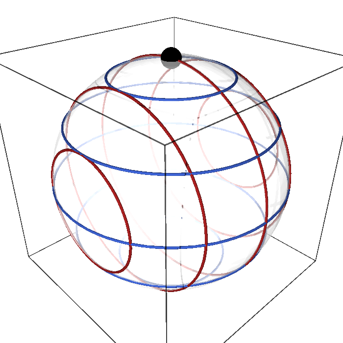
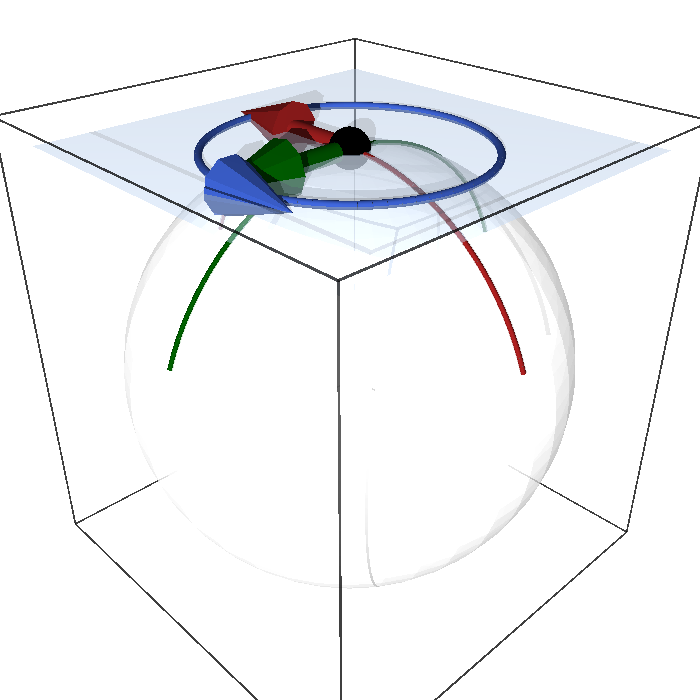
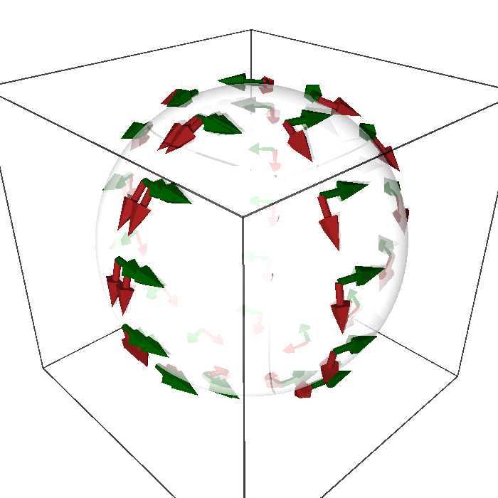
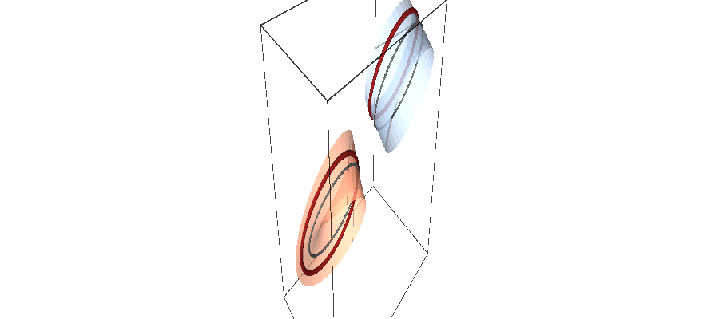
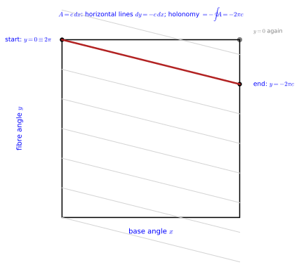
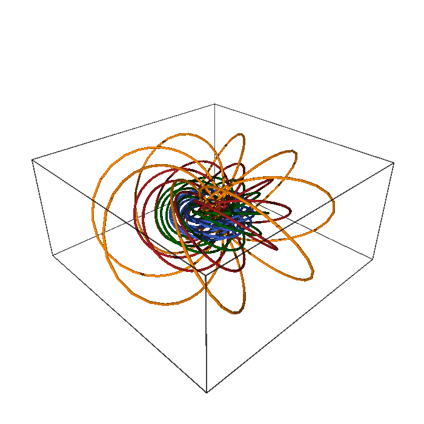

Homogeneous spaces and fibre bundles
A group acting transitively on a space makes it a homogeneous space, a coset space G/H; the projection G \to G/H is the first example of a fibre bundle, a space that looks locally like a product of a base and a fibre. The chapter has two parts: coset spaces (their construction, reductive decompositions and isotropy, and the vielbeins and metrics they inherit) and fibre bundles (vector and principal bundles, connections and their curvature, and the Hopf fibration S^3 \to S^2).
Coset spaces
A coset space G/H is a manifold on which a Lie group G acts transitively, so that every point looks like every other; spheres, projective spaces, flag manifolds and Lie groups themselves are all of this kind. Their geometry is encoded almost entirely in the Lie algebra of G: the tangent space is a complement of the Lie algebra of H, the symmetries of the tangent space are adjoint actions, and invariant metrics, connections and curvatures become statements about structure constants. This chapter has three sections. Coset spaces defines homogeneous spaces, the coset spaces S/R that realise them, the isotropy representation and the invariant metrics, with the sphere S^2 = SO(3)/SO(2) as running example. Reductive decompositions and isotropy splits the Lie algebra of S into the isotropy algebra and a tangent complement, sorts the structure constants accordingly, and distinguishes symmetric cosets from non-symmetric ones such as the flag manifold SU(3)/U(1) \times U(1), with explicit brackets and charges for each running example. Coset vielbeins pulls the Maurer-Cartan form back to the coset, obtaining a frame of one-forms, a gauge connection for the isotropy group and the invariant metric, all computed explicitly for the sphere. Every statement is followed by three examples and three exercises with hidden solutions, many of them solved with Sage.
For more on this topic, see Gadea et al. (2013, sec. 4.8, Ch. 6), Lee (2013, Ch. 21) and Rudolph and Schmidt (2013, sec. 5.7, Ch. 6).
Coset spaces
The cosets of a subgroup were defined as sets in Cosets and quotient groups. For a Lie group S and a closed subgroup R the quotient S/R is more than a set: it is a manifold on which S acts transitively, with a geometry encoded in the Lie algebra of S. This section defines homogeneous spaces and coset spaces, shows that the two notions coincide, and then studies how the isotropy group acts on the tangent space at a point, which determines the invariant metrics; it ends with the rotations that fix the north pole of the sphere.
Homogeneous spaces
A group action (Definition 4 of Lie groups and Lie algebras) moves the points of a manifold around. The most symmetric situation is the one in which the action can carry any point to any other, so that no point is distinguished; the definition below names this situation and the subgroup that keeps a chosen point fixed.
Definition 1 (Homogeneous space) A manifold M with a smooth transitive action (Definition 4 of Lie groups and Lie algebras) of a Lie group S is a homogeneous space: every point can be moved to every other by an element of S, so all points look alike. The isotropy group of a point o is its stabiliser R = S_o (Definition 11 of Group theory), a closed subgroup, and the isotropy groups of different points are conjugate.
Veriphy. Pending.
Lean. Pending.
Sage. Pending.
The sphere under rotations is the model homogeneous space of this chapter. Its isotropy group at the north pole is the circle of rotations about the vertical axis, and the figure below shows how two one-parameter subgroups together reach every point.
Example 1 (The sphere under rotations) SO(3) acts transitively on S^2 (Exercise 1), and the isotropy group of the north pole o = (0, 0, 1) is the group of rotations about the Z-axis, SO(2) (Proposition 1): Figure 1 shows the orbits of two one-parameter subgroups, e^{tL_3} fixing the pole and moving other points along parallels, e^{tL_1} moving the pole along a great circle.
A Lie group is homogeneous under its own multiplication, and it can be made homogeneous in more than one way. The second example contrasts left translations, with no isotropy at all, with the two-sided action of S \times S, whose isotropy group is a copy of S.
Example 2 (A Lie group acting on itself) Every Lie group S is a homogeneous space under its own left translations, with trivial isotropy R = \{e\}; under S \times S acting by (g, h) \cdot x = gxh^{-1} the isotropy group of e is the diagonal subgroup \{(g, g)\} \cong S (Example 23).
Homogeneity depends on the group that acts, and a manifold with few symmetries fails the test. The third example uses curvature as the obstruction: an isometry preserves curvature, so points with different curvature cannot be exchanged.
Example 3 (Spaces that are not homogeneous) The embedded torus with its induced metric is not homogeneous for its isometry group (U(1) rotating about the axis), since points on the outer and inner equators have different curvature (Ricci tensor and scalar curvature); the plane minus a point is not homogeneous for the rotations about the puncture. Homogeneity under the full isometry group is a strong condition, and it is what makes the curvature of the sphere constant.

figures/so3_orbits.sage.
Interactive figure (drag to rotate or zoom); the static version is above.
The interactive version shows the orbit of the north pole together with the cosets g\,SO(2). The great circles of e^{tL_1} (red) and e^{tL_2} (green) pass through the pole, and the blue circle is the orbit of a tangent vector at the pole under the isotropy rotations e^{sL_3}. At six points g \cdot o (black) the orange circles show what the whole coset \{g\,e^{sL_3}\} does: every element sends the pole to the same point, but turns the tangent vector into a different direction there, so the coset is a circle of frames over one point of the sphere.
The first exercise makes transitivity concrete with explicit rotation matrices. It also shows that the elements of one coset g\,SO(2) all send the pole to the same point, which is the content of the orbit-stabiliser identification of the next definition.
Exercise 1 (Transitivity and the coset of the pole) With Sage’s matrix exponential, check that e^{tL_3} fixes the pole, that e^{\varphi L_3}e^{\theta L_1} sends it to a point of colatitude \theta (and azimuth \varphi - \pi/2, since e^{\theta L_1} tilts the pole towards the negative Y-axis), and that all elements of the coset g\,SO(2) send the pole to the same point.
th, ph, t = var("th ph t", domain="real")
L1 = matrix(SR, [[0, 0, 0], [0, 0, -1], [0, 1, 0]]); L3 = matrix(SR, [[0, -1, 0], [1, 0, 0], [0, 0, 0]])
o = vector(SR, [0, 0, 1])
R3 = (t * L3).exp().apply_map(lambda e: e.rectform().simplify_full())
print("exp(t L_3) o =", (R3 * o).list(), " -> the pole is fixed: the isotropy group contains all rotations about Z")
g = ((ph * L3).exp() * (th * L1).exp()).apply_map(lambda e: e.rectform().simplify_full())
p = (g * o).apply_map(lambda e: e.simplify_full())
print("exp(phi L_3) exp(theta L_1) o =", p.list())
print("= (sin th sin ph?, ...) matches a point of the sphere with colatitude theta:", bool((p[2] - cos(th)).simplify_full() == 0) and bool((p[0]**2 + p[1]**2 - sin(th)**2).simplify_full() == 0))
print("every point of the sphere is reached (transitive): choose theta, phi as its spherical coordinates")
print("the coset of g is {g h : h = exp(t L_3)}: all these send o to the same point:", bool(((g * R3 * o) - p).apply_map(lambda e: e.simplify_full()) == 0))Output:
exp(t L_3) o = [0, 0, 1] -> the pole is fixed: the isotropy group contains all rotations about Z
exp(phi L_3) exp(theta L_1) o = [sin(ph)*sin(th), -cos(ph)*sin(th), cos(th)]
= (sin th sin ph?, ...) matches a point of the sphere with colatitude theta: True
every point of the sphere is reached (transitive): choose theta, phi as its spherical coordinates
the coset of g is {g h : h = exp(t L_3)}: all these send o to the same point: TrueVeriphy. Pending.
Lean.
/-- The rotation by `t` about the `Z`-axis moves `(1, 0, 0)` to `(cos t, sin t, 0)`. -/
theorem rotation_moves_equator (t : ℝ) : (rotation t).mulVec ![1, 0, 0] = ![Real.cos t, Real.sin t, 0]KaluzaKlein.rotation_moves_equator in KaluzaKlein/Geometry/Homogeneous.lean, namespace KaluzaKlein
Sage. Pending.
The definition claims that the isotropy groups of different points are conjugate. The second exercise checks this on the sphere by computing the generator of the isotropy group at an arbitrary point and recognising it as the rotation about the axis through that point.
Exercise 2 (Conjugate isotropy groups) Let g = e^{\varphi L_3}e^{\theta L_1} and p = g \cdot o. Show that S_p = g\,S_o\,g^{-1} for any transitive action, then check with Sage that gL_3g^{-1} annihilates p and equals p_1L_1 + p_2L_2 + p_3L_3, the generator of rotations about the axis through p.
If h \cdot o = o then (ghg^{-1}) \cdot p = gh \cdot o = g \cdot o = p, so gS_og^{-1} \subseteq S_p, and applying the same argument to g^{-1} gives the reverse inclusion. Infinitesimally, the isotropy algebra at p is spanned by gL_3g^{-1}, and since (L_a)_{bc} = -\epsilon_{abc} the matrix \sum_a p_aL_a acts as v \mapsto p \times v, which kills p and rotates the plane orthogonal to it:
th, ph, s = var("th ph s", domain="real")
L = [matrix(SR, [[0,0,0],[0,0,-1],[0,1,0]]), matrix(SR, [[0,0,1],[0,0,0],[-1,0,0]]), matrix(SR, [[0,-1,0],[1,0,0],[0,0,0]])]
simp = lambda M: M.apply_map(lambda e: e.rectform().simplify_full())
o = vector(SR, [0, 0, 1])
g = simp((ph * L[2]).exp() * (th * L[0]).exp())
p = (g * o).apply_map(lambda e: e.simplify_full())
K = simp(g * L[2] * g.inverse())
print("p = g . o =", p.list())
print("g L_3 g^{-1} =", K.rows())
print("(g L_3 g^{-1}) p = 0, so exp(s g L_3 g^{-1}) = g exp(s L_3) g^{-1} fixes p:", bool((K * p).apply_map(lambda e: e.simplify_full()) == 0))
print("g L_3 g^{-1} = p_1 L_1 + p_2 L_2 + p_3 L_3 (rotations about the axis through p):", bool(simp(K - sum(p[a] * L[a] for a in range(3))) == 0))
print("the stabiliser of p is g SO(2) g^{-1}: conjugate to the stabiliser of the pole")Output:
p = g . o = [sin(ph)*sin(th), -cos(ph)*sin(th), cos(th)]
g L_3 g^{-1} = [(0, -cos(th), -cos(ph)*sin(th)), (cos(th), 0, -sin(ph)*sin(th)), (cos(ph)*sin(th), sin(ph)*sin(th), 0)]
(g L_3 g^{-1}) p = 0, so exp(s g L_3 g^{-1}) = g exp(s L_3) g^{-1} fixes p: True
g L_3 g^{-1} = p_1 L_1 + p_2 L_2 + p_3 L_3 (rotations about the axis through p): True
the stabiliser of p is g SO(2) g^{-1}: conjugate to the stabiliser of the poleHomogeneity is not special to compact groups or to spheres. The third exercise treats the Euclidean plane, whose isometry group contains translations as well as rotations, and identifies the plane with a quotient of that group.
Exercise 3 (The Euclidean plane as a homogeneous space) The Euclidean group E(2) consists of the maps x \mapsto Ax + b with A \in SO(2) and b \in \mathbb{R}^2. Show that it acts transitively on \mathbb{R}^2, that the isotropy group of the origin is SO(2), that the isotropy group of a point p is the conjugate t_p\,SO(2)\,t_p^{-1} by the translation t_p, and describe it geometrically. What is \dim E(2) - \dim SO(2)?
The translation t_p : x \mapsto x + p sends the origin to p, so every point is reached and the action is transitive. A map x \mapsto Ax + b fixes the origin exactly when b = 0, so the isotropy group of the origin is \{x \mapsto Ax\} \cong SO(2). By the argument of Exercise 2 the isotropy group of p is t_p\,SO(2)\,t_p^{-1}, whose elements are x \mapsto A(x - p) + p: the rotations about p. The dimensions are 3 - 1 = 2 = \dim \mathbb{R}^2, as they must be for \mathbb{R}^2 \cong E(2)/SO(2) (Definition 2).
The isotropy group already appeared as a subgroup of S, and the orbit of the chosen point is all of M. Every point of M therefore corresponds to the set of group elements carrying o there, a left coset of R; the next definition turns this into a construction of manifolds from groups.
Definition 2 (Coset space) For a Lie group S and a closed subgroup R, the set of left cosets S/R (Definition 7 of Group theory) is a manifold of dimension \dim S - \dim R, the coset space, on which S acts transitively by g \cdot (g'R) = gg'R with isotropy group R at the coset eR. Conversely, for a homogeneous space M with isotropy group R at o, the orbit-stabiliser map gR \mapsto g \cdot o is a diffeomorphism S/R \cong M: every homogeneous space is a coset space. The projection \pi : S \to S/R, g \mapsto gR, is smooth and surjective, and its fibres are the cosets, copies of R.
Veriphy. Pending.
Lean. Pending.
Sage. Pending.
The sphere has two coset descriptions, one with the rotation group and one with its double cover. Both give a two-dimensional manifold, and the second identifies the sphere with the space of complex lines in \mathbb{C}^2.
Example 4 (S^2 = SO(3)/SO(2) \cong SU(2)/U(1)) S^2 \cong SO(3)/SO(2) by the orbit-stabiliser map, of dimension 3 - 1 = 2: the coset of g is the set of all rotations that send the pole to g \cdot o, which differ by a rotation about the Z-axis performed first (Exercise 1). Lifting to the double cover, S^2 = SU(2)/U(1) with U(1) = \{e^{tT_3}\}, and this is the complex projective line \mathbb{CP}^1; both descriptions are used in Part V.
One manifold can be a coset space of several groups, and the isotropy group changes with the group. The three-sphere shows three such structures, with isotropy groups of dimensions zero, three and three.
Example 5 (S^3 in three ways) S^3 = SU(2) is the coset SU(2)/\{e\}; it is SO(4)/SO(3), the sphere in \mathbb{R}^4 under its rotations with isotropy the rotations fixing a point (Section 1.1.2); and it is (SU(2) \times SU(2))/SU(2)_{\mathrm{diag}} under left and right multiplication (Example 23). The same manifold, three homogeneous structures.
The coset construction produces a large catalogue of manifolds from the classical groups. The table collects the cosets met in this book, with their dimensions and the property of being symmetric that the next section defines.
Example 6 (A list of coset spaces)
| space | S/R | \dim | symmetric? |
|---|---|---|---|
| circle S^1 | U(1), or \mathbb{R}/\mathbb{Z} | 1 | yes |
| torus T^2 | U(1) \times U(1), or \mathbb{R}^2/\mathbb{Z}^2 | 2 | yes |
| sphere S^n | SO(n+1)/SO(n) | n | yes |
| S^2 again | SU(2)/U(1) = \mathbb{CP}^1 | 2 | yes |
| S^3 | SU(2), or SO(4)/SO(3), or SU(2)\times SU(2)/SU(2) | 3 | yes |
| complex projective space \mathbb{CP}^n | SU(n+1)/U(n) | 2n | yes |
| flag manifold | SU(3)/U(1)\times U(1) | 6 | no |
| S^6 | G_2/SU(3) | 6 | no (as a G_2 coset) |
| Sp(4)/SU(2)\times U(1) (non-maximal embedding) | 6 | no | |
| any Lie group S | S/\{e\} | \dim S | yes |
The last column is defined in Section 1.1.2. The four six-dimensional entries SU(3)/U(1)^2, Sp(4)/SU(2)\times U(1), G_2/SU(3) and SU(2)^3/SU(2) (the group manifold S^3 \times S^3) are exactly the homogeneous nearly-Kähler manifolds used in heterotic string reductions (Chatzistavrakidis and Zoupanos 2009, sec. 2 and App. B), and SU(3)/U(1)^2 is the coset behind the three-generation models of the CSDR literature (Manolakos and Zoupanos 2016, eqs. 14-15); the dimensions are checked in Exercise 4.
The dimension formula \dim S/R = \dim S - \dim R is the quickest consistency check on a coset. The first exercise applies it to every row of the table, using the dimensions of the classical groups.
Exercise 4 (Dimensions and isotropy groups) For each entry of Example 6, verify \dim S/R = \dim S - \dim R from \dim SO(n) = n(n-1)/2, \dim SU(n) = n^2 - 1, \dim U(n) = n^2, \dim Sp(4) = 10, \dim G_2 = 14.
S^n: \tfrac{(n+1)n}{2} - \tfrac{n(n-1)}{2} = n. \mathbb{CP}^n: (n+1)^2 - 1 - n^2 = 2n. SU(3)/U(1)^2: 8 - 2 = 6. G_2/SU(3): 14 - 8 = 6. Sp(4)/SU(2)\times U(1): 10 - 3 - 1 = 6. SU(2)^3/SU(2): 9 - 3 = 6. S^3 = SO(4)/SO(3): 6 - 3 = 3, consistent with S^3 = SU(2) of dimension 3.
The projective spaces in the table deserve a derivation rather than a dimension count. The second exercise finds the isotropy group of a complex line and recovers the sphere as the case n = 1.
Exercise 5 (\mathbb{CP}^n as a coset) Show that SU(n+1) acts transitively on the complex lines through the origin of \mathbb{C}^{n+1} with isotropy U(n), and identify \mathbb{CP}^1 with the sphere.
A unit vector spanning a line can be mapped to e_{n+1} by a unitary matrix of determinant one (adjust a phase), so the action on lines is transitive; the elements fixing the line through e_{n+1} are \operatorname{diag}(U, \det U^{-1}) with U \in U(n), a copy of U(n), so \mathbb{CP}^n = SU(n+1)/U(n) of dimension 2n. For n = 1 the isotropy group is U(1) = \{e^{tT_3}\} and SU(2)/U(1) = S^2: a complex line in \mathbb{C}^2 is a point of the sphere, the content of the Hopf map of Section 1.2.3.
The definition describes the projection \pi : S \to S/R and its fibres abstractly. The third exercise computes the projection SU(2) \to S^2 in Euler angles and checks that its fibres are exactly the cosets g\,U(1).
Exercise 6 (The fibres of SU(2) \to S^2) For g = e^{\varphi T_3}e^{\theta T_1}e^{\psi T_3} define \pi(g) = n by gT_3g^{-1} = n_aT_a. Explain why \pi is constant on the cosets g\,U(1), and check with Sage that n does not depend on \psi, that |n| = 1, and that n is the point e^{\varphi L_3}e^{\theta L_1} \cdot o of Exercise 1.
For h = e^{\psi T_3}, (gh)T_3(gh)^{-1} = g(hT_3h^{-1})g^{-1} = gT_3g^{-1} because h commutes with T_3; so \pi is constant on each coset, and it separates different cosets because the elements commuting with T_3 are exactly the e^{\psi T_3}. The map X \mapsto gXg^{-1} on \mathfrak{su}(2) is the rotation of \mathbb{R}^3 that g covers (Exercise 46 of Group theory), so n is that rotation applied to the pole:
th, ph, ps = var("th ph ps", domain="real")
s1 = matrix(SR, [[0,1],[1,0]]); s2 = matrix(SR, [[0,-I],[I,0]]); s3 = matrix(SR, [[1,0],[0,-1]])
T = [-I/2 * s1, -I/2 * s2, -I/2 * s3]
E3 = lambda a: matrix(SR, [[cos(a/2) - I*sin(a/2), 0], [0, cos(a/2) + I*sin(a/2)]]) # exp(a T_3)
E1 = lambda a: matrix(SR, [[cos(a/2), -I*sin(a/2)], [-I*sin(a/2), cos(a/2)]]) # exp(a T_1)
g = E3(ph) * E1(th) * E3(ps)
X = g * T[2] * g.conjugate_transpose() # g^{-1} = g^dagger for g in SU(2)
red = lambda e: SR(e).expand().real_part().trig_reduce().simplify_full() + I * SR(e).expand().imag_part().trig_reduce().simplify_full()
n = vector([red(-2 * (T[a] * X).trace()) for a in range(3)])
print("n(theta, phi, psi) =", n.list())
print("n does not depend on psi (the fibre is the coset g U(1)):", all(bool(diff(c, ps) == 0) for c in n))
print("|n|^2 = 1, a point of the sphere:", bool((n * n - 1).trig_reduce().simplify_full() == 0))
print("n = (sin th sin ph, -sin th cos ph, cos th), the point exp(phi L_3) exp(theta L_1) o of exr-transitive-so3:",
bool((n - vector([sin(th)*sin(ph), -sin(th)*cos(ph), cos(th)])).apply_map(lambda e: e.trig_reduce().simplify_full()) == 0))
print("dim SU(2) - dim U(1) = 3 - 1 = 2 = dim S^2")Output:
n(theta, phi, psi) = [sin(ph)*sin(th), -cos(ph)*sin(th), cos(th)]
n does not depend on psi (the fibre is the coset g U(1)): True
|n|^2 = 1, a point of the sphere: True
n = (sin th sin ph, -sin th cos ph, cos th), the point exp(phi L_3) exp(theta L_1) o of exr-transitive-so3: True
dim SU(2) - dim U(1) = 3 - 1 = 2 = dim S^2Isotropy representation and invariant metrics
The isotropy group fixes the point o, but it does not fix the directions at o: a rotation about the vertical axis fixes the north pole and turns the tangent plane there. This linear action on the tangent space is the main algebraic invariant of a coset space, and the definition below names it.
Definition 3 (Isotropy representation) The isotropy group R of o fixes o, so each h \in R acts on the tangent space T_o(S/R) by its differential dh_o; this linear action is the isotropy representation of R on T_o(S/R), a representation (Definition 16 of Group theory) of dimension \dim S/R. Its decomposition into irreducibles of R (Branching rules) governs which fields survive the reduction of Part V.
Veriphy. Pending.
Lean. Pending.
Sage. Pending.
On the two-sphere the isotropy representation is the rotation of a plane. Over the complex numbers it splits into two one-dimensional pieces, a fact that becomes the notion of isotropy charges in the next section.
Example 7 (SO(2) rotating the tangent plane at the pole) A rotation about the Z-axis by t fixes the pole and rotates the tangent plane there by the angle t: the isotropy representation of SO(2) on T_oS^2 = \mathbb{R}^2 is the vector representation of SO(2), which over \mathbb{C} is the sum of the charges +1 and -1 (Section 1.1.2).
In higher dimensions the isotropy group of a sphere is larger and acts irreducibly. The second example records this for the three-sphere and for all spheres at once.
Example 8 (SO(3) on the tangent space of S^3) For S^3 = SO(4)/SO(3) the isotropy group SO(3) acts on T_oS^3 = \mathbb{R}^3 by its vector representation (Proposition 3 of Section 1.1.2), irreducible; for S^n = SO(n+1)/SO(n) it is the vector representation of SO(n) on \mathbb{R}^n.
When the isotropy group is abelian, the isotropy representation breaks into many small pieces. The flag manifold is the example of the chapter in which three different pieces appear.
Example 9 (U(1) \times U(1) on the flag manifold) For SU(3)/U(1) \times U(1) the six-dimensional tangent space splits into three complex lines with charges the three positive roots (2, 0), (1, \sqrt3), (-1, \sqrt3) under (\lambda_3, \lambda_8) (Proposition 4 of Section 1.1.2): three inequivalent one-dimensional representations, each with its conjugate.
The first exercise computes the isotropy representation of the sphere in two ways, as a differential and as an adjoint action. Their agreement anticipates the identification of the tangent space with a complement in the Lie algebra (Definition 5).
Exercise 7 (Two computations of the isotropy representation) For h = e^{tL_3}, compute the matrix of dh_o on T_oS^2 = \operatorname{span}(e_1, e_2) and the matrix of \operatorname{Ad}_h : X \mapsto hXh^{-1} on \operatorname{span}(L_1, L_2), and check with Sage that h(X \cdot o) = (\operatorname{Ad}_hX) \cdot o for X = L_1, L_2, where X \cdot o is the velocity of e^{sX} \cdot o at s = 0.
Since h is linear on \mathbb{R}^3, dh_o is h restricted to the plane z = 0, the rotation matrix by t. The adjoint action gives the same matrix in the basis (L_1, L_2), and the intertwining is the identity h\,X\,o = (hXh^{-1})\,h\,o = (hXh^{-1})\,o, using h\,o = o:
t = var("t", domain="real")
L = [matrix(SR, [[0,0,0],[0,0,-1],[0,1,0]]), matrix(SR, [[0,0,1],[0,0,0],[-1,0,0]]), matrix(SR, [[0,-1,0],[1,0,0],[0,0,0]])]
simp = lambda M: M.apply_map(lambda e: e.rectform().simplify_full())
h = simp((t * L[2]).exp()); o = vector(SR, [0, 0, 1])
dh = h.submatrix(0, 0, 2, 2) # h is linear, so dh_o = h restricted to the tangent plane z = 0
print("dh_o on T_o S^2 in the basis (e_1, e_2):", dh.rows())
coef = lambda X, b: (-(X * L[b]).trace() / 2).simplify_full() # tr(L_a L_b) = -2 delta_ab
Ad = matrix(SR, 2, 2, lambda b, a: coef(simp(h * L[a] * h.inverse()), b))
print("Ad_h on k in the basis (L_1, L_2):", Ad.rows())
print("L_1 . o =", (L[0] * o).list(), " L_2 . o =", (L[1] * o).list())
print("h (X . o) = (Ad_h X) . o for X = L_1, L_2:", all(bool(simp(matrix(h * (L[a] * o)) - matrix(simp(h * L[a] * h.inverse()) * o)) == 0) for a in range(2)))
print("both matrices are rotations by the angle t (determinant 1):", bool(dh.det().simplify_full() == 1) and bool(Ad.det().simplify_full() == 1))Output:
dh_o on T_o S^2 in the basis (e_1, e_2): [(cos(t), -sin(t)), (sin(t), cos(t))]
Ad_h on k in the basis (L_1, L_2): [(cos(t), -sin(t)), (sin(t), cos(t))]
L_1 . o = [0, -1, 0] L_2 . o = [1, 0, 0]
h (X . o) = (Ad_h X) . o for X = L_1, L_2: True
both matrices are rotations by the angle t (determinant 1): TrueThe same intertwining argument works for every sphere. The second exercise derives the isotropy representation of S^n = SO(n+1)/SO(n) from the block form of the isotropy group.
Exercise 8 (The isotropy representation of S^n) Let o = e_{n+1} \in S^n \subset \mathbb{R}^{n+1}. Show that the isotropy group of o in SO(n+1) consists of the block matrices \operatorname{diag}(A, 1) with A \in SO(n), that T_oS^n = \mathbb{R}^n \times \{0\}, and that the isotropy representation is A \mapsto A, the vector representation of SO(n).
If go = o then the last column of g is e_{n+1}; since the columns of g are orthonormal, the other columns are orthogonal to e_{n+1}, so the last row is (0, \dots, 0, 1) too, and g = \operatorname{diag}(A, 1) with A orthogonal of determinant 1. The tangent space at o consists of the vectors orthogonal to o, namely \mathbb{R}^n \times \{0\}. Each g is linear, so dg_o = g restricted to the tangent space, which is A. The vector representation of SO(n) is irreducible for n \geq 2 (Definition 18 of Group theory), so the spheres have one radius (Definition 4); for n = 2 this is Example 7.
The two computations of the first exercise are instances of a general identity. The third exercise proves it for any homogeneous space, which is what allows the isotropy representation to be computed entirely inside the Lie algebra.
Exercise 9 (The isotropy representation is an adjoint action) For X \in \mathfrak{s} let X \cdot o = \frac{d}{ds}\big|_0 e^{sX} \cdot o. Show that for h \in R, dh_o(X \cdot o) = (\operatorname{Ad}_hX) \cdot o, and deduce that X \cdot o = 0 for X \in \mathfrak{r} and that the isotropy representation is the action of \operatorname{Ad}_h on \mathfrak{s}/\mathfrak{r}.
dh_o(X \cdot o) = \frac{d}{ds}\big|_0 h\,e^{sX} \cdot o = \frac{d}{ds}\big|_0 (h\,e^{sX}h^{-1}) h \cdot o = \frac{d}{ds}\big|_0 e^{s\operatorname{Ad}_hX} \cdot o = (\operatorname{Ad}_hX) \cdot o, using h \cdot o = o and he^{sX}h^{-1} = e^{s\,hXh^{-1}}. For X \in \mathfrak{r} the curve e^{sX} stays in R and fixes o, so X \cdot o = 0. The map X \mapsto X \cdot o is onto T_o(S/R) (the action is transitive) with kernel \mathfrak{r} (by dimension), so T_o(S/R) \cong \mathfrak{s}/\mathfrak{r}, and the identity says that dh_o corresponds to the action of \operatorname{Ad}_h on the quotient, which is well defined because \operatorname{Ad}_h preserves \mathfrak{r}.
A metric on a homogeneous space should respect the symmetry that makes all points alike. The definition below asks every group element to be an isometry and shows that this reduces the metric to a single inner product at one point, constrained by the isotropy representation.
Definition 4 (Invariant metric) A metric g on S/R is S-invariant if every h \in S acts as an isometry (Definition 49 of Differential geometry). Such a metric is determined by its value at o, an inner product on T_o(S/R) invariant under the isotropy representation; when the isotropy representation is irreducible, the invariant inner product is unique up to a scale, so the invariant metric has a single radius, and in general there is one radius per irreducible component.
Veriphy. Pending.
Lean. Pending.
Sage. Pending.
The irreducible isotropy representation of the two-sphere leaves no freedom beyond the overall size. The first example identifies the resulting family with the round metrics.
Example 10 (The round metric) The isotropy representation of SO(2) on T_oS^2 is irreducible over \mathbb{R}, so the SO(3)-invariant metrics on S^2 are the round metrics R_0^2(d\theta^2 + \sin^2\theta\,d\varphi^2) of a single radius R_0 (Example 191 of Differential geometry): the sphere of CSDR has one size parameter.
The number of invariant metrics depends on the coset structure, not only on the manifold. The three-sphere has one round family as a sphere and a six-parameter family as a group.
Example 11 (Metrics on S^3) As SO(4)/SO(3) with irreducible isotropy, S^3 has only the round metrics; as SU(2)/\{e\} with trivial isotropy, every left-invariant metric is allowed, a 6-parameter family (symmetric 3 \times 3 matrices g_{ab} in the frame of Example 63 of Lie groups and Lie algebras), the squashed spheres, of which only the bi-invariant one is SU(2) \times SU(2)-invariant (Example 193 of Differential geometry).
Several inequivalent irreducible components give several independent radii. The flag manifold, with three components, carries a three-parameter family of invariant metrics.
Example 12 (Three radii on the flag manifold) The isotropy representation of SU(3)/U(1)^2 has three inequivalent irreducible components, so the SU(3)-invariant metrics form a three-parameter family ds^2 = R_1^2(e^1e^1 + e^2e^2) + R_2^2(e^4e^4 + e^5e^5) + R_3^2(e^6e^6 + e^7e^7) in the vielbein of Section 1.1.3; the nearly-Kähler metric is the one with equal radii.
Invariance of an inner product under a connected group can be tested on the generators. The first exercise solves the infinitesimal condition X^{\mathsf{T}}g + gX = 0 for the isotropy generators of S^2 and of S^3 = SO(4)/SO(3).
Exercise 10 (Invariant inner products of the spheres) Find all symmetric 2 \times 2 matrices g with X^{\mathsf{T}}g + gX = 0 for X = \begin{pmatrix} 0 & -1 \\ 1 & 0 \end{pmatrix} and check that they are invariant under the finite rotations. Then find all symmetric 3 \times 3 matrices invariant under the three generators L_a of the vector representation of \mathfrak{so}(3).
With g = \begin{pmatrix} a & b \\ b & c \end{pmatrix}, X^{\mathsf{T}}g + gX = \begin{pmatrix} 2b & c - a \\ c - a & - 2b \end{pmatrix}, so b = 0 and a = c: g = a\,1. Differentiating R(t)^{\mathsf{T}}gR(t) = g at t = 0 gives the infinitesimal condition, and conversely the multiples of the identity are invariant under every rotation. For \mathfrak{so}(3) the solution is again g = a\,1, one radius for S^3 = SO(4)/SO(3), as Schur’s lemma (Theorem 3 of Group theory) predicts for an irreducible representation:
a, b, c, t = var("a b c t", domain="real")
X = matrix(SR, [[0, -1], [1, 0]]); g = matrix(SR, [[a, b], [b, c]])
eqs = [e == 0 for e in (X.transpose() * g + g * X).list()]
print("solutions of X^T g + g X = 0:", solve(eqs, a, b, c))
R = matrix(SR, [[cos(t), -sin(t)], [sin(t), cos(t)]])
print("R(t)^T (a 1) R(t) = a 1:", bool((R.transpose() * a * identity_matrix(2) * R).simplify_full() == a * identity_matrix(2)))
gs = var("g11 g12 g13 g22 g23 g33", domain="real")
G = matrix(SR, [[gs[0], gs[1], gs[2]], [gs[1], gs[3], gs[4]], [gs[2], gs[4], gs[5]]])
L = [matrix(SR, [[0,0,0],[0,0,-1],[0,1,0]]), matrix(SR, [[0,0,1],[0,0,0],[-1,0,0]]), matrix(SR, [[0,-1,0],[1,0,0],[0,0,0]])]
eqs3 = [e == 0 for Lb in L for e in (Lb.transpose() * G + G * Lb).list()]
print("solutions for the vector representation of so(3):", solve(eqs3, *gs))Output:
solutions of X^T g + g X = 0: [
[a == r1, b == 0, c == r1]
]
R(t)^T (a 1) R(t) = a 1: True
solutions for the vector representation of so(3): [
[g11 == r2, g12 == 0, g13 == 0, g22 == r2, g23 == 0, g33 == r2]
]When the isotropy representation is reducible but its components are inequivalent, the invariant metric is block-diagonal with one constant per block. The second exercise derives this for two products of spheres.
Exercise 11 (Invariant metrics on products)
- On T^2 = (U(1) \times U(1))/\{e\} the isotropy group is trivial: how many parameters do the invariant metrics have? (b) On S^2 \times S^2 = (SO(3) \times SO(3))/(SO(2) \times SO(2)) the isotropy representation is the sum of the two plane rotations, each factor acting on its own plane. Show that the invariant metrics are R_1^2\,g_{S^2} \oplus R_2^2\,g_{S^2}.
- With no isotropy condition every inner product on \mathbb{R}^2 is allowed: three parameters, the constant metrics a\,dx^2 + 2b\,dx\,dy + c\,dy^2 on the flat torus. (b) Write g = \begin{pmatrix} A & B \\ B^{\mathsf{T}} & C \end{pmatrix} in 2 \times 2 blocks. Invariance under the rotations R_1(t) of the first plane alone gives R_1^{\mathsf{T}}AR_1 = A, so A = R_1^2\,1 by Exercise 10, and R_1(t)^{\mathsf{T}}B = B for all t, which forces B = 0 (take t = \pi: -B = B). The second factor gives C = R_2^2\,1. The two radii are independent, because the two components are inequivalent representations of SO(2) \times SO(2).
The flag manifold has three inequivalent components, and its family of invariant metrics can be found by solving the invariance equations directly. The third exercise does this with the Gell-Mann matrices and confirms the three radii of Example 12.
Exercise 12 (Invariant metrics on the flag manifold) With Y_A = i\lambda_A, compute the matrices F_3, F_8 of \operatorname{ad}_{Y_3}, \operatorname{ad}_{Y_8} on \mathfrak{k} = \operatorname{span}(Y_1, Y_2, Y_4, Y_5, Y_6, Y_7), and solve F_i^{\mathsf{T}}g + gF_i = 0 with Sage for a symmetric 6 \times 6 matrix g.
Each F_i is block-diagonal with 2 \times 2 rotation generators on the planes (1, 2), (4, 5), (6, 7), with weights (2, 1, -1) for Y_3 and (0, \sqrt3, \sqrt3) for Y_8: the charges of Example 9. No two planes carry the same pair of weights up to sign, so the off-diagonal blocks vanish, and each diagonal block is a multiple of the identity: three free parameters, the three radii.
lam = [matrix(SR, [[0,1,0],[1,0,0],[0,0,0]]), matrix(SR, [[0,-I,0],[I,0,0],[0,0,0]]), matrix(SR, [[1,0,0],[0,-1,0],[0,0,0]]),
matrix(SR, [[0,0,1],[0,0,0],[1,0,0]]), matrix(SR, [[0,0,-I],[0,0,0],[I,0,0]]), matrix(SR, [[0,0,0],[0,0,1],[0,1,0]]),
matrix(SR, [[0,0,0],[0,0,-I],[0,I,0]]), matrix(SR, [[1,0,0],[0,1,0],[0,0,-2]])/sqrt(3)]
Y = [I * l for l in lam]
k = [0, 1, 3, 4, 5, 6]
coef = lambda Z, B: (-(Z * Y[B]).trace() / 2).simplify_full() # tr(Y_A Y_B) = -2 delta_AB
F = {i: matrix(SR, 6, 6, lambda b, a: coef(Y[i] * Y[k[a]] - Y[k[a]] * Y[i], k[b])) for i in [2, 7]}
for i in [2, 7]:
print(f"F_{i+1} (ad of Y_{i+1} on k, order 1,2,4,5,6,7):", F[i].rows())
gv = [var(f"g_{a}{b}") for a in range(6) for b in range(a, 6)]
G = matrix(SR, 6, 6); idx = 0
for a in range(6):
for b in range(a, 6):
G[a, b] = G[b, a] = gv[idx]; idx += 1
eqs = [e == 0 for i in [2, 7] for e in (F[i].transpose() * G + G * F[i]).list()]
sol = solve(eqs, *gv, solution_dict=True)[0]
Gs = G.subs(sol)
print("general invariant g:", Gs.rows())
print("number of free parameters:", len(set(Gs.variables())))Output:
F_3 (ad of Y_3 on k, order 1,2,4,5,6,7): [(0, 2, 0, 0, 0, 0), (-2, 0, 0, 0, 0, 0), (0, 0, 0, 1, 0, 0), (0, 0, -1, 0, 0, 0), (0, 0, 0, 0, 0, -1), (0, 0, 0, 0, 1, 0)]
F_8 (ad of Y_8 on k, order 1,2,4,5,6,7): [(0, 0, 0, 0, 0, 0), (0, 0, 0, 0, 0, 0), (0, 0, 0, sqrt(3), 0, 0), (0, 0, -sqrt(3), 0, 0, 0), (0, 0, 0, 0, 0, sqrt(3)), (0, 0, 0, 0, -sqrt(3), 0)]
general invariant g: [(r2, 0, 0, 0, 0, 0), (0, r2, 0, 0, 0, 0), (0, 0, r3, 0, 0, 0), (0, 0, 0, r3, 0, 0), (0, 0, 0, 0, r1, 0), (0, 0, 0, 0, 0, r1)]
number of free parameters: 3The section ends with a first concrete statement about cosets: the rotations about the vertical axis fix the north pole and are isometries of \mathbb{R}^3. Together with transitivity this identifies SO(2) as the isotropy group in S^2 = SO(3)/SO(2).
Proposition 1 (The isotropy group of the pole) Every rotation about the Z-axis fixes the north pole, moves the point (1, 0, 0) of the equator to (\cos t, \sin t, 0), and preserves the length of every vector.
Veriphy. Pending.
Lean.
/-- The rotations about the `Z`-axis fix the north pole `(0, 0, 1)`. -/
theorem rotation_fixes_pole (t : ℝ) : (rotation t).mulVec ![0, 0, 1] = ![0, 0, 1]KaluzaKlein.rotation_fixes_pole in KaluzaKlein/Geometry/Homogeneous.lean, namespace KaluzaKlein
/-- The rotation by `t` about the `Z`-axis moves `(1, 0, 0)` to `(cos t, sin t, 0)`. -/
theorem rotation_moves_equator (t : ℝ) : (rotation t).mulVec ![1, 0, 0] = ![Real.cos t, Real.sin t, 0]KaluzaKlein.rotation_moves_equator in KaluzaKlein/Geometry/Homogeneous.lean, namespace KaluzaKlein
/-- Rotations preserve the unit sphere: the image of a unit vector is a unit vector. -/
theorem rotation_preserves_norm (t : ℝ) (v : Fin 3 → ℝ) :
((rotation t).mulVec v) ⬝ᵥ ((rotation t).mulVec v) = v ⬝ᵥ vKaluzaKlein.rotation_preserves_norm in KaluzaKlein/Geometry/Homogeneous.lean, namespace KaluzaKlein
Sage. Pending.
A single concrete rotation makes the three statements visible. The quarter turn about the Z-axis is a permutation matrix up to sign, and all three claims can be read off from it.
Example 13 (The quarter turn) At t = \pi/2, e^{tL_3} = \begin{pmatrix} 0 & -1 & 0 \\ 1 & 0 & 0 \\ 0 & 0 & 1 \end{pmatrix}: the third column is (0, 0, 1), so the pole is fixed; the first column is (0, 1, 0) = (\cos\frac{\pi}{2}, \sin\frac{\pi}{2}, 0), the image of (1, 0, 0); and the columns are orthonormal, so lengths are preserved.
The isotropy group of the pole also fixes the antipodal point. This shows that different points can share the same isotropy group, which is compatible with conjugacy because the rotation by \pi about the X-axis normalises SO(2).
Example 14 (The south pole has the same isotropy group) Every e^{tL_3} also fixes -o = (0, 0, -1), so the isotropy group of the south pole is the same SO(2). The rotation g = e^{\pi L_1} sends o to -o and conjugates e^{tL_3} to e^{-tL_3}: conjugation maps the isotropy group onto itself, reversing the sense of rotation, as seen from the outside of the sphere.
For any other point the isotropy group is a different circle of rotations. The third example computes it for a point of the equator by conjugating with a quarter turn, the construction of Exercise 2.
Example 15 (The isotropy group of a point of the equator) g = e^{\frac{\pi}{2}L_2} sends the pole to (1, 0, 0), since e^{tL_2}o = (\sin t, 0, \cos t). Then gL_3g^{-1} = \cos\frac{\pi}{2}\,L_3 + \sin\frac{\pi}{2}\,L_1 = L_1, by e^{t\operatorname{ad}_{L_2}}L_3 = \cos t\,L_3 + \sin t\,L_1 from Equation 2 of Lie groups and Lie algebras: the isotropy group of (1, 0, 0) is \{e^{sL_1}\}, the rotations about the X-axis.
The first exercise proves the proposition by hand from the exponential series. The matrix L_3 satisfies L_3^3 = -L_3, which makes the series collapse to sines and cosines.
Exercise 13 (The rotation matrix about the Z-axis) Show that L_3^3 = -L_3 and use it to sum e^{tL_3} = 1 + \sin t\,L_3 + (1 - \cos t)\,L_3^2. Read off the three statements of Proposition 1 and check \det e^{tL_3} = 1.
L_3^2 = \operatorname{diag}(-1, -1, 0) and L_3^3 = L_3L_3^2 = -L_3. The series splits into odd powers L_3^{2k+1} = (-1)^kL_3 and even powers L_3^{2k} = (-1)^{k-1}L_3^2 (k \geq 1), giving 1 + \sin t\,L_3 + (1 - \cos t)L_3^2 = \begin{pmatrix} \cos t & -\sin t & 0 \\ \sin t & \cos t & 0 \\ 0 & 0 & 1 \end{pmatrix}. Its third column is the pole, its first column is (\cos t, \sin t, 0), and R^{\mathsf{T}}R = 1 since the columns are orthonormal, so |Rv| = |v|; the determinant is \cos^2t + \sin^2t = 1.
The proposition shows that rotations about the Z-axis fix the pole, but the isotropy group could a priori be larger. The second exercise shows that it is not, completing the identification S^2 = SO(3)/SO(2).
Exercise 14 (Nothing else fixes the pole) Show that every g \in SO(3) with go = o is of the form e^{tL_3}.
The third column of g is go = o. The columns are orthonormal, so the first two columns are orthogonal to o and lie in the plane z = 0; by orthogonality of the rows, the third row is (0, 0, 1). Hence g = \operatorname{diag}(A, 1) with A \in O(2) and \det A = \det g = 1, so A is a rotation \begin{pmatrix} \cos t & -\sin t \\ \sin t & \cos t \end{pmatrix} and g = e^{tL_3} by Exercise 13.
Enlarging the group enlarges the isotropy group but can leave the coset unchanged. The third exercise replaces SO(3) by the full orthogonal group, whose isotropy group has two components.
Exercise 15 (Reflections and O(3)/O(2)) Find the isotropy group of the pole in O(3), show that it is isomorphic to O(2) and has two components, and conclude that S^2 = O(3)/O(2) as well. Which elements of the isotropy group act on T_oS^2 with determinant -1?
The argument of Exercise 14 without the determinant condition gives g = \operatorname{diag}(A, 1) with A \in O(2) arbitrary: the rotations e^{tL_3} and the reflections \operatorname{diag}(A, 1) with \det A = -1, for instance \operatorname{diag}(1, -1, 1), the reflection in the XZ-plane. O(3) acts transitively on the sphere because SO(3) already does, so S^2 = O(3)/O(2). The reflections act on T_oS^2 by A with determinant -1: they reverse the orientation of the tangent plane, so O(3)-invariant structures on S^2 cannot include an orientation, while SO(3)-invariant ones can (the area form).
Reductive decompositions and isotropy
The geometry of a coset space S/R is encoded in the Lie algebra of S and its split into the Lie algebra of R and a complement that plays the role of the tangent space. This section defines reductive and symmetric decompositions, the split of the structure constants and the isotropy charges, and computes them explicitly for the sphere, the three-sphere and the flag manifold SU(3)/U(1) \times U(1).
Reductive decompositions
By Exercise 9 the tangent space at o is the quotient \mathfrak{s}/\mathfrak{r}, on which the isotropy group acts by the adjoint action. A quotient is awkward to compute with; it is far more convenient to pick a subspace of \mathfrak{s} that represents it, and the definition below asks that this subspace be preserved by the isotropy algebra.
Definition 5 (Reductive decomposition) Let \mathfrak{s} and \mathfrak{r} be the Lie algebras of S and R. A reductive decomposition is a vector space splitting \mathfrak{s} = \mathfrak{r} \oplus \mathfrak{k} with [\mathfrak{r}, \mathfrak{k}] \subseteq \mathfrak{k}; then \mathfrak{k} is identified with the tangent space T_o(S/R), by X \mapsto \frac{d}{dt}e^{tX} \cdot o, and the isotropy representation (Definition 3) is the adjoint action of R on \mathfrak{k}. Every coset of a compact group is reductive: take \mathfrak{k} orthogonal to \mathfrak{r} for the Killing form (Definition 10 of Lie groups and Lie algebras).
Veriphy. Pending.
Lean. Pending.
Sage. Pending.
For the sphere the decomposition can be read off from the commutation relations of \mathfrak{so}(3). The isotropy generator is L_3, and the other two generators span a plane that L_3 rotates into itself.
Example 16 (\mathfrak{so}(3) = \mathfrak{r} \oplus \mathfrak{k} for S^2) With the basis Equation 1 of Lie groups and Lie algebras, \mathfrak{r} = \operatorname{span}(L_3) and \mathfrak{k} = \operatorname{span}(L_1, L_2). From [L_a, L_b] = \epsilon_{abc}L_c: [L_3, L_1] = L_2 and [L_3, L_2] = -L_1 lie in \mathfrak{k} (Proposition 2). Figure 2 shows the geometry: L_1, L_2 move the pole along the two tangent directions, L_3 rotates the tangent plane.
The three-sphere as a coset of SO(4) works the same way one dimension up. The rotations of \mathbb{R}^4 that fix the last coordinate axis form the isotropy algebra, and the rotations mixing that axis with the others span the complement.
Example 17 (\mathfrak{so}(4) = \mathfrak{so}(3) \oplus \mathfrak{k} for S^3) The rotation generators of \mathbb{R}^4 are the six antisymmetric matrices M_{ij}, i < j, with (M_{ij})_{kl} = \delta_{ik}\delta_{jl} - \delta_{il}\delta_{jk}. The isotropy algebra of the point (0, 0, 0, 1) is \mathfrak{r} = \operatorname{span}(M_{01}, M_{02}, M_{12}) \cong \mathfrak{so}(3), the rotations of the first three coordinates, and \mathfrak{k} = \operatorname{span}(M_{03}, M_{13}, M_{23}), the three directions tangent to S^3; [M_{01}, M_{03}] = -M_{13}, [M_{01}, M_{13}] = M_{03}, [M_{01}, M_{23}] = 0 (Exercise 31, Proposition 3): \mathfrak{r} rotates \mathfrak{k} as \mathfrak{so}(3) rotates \mathbb{R}^3, the vector representation.
The flag manifold has an abelian isotropy algebra, the diagonal Gell-Mann matrices, and a six-dimensional complement. The example also notes the degenerate case of a group regarded as a coset of the trivial subgroup.
Example 18 (\mathfrak{su}(3) = \mathfrak{r} \oplus \mathfrak{k} for the flag manifold) With the Gell-Mann basis Equation 16 of Lie groups and Lie algebras and \mathfrak{r} = \operatorname{span}(\lambda_3, \lambda_8), \mathfrak{k} = \operatorname{span}(\lambda_1, \lambda_2, \lambda_4, \lambda_5, \lambda_6, \lambda_7) of dimension 6; the structure constants (Exercise 108 of Lie groups and Lie algebras) show [\mathfrak{r}, \mathfrak{k}] \subseteq \mathfrak{k} (Exercise 22). The group as a coset S/\{e\} has \mathfrak{k} = \mathfrak{s}, trivially reductive.

figures/coset_tangent_plane.sage.
The definition asserts that the Killing-orthogonal complement is reductive for a compact group. The first exercise computes the Killing form of \mathfrak{so}(3) and \mathfrak{su}(3) and checks that the complements chosen in the examples are exactly the orthogonal ones.
Exercise 16 (The Killing-orthogonal complement) Compute the Killing form \kappa(X, Y) = \operatorname{tr}(\operatorname{ad}_X\operatorname{ad}_Y) of \mathfrak{so}(3) in the basis L_a and of \mathfrak{su}(3) in the basis Y_A = i\lambda_A, find the orthogonal complements of \operatorname{span}(L_3) and of \operatorname{span}(Y_3, Y_8), and check [\mathfrak{r}, \mathfrak{k}] \subseteq \mathfrak{k}. Why does orthogonality imply the reductive property?
The Killing forms are -2\,\delta_{ab} and -12\,\delta_{AB}, so the complements are spanned by the remaining basis elements, as in Example 16 and Example 18. In general \kappa is invariant, \kappa([X, Y], Z) = -\kappa(Y, [X, Z]); for X, Z \in \mathfrak{r} and Y \in \mathfrak{k} this gives \kappa([X, Y], Z) = -\kappa(Y, [X, Z]) = 0 since [X, Z] \in \mathfrak{r}, so [X, Y] is orthogonal to \mathfrak{r}, and for a compact group, where \kappa is negative definite, the orthogonal complement of \mathfrak{r} is \mathfrak{k}:
def analyse(name, basis, coef, r):
n = len(basis)
ad = [matrix(SR, n, n, lambda b, a: coef(basis[A] * basis[a] - basis[a] * basis[A], b)) for A in range(n)]
kappa = matrix(SR, n, n, lambda A, B: (ad[A] * ad[B]).trace().simplify_full())
print(name, "Killing form matrix:", kappa.rows())
comp = [A for A in range(n) if A not in r and all(kappa[A, i] == 0 for i in r)]
print(name, "basis elements orthogonal to r:", [A + 1 for A in comp], " dim k =", n - len(r))
ok = all(all(coef(basis[i] * basis[a] - basis[a] * basis[i], j) == 0 for j in r) for i in r for a in comp)
print(name, "[r, k] in k:", ok)
L = [matrix(SR, [[0,0,0],[0,0,-1],[0,1,0]]), matrix(SR, [[0,0,1],[0,0,0],[-1,0,0]]), matrix(SR, [[0,-1,0],[1,0,0],[0,0,0]])]
analyse("so(3)", L, lambda Z, b: (-(Z * L[b]).trace() / 2).simplify_full(), [2])
lam = [matrix(SR, [[0,1,0],[1,0,0],[0,0,0]]), matrix(SR, [[0,-I,0],[I,0,0],[0,0,0]]), matrix(SR, [[1,0,0],[0,-1,0],[0,0,0]]),
matrix(SR, [[0,0,1],[0,0,0],[1,0,0]]), matrix(SR, [[0,0,-I],[0,0,0],[I,0,0]]), matrix(SR, [[0,0,0],[0,0,1],[0,1,0]]),
matrix(SR, [[0,0,0],[0,0,-I],[0,I,0]]), matrix(SR, [[1,0,0],[0,1,0],[0,0,-2]])/sqrt(3)]
Y = [I * l for l in lam]
analyse("su(3)", Y, lambda Z, b: (-(Z * Y[b]).trace() / 2).simplify_full(), [2, 7])Output:
so(3) Killing form matrix: [(-2, 0, 0), (0, -2, 0), (0, 0, -2)]
so(3) basis elements orthogonal to r: [1, 2] dim k = 2
so(3) [r, k] in k: True
su(3) Killing form matrix: [(-12, 0, 0, 0, 0, 0, 0, 0), (0, -12, 0, 0, 0, 0, 0, 0), (0, 0, -12, 0, 0, 0, 0, 0), (0, 0, 0, -12, 0, 0, 0, 0), (0, 0, 0, 0, -12, 0, 0, 0), (0, 0, 0, 0, 0, -12, 0, 0), (0, 0, 0, 0, 0, 0, -12, 0), (0, 0, 0, 0, 0, 0, 0, -12)]
su(3) basis elements orthogonal to r: [1, 2, 4, 5, 6, 7] dim k = 6
su(3) [r, k] in k: TrueA reductive complement need not be unique in general, but for the sphere it is. The second exercise shows this with the eigenvalues of \operatorname{ad}_{L_3} and contrasts it with an abelian algebra, where every complement works.
Exercise 17 (Uniqueness of the reductive complement) Show that \operatorname{span}(L_1, L_2) is the only two-dimensional subspace \mathfrak{k} \subset \mathfrak{so}(3) with \mathfrak{so}(3) = \operatorname{span}(L_3) \oplus \mathfrak{k} and [L_3, \mathfrak{k}] \subseteq \mathfrak{k}. For the abelian algebra \mathbb{R}^2 with \mathfrak{r} = \operatorname{span}(e_1), find all reductive complements.
In the basis (L_1, L_2, L_3), \operatorname{ad}_{L_3} has the matrix L_3 (Example 28), with a 2 \times 2 rotation block on \operatorname{span}(L_1, L_2) (eigenvalues \pm i) and 0 on L_3. A two-dimensional invariant subspace \mathfrak{k} not containing L_3 must be the block itself. It contains some v + cL_3 with v \neq 0 in the block, hence also \operatorname{ad}_{L_3}(v + cL_3) = \operatorname{ad}_{L_3}v and \operatorname{ad}_{L_3}^2v = -v; then it contains v, so cL_3, which forces c = 0. So \mathfrak{k} contains v and \operatorname{ad}_{L_3}v, which span the block, and by dimension \mathfrak{k} is the block. For \mathbb{R}^2 every bracket vanishes, so every line \operatorname{span}(e_2 + ce_1) is a reductive complement: a one-parameter family.
Reductivity can fail for non-compact groups. The third exercise finds a coset of the affine group of the line with no reductive complement and another coset of the same group that has one.
Exercise 18 (A coset that is not reductive) The affine group of the line has Lie algebra [X, Y] = Y (Example 24 of Lie groups and Lie algebras). Show that for \mathfrak{r} = \operatorname{span}(Y) no complement \mathfrak{k} = \operatorname{span}(X + cY) satisfies [\mathfrak{r}, \mathfrak{k}] \subseteq \mathfrak{k}, while for \mathfrak{r} = \operatorname{span}(X) exactly one complement does.
Every complement of \operatorname{span}(Y) is a line \operatorname{span}(X + cY), and [Y, X + cY] = -Y, which is not a multiple of X + cY: no reductive complement exists. Every complement of \operatorname{span}(X) is \operatorname{span}(Y + cX), and [X, Y + cX] = Y lies in it only for c = 0: the unique reductive complement is \operatorname{span}(Y). The Killing form \kappa(X, X) = 1, \kappa(X, Y) = \kappa(Y, Y) = 0 is degenerate, which is why the orthogonal-complement argument of Exercise 16 is not available.
Once a reductive complement is chosen, a basis adapted to the split turns every bracket into a sum over the two pieces. The definition below records which structure constants can appear, and the absence of some of them is exactly the content of the subalgebra and reductive properties.
Definition 6 (Coset structure constants) With generators Q_i of \mathfrak{r} and Q_a of \mathfrak{k}, the structure constants (Definition 7 of Lie groups and Lie algebras) of a reductive decomposition split as [Q_i, Q_j] = f_{ij}{}^k Q_k, \qquad [Q_i, Q_a] = f_{ia}{}^b Q_b, \qquad [Q_a, Q_b] = f_{ab}{}^i Q_i + f_{ab}{}^c Q_c , \tag{1} the absence of f_{ij}{}^a being the subalgebra property of \mathfrak{r} and the absence of f_{ia}{}^j the reductive property; f_{ia}{}^b are the matrices of the isotropy representation, and f_{ab}{}^i, f_{ab}{}^c encode the curvature and torsion of the coset (Section 1.1.3) (Chatzistavrakidis et al. 2007, eq. 2.4).
Veriphy. Pending.
Lean. Pending.
Sage. Pending.
The sphere has the smallest non-trivial set of coset structure constants. There is one isotropy matrix, the plane rotation generator, and one constant of type f_{ab}{}^i.
Example 19 (S^2) f_{3a}{}^b = \epsilon_{3ab}, f_{ab}{}^3 = \epsilon_{ab3} for a, b \in \{1, 2\}, and f_{ab}{}^c = 0: the isotropy matrix f_{3a}{}^b = \begin{pmatrix} 0 & 1 \\ -1 & 0 \end{pmatrix} is the generator of plane rotations, and f_{12}{}^3 = 1 gives the curvature of the sphere (Section 1.1.3).
For the three-sphere the brackets of coset generators land entirely in the isotropy algebra. The constants f_{ab}{}^i then match pairs of tangent directions with rotations of the plane they span.
Example 20 (S^3 = SO(4)/SO(3)) [M_{03}, M_{13}] = -M_{01}, [M_{03}, M_{23}] = -M_{02}, [M_{13}, M_{23}] = -M_{12} (Proposition 3): all f_{ab}{}^c vanish and f_{ab}{}^i identify \mathfrak{k} \wedge \mathfrak{k} with \mathfrak{so}(3), the pattern of every sphere S^n = SO(n+1)/SO(n).
The flag manifold is the first coset with constants of all types. Some brackets of coset generators have components along other coset generators, which is the torsion of the next subsection.
Example 21 (SU(3)/U(1)^2) The constants f_{14}{}^7 = f_{24}{}^6 = f_{25}{}^7 = \tfrac12, f_{15}{}^6 = -\tfrac12 (in the T_A basis, Exercise 108 of Lie groups and Lie algebras) have all three indices in \mathfrak{k}: f_{ab}{}^c \neq 0, and f_{45}{}^8 = f_{67}{}^8 = \tfrac{\sqrt3}{2}, f_{12}{}^3 = 1, f_{45}{}^3 = f_{67}{}^3 = \pm\tfrac12 are the f_{ab}{}^i.
The first exercise extracts the structure constants of the sphere mechanically from the matrices. Sorting them by type checks that the forbidden types vanish and confirms the values quoted in Example 19.
Exercise 19 (Sorting the structure constants of S^2) With Q_1 = L_1, Q_2 = L_2 \in \mathfrak{k} and Q_3 = L_3 \in \mathfrak{r}, compute every f_{AB}{}^C from f_{AB}{}^C = -\tfrac12\operatorname{tr}([Q_A, Q_B]Q_C) and sort them into the types of Equation 1.
Since \operatorname{tr}(L_aL_b) = -2\delta_{ab}, the trace formula extracts the coefficients. The only non-zero constants are f_{12}{}^3 = 1 (type f_{ab}{}^i) and f_{31}{}^2 = 1, f_{32}{}^1 = -1 (type f_{ia}{}^b, with their antisymmetric partners f_{13}{}^2 = -1, f_{23}{}^1 = 1); every f_{ij}{}^a, f_{ia}{}^j and f_{ab}{}^c vanishes:
L = [matrix(QQ, [[0,0,0],[0,0,-1],[0,1,0]]), matrix(QQ, [[0,0,1],[0,0,0],[-1,0,0]]), matrix(QQ, [[0,-1,0],[1,0,0],[0,0,0]])]
f = lambda A, B, C: -((L[A] * L[B] - L[B] * L[A]) * L[C]).trace() / 2
r, k = [2], [0, 1]
kind = {("r", "r", "r"): "f_ij^k", ("r", "k", "k"): "f_ia^b", ("k", "r", "k"): "f_ai^b", ("k", "k", "r"): "f_ab^i", ("k", "k", "k"): "f_ab^c",
("r", "r", "k"): "f_ij^a (must vanish)", ("r", "k", "r"): "f_ia^j (must vanish)", ("k", "r", "r"): "f_ai^j (must vanish)"}
typ = lambda A: "r" if A in r else "k"
for A in range(3):
for B in range(3):
for C in range(3):
if A < B or (typ(A) == "r" and typ(B) == "k"):
print(f"f_{A+1}{B+1}^{C+1} = {str(f(A, B, C)):>2} type {kind[(typ(A), typ(B), typ(C))]}")
print("f_ij^a = 0 and f_ia^j = 0 (subalgebra, reductive):", all(f(i, j, a) == 0 for i in r for j in r for a in k) and all(f(i, a, j) == 0 for i in r for a in k for j in r))
print("f_ab^c = 0 (symmetric):", all(f(a, b, c) == 0 for a in k for b in k for c in k))Output:
f_12^1 = 0 type f_ab^c
f_12^2 = 0 type f_ab^c
f_12^3 = 1 type f_ab^i
f_13^1 = 0 type f_ai^b
f_13^2 = -1 type f_ai^b
f_13^3 = 0 type f_ai^j (must vanish)
f_23^1 = 1 type f_ai^b
f_23^2 = 0 type f_ai^b
f_23^3 = 0 type f_ai^j (must vanish)
f_31^1 = 0 type f_ia^b
f_31^2 = 1 type f_ia^b
f_31^3 = 0 type f_ia^j (must vanish)
f_32^1 = -1 type f_ia^b
f_32^2 = 0 type f_ia^b
f_32^3 = 0 type f_ia^j (must vanish)
f_ij^a = 0 and f_ia^j = 0 (subalgebra, reductive): True
f_ab^c = 0 (symmetric): TrueThe pattern of the three-sphere holds for every sphere, and it follows from one bracket formula. The second exercise derives the coset structure constants of S^n from the brackets of the rotation generators.
Exercise 20 (The structure constants of S^n) Using [M_{ij}, M_{kl}] = \delta_{jk}M_{il} - \delta_{ik}M_{jl} - \delta_{jl}M_{ik} + \delta_{il}M_{jk} (Exercise 31) in \mathfrak{so}(n+1), with \mathfrak{r} spanned by the M_{ij}, i, j < n, and \mathfrak{k} by Q_a = M_{an}, find f_{ia}{}^b, f_{ab}{}^i and f_{ab}{}^c.
For i, j, a < n: [M_{ij}, M_{an}] = \delta_{ja}M_{in} - \delta_{ia}M_{jn}, so \operatorname{ad}_{M_{ij}} sends Q_a to \delta_{ja}Q_i - \delta_{ia}Q_j, which is exactly how the matrix M_{ij} acts on the basis vector e_a of \mathbb{R}^n: the isotropy representation is the vector representation (Exercise 8). For two coset generators, [M_{an}, M_{bn}] = \delta_{nb}M_{an} - \delta_{ab}M_{nn} - \delta_{nn}M_{ab} + \delta_{an}M_{nb} = -M_{ab}, so f_{ab}{}^{(ab)} = -1 and f_{ab}{}^c = 0: every sphere is symmetric, and for n = 3 this is Example 20.
The constants f_{ia}{}^b were called the matrices of the isotropy representation. The third exercise justifies the name: the Jacobi identity makes them satisfy the commutation relations of \mathfrak{r}.
Exercise 21 (The isotropy matrices form a representation) Let (F_i)^b{}_a = f_{ia}{}^b, the matrix of \operatorname{ad}_{Q_i} on \mathfrak{k}. Use the Jacobi identity to show F_iF_j - F_jF_i = f_{ij}{}^kF_k, and check it for the flag manifold, where \mathfrak{r} is abelian.
The Jacobi identity says \operatorname{ad}_{[Q_i, Q_j]} = \operatorname{ad}_{Q_i}\operatorname{ad}_{Q_j} - \operatorname{ad}_{Q_j}\operatorname{ad}_{Q_i}. Applied to Q_a, and using that \operatorname{ad}_{Q_i} preserves \mathfrak{k}, the left side is f_{ij}{}^k f_{ka}{}^b Q_b and the right side is (f_{ja}{}^c f_{ic}{}^b - f_{ia}{}^c f_{jc}{}^b)Q_b; in matrix form this is f_{ij}{}^kF_k = F_iF_j - F_jF_i, so Q_i \mapsto F_i is a representation of \mathfrak{r} on \mathfrak{k}, the derivative of the isotropy representation. For the flag manifold f_{38}{}^k = 0, and indeed the matrices F_3 and F_8 of Exercise 12 are block-diagonal with 2 \times 2 rotation blocks on the same three planes, so they commute.
Symmetric cosets and isotropy charges
Among the constants that a reductive decomposition allows, f_{ab}{}^c is the only one not forced by the geometry of the isotropy group. The cosets in which it vanishes form a distinguished class with an extra symmetry, the reflection through the point o; the definition below names them.
Definition 7 (Symmetric coset) A reductive coset is symmetric if [\mathfrak{k}, \mathfrak{k}] \subseteq \mathfrak{r}, that is f_{ab}{}^c = 0 (Chatzistavrakidis et al. 2007, eq. 2.4; Manolakos and Zoupanos 2016, footnote 1); equivalently the map X \mapsto X on \mathfrak{r}, X \mapsto -X on \mathfrak{k} is a Lie algebra automorphism, the symmetry of the coset. Every coset of a compact group is reductive, but not every one is symmetric.
Veriphy. Pending.
Lean. Pending.
Sage. Pending.
The spheres are the basic symmetric cosets. The bracket of two tangent generators is a rotation fixing the point, never a further translation along the sphere.
Example 22 (S^2 and S^n are symmetric) [L_1, L_2] = L_3 \in \mathfrak{r} (Proposition 2), and for S^3 all three brackets of \mathfrak{k} land in \mathfrak{r} (Proposition 3): the spheres are symmetric cosets, their symmetry being the reflection through the point o.
A Lie group is symmetric when it is presented as a coset of its square by the diagonal, whatever its own brackets are. The example also lists the projective spaces, whose symmetry is proved in Exercise 24.
Example 23 (A group as a symmetric coset) S = (S \times S)/S_{\mathrm{diag}} is symmetric: \mathfrak{r} = \{(X, X)\}, \mathfrak{k} = \{(X, -X)\} and [(X, -X), (Y, -Y)] = ([X, Y], [X, Y]) \in \mathfrak{r}; as S/\{e\} it is symmetric only if \mathfrak{s} is abelian. \mathbb{CP}^n = SU(n+1)/U(n) is symmetric too.
The flag manifold is the standard non-symmetric coset. A single bracket of two coset generators with a component in \mathfrak{k} is enough to see it.
Example 24 (The flag manifold is not symmetric) [\lambda_1, \lambda_4] = i\lambda_7 \in \mathfrak{k} (Proposition 4, Exercise 22): f_{ab}{}^c \neq 0. Non-symmetric cosets carry torsion: the constants f_{ab}{}^c can be added to the connection, and the nearly-Kähler structure of this space is exactly such a torsionful geometry (Chatzistavrakidis and Zoupanos 2009, App. B).
The first exercise checks both halves of the claim for the flag manifold with explicit matrices. The reductive property holds for every pair, and the symmetric property fails at the bracket quoted in the example.
Exercise 22 (The flag manifold is reductive but not symmetric) With the Gell-Mann matrices, check [\mathfrak{r}, \mathfrak{k}] \subseteq \mathfrak{k} and find a bracket of two coset generators that lies in \mathfrak{k}.
lam = [matrix(SR, [[0,1,0],[1,0,0],[0,0,0]]), matrix(SR, [[0,-I,0],[I,0,0],[0,0,0]]), matrix(SR, [[1,0,0],[0,-1,0],[0,0,0]]),
matrix(SR, [[0,0,1],[0,0,0],[1,0,0]]), matrix(SR, [[0,0,-I],[0,0,0],[I,0,0]]), matrix(SR, [[0,0,0],[0,0,1],[0,1,0]]),
matrix(SR, [[0,0,0],[0,0,-I],[0,I,0]]), matrix(SR, [[1,0,0],[0,1,0],[0,0,-2]])/sqrt(3)]
r_idx, k_idx = [2, 7], [0, 1, 3, 4, 5, 6]
def coeffs(X): # coefficients of X in the basis lambda_A: c_A = tr(X lambda_A)/2
return [((X * lam[A]).trace() / 2).simplify_full() for A in range(8)]
def in_span(X, idx):
c = coeffs(X); return all(c[A] == 0 for A in range(8) if A not in idx)
br = lambda A, B: lam[A] * lam[B] - lam[B] * lam[A]
print("[r, r] in r:", all(in_span(br(i, j), r_idx) for i in r_idx for j in r_idx))
print("[r, k] in k (reductive):", all(in_span(br(i, a), k_idx) for i in r_idx for a in k_idx))
print("[k, k] in r (symmetric)?", all(in_span(br(a, b), r_idx) for a in k_idx for b in k_idx))
print("[lambda_1, lambda_4] =", "i lambda_7:", bool(br(0, 3) == I * lam[6]), " -> a coset direction: the coset is not symmetric")
print("for the sphere SO(3)/SO(2), by contrast, [L_1, L_2] = L_3 lies in r: symmetric")Output:
[r, r] in r: True
[r, k] in k (reductive): True
[k, k] in r (symmetric)? False
[lambda_1, lambda_4] = i lambda_7: True -> a coset direction: the coset is not symmetric
for the sphere SO(3)/SO(2), by contrast, [L_1, L_2] = L_3 lies in r: symmetricThe definition gives a second characterisation of symmetric cosets through an automorphism. The second exercise realises this automorphism for the sphere as conjugation by a rotation and shows how it breaks down for the flag manifold.
Exercise 23 (The symmetry as an automorphism) Show that \sigma = +1 on \mathfrak{r}, -1 on \mathfrak{k} preserves brackets exactly when [\mathfrak{k}, \mathfrak{k}] \subseteq \mathfrak{r}. For S^2 realise \sigma as X \mapsto DXD^{-1} with D = \operatorname{diag}(-1, -1, 1); for the flag manifold list with Sage the pairs of Gell-Mann matrices on which \sigma fails.
On \mathfrak{r} \times \mathfrak{r} and \mathfrak{r} \times \mathfrak{k} the condition \sigma[X, Y] = [\sigma X, \sigma Y] holds by the subalgebra and reductive properties (signs + = (+)(+) and - = (+)(-)). For X, Y \in \mathfrak{k} the right side is [X, Y] and the left side is [X, Y]_{\mathfrak{r}} - [X, Y]_{\mathfrak{k}}, so equality means [X, Y]_{\mathfrak{k}} = 0. D is the rotation by \pi about the Z-axis, which fixes L_3 and reverses L_1, L_2. For the flag manifold \sigma fails on the twelve pairs of coset generators belonging to different planes, those with f_{ab}{}^c \neq 0:
L = [matrix(QQ, [[0,0,0],[0,0,-1],[0,1,0]]), matrix(QQ, [[0,0,1],[0,0,0],[-1,0,0]]), matrix(QQ, [[0,-1,0],[1,0,0],[0,0,0]])]
D = diagonal_matrix(QQ, [-1, -1, 1])
print("D L_a D^{-1} = (-L_1, -L_2, L_3):", [D * La * D.inverse() for La in L] == [-L[0], -L[1], L[2]])
print("so conjugation by D, an automorphism, is the symmetry sigma of S^2")
lam = [matrix(SR, [[0,1,0],[1,0,0],[0,0,0]]), matrix(SR, [[0,-I,0],[I,0,0],[0,0,0]]), matrix(SR, [[1,0,0],[0,-1,0],[0,0,0]]),
matrix(SR, [[0,0,1],[0,0,0],[1,0,0]]), matrix(SR, [[0,0,-I],[0,0,0],[I,0,0]]), matrix(SR, [[0,0,0],[0,0,1],[0,1,0]]),
matrix(SR, [[0,0,0],[0,0,-I],[0,I,0]]), matrix(SR, [[1,0,0],[0,1,0],[0,0,-2]])/sqrt(3)]
r = [2, 7]
eps = [1 if A in r else -1 for A in range(8)]
def sigma(X):
c = [((X * lam[A]).trace() / 2).simplify_full() for A in range(8)]
return sum(eps[A] * c[A] * lam[A] for A in range(8))
br = lambda X, Y: X * Y - Y * X
bad = [(A + 1, B + 1) for A in range(8) for B in range(A + 1, 8)
if not bool((sigma(br(lam[A], lam[B])) - br(sigma(lam[A]), sigma(lam[B]))).simplify_full() == 0)]
print("su(3), r = span(lambda_3, lambda_8): pairs (A, B) with sigma[l_A, l_B] != [sigma l_A, sigma l_B]:", bad)
print("number of failing pairs:", len(bad), " -> sigma is not an automorphism: the flag manifold is not symmetric")Output:
D L_a D^{-1} = (-L_1, -L_2, L_3): True
so conjugation by D, an automorphism, is the symmetry sigma of S^2
su(3), r = span(lambda_3, lambda_8): pairs (A, B) with sigma[l_A, l_B] != [sigma l_A, sigma l_B]: [(1, 4), (1, 5), (1, 6), (1, 7), (2, 4), (2, 5), (2, 6), (2, 7), (4, 6), (4, 7), (5, 6), (5, 7)]
number of failing pairs: 12 -> sigma is not an automorphism: the flag manifold is not symmetricThe projective spaces are symmetric for the same reason as the spheres: the coset generators sit in off-diagonal blocks. The third exercise proves it in general and exhibits the symmetry as conjugation by a diagonal matrix.
Exercise 24 (\mathbb{CP}^n is symmetric) In \mathfrak{su}(n+1) let \mathfrak{r} be the block-diagonal matrices (blocks of sizes n and 1) and \mathfrak{k} the matrices \begin{pmatrix} 0 & v \\ -v^\dagger & 0 \end{pmatrix} with v \in \mathbb{C}^n. Show that the decomposition is reductive and symmetric and that the symmetry is conjugation by D = \operatorname{diag}(1, \dots, 1, -1).
Multiplying block matrices: a block-diagonal matrix times an off-diagonal one is off-diagonal, so [\mathfrak{r}, \mathfrak{k}] \subseteq \mathfrak{k}; two off-diagonal ones multiply to a block-diagonal one, so [\mathfrak{k}, \mathfrak{k}] \subseteq \mathfrak{r}, and the brackets stay traceless and anti-Hermitian. Conjugation by D multiplies the off-diagonal blocks by -1 and leaves the diagonal blocks unchanged: it is \sigma, and it is an automorphism because it is a conjugation. For n = 1 this is S^2 = SU(2)/U(1) with D = \operatorname{diag}(1, -1) = \sigma_3 = i\,e^{\pi T_3}: up to the phase i, which does not affect conjugation, D is the element of SU(2) covering the rotation by \pi of Exercise 23.
When the isotropy group contains circle factors, the isotropy representation can be diagonalised over the complex numbers. The eigenvalues label the coset directions much as electric charges label fields, and the definition below gives them that name.
Definition 8 (Isotropy charges) When R contains U(1) factors, the isotropy representation on \mathfrak{k} \otimes \mathbb{C} decomposes into eigenvectors of the U(1) generators; the eigenvalues are the charges of the coset directions. For a single U(1) generated by Q, the charges come in pairs \pm q since \mathfrak{k} is real.
Veriphy. Pending.
Lean. Pending.
Sage. Pending.
For the sphere the charges are those of the two circular combinations of the tangent generators. They are the raising and lowering combinations familiar from angular momentum.
Example 25 (Charges of S^2) \operatorname{ad}_{L_3} acts on (L_1, L_2) by the matrix \begin{pmatrix} 0 & -1 \\ 1 & 0 \end{pmatrix}, with eigenvectors L_1 \pm iL_2 and eigenvalues \mp i (Proposition 2, Exercise 28): \mathfrak{k} \otimes \mathbb{C} is the sum of the charge +1 and charge -1 representations of U(1) = SO(2). In Part V this is why the surviving CSDR scalars are exactly the components of the gauge field with charge \pm 1 under the embedded U(1).
With two circle factors each coset direction carries a pair of charges. For the flag manifold these pairs are the roots of \mathfrak{su}(3).
Example 26 (Charges of the flag manifold) The isotropy charges pair the six directions into three complex ones, \lambda_1 + i\lambda_2, \lambda_4 + i\lambda_5 and \lambda_6 + i\lambda_7, with (\operatorname{ad}_{\lambda_3}, \operatorname{ad}_{\lambda_8}) eigenvalues (2, 0), (1, \sqrt3) and (-1, \sqrt3) (Proposition 4): the three positive roots of \mathfrak{su}(3) (Roots and su(3)).
A larger isotropy group can make all charges equal. For the projective spaces the U(1) factor of U(n) assigns one common charge to every coset direction.
Example 27 (\mathbb{CP}^n) For \mathbb{CP}^n = SU(n+1)/U(n) the isotropy representation is the fundamental representation of U(n) on \mathbb{C}^n \cong \mathfrak{k}, so all coset directions carry the same U(1) charge, and the coset is symmetric (Exercise 5).
The definition asserts that charges come in opposite pairs. The first exercise derives this from the reality of \mathfrak{k} and the compactness of U(1), which makes the eigenvalues imaginary.
Exercise 25 (Charges come in pairs) Let Q \in \mathfrak{r} generate a compact U(1) and let \operatorname{ad}_Q act on the real space \mathfrak{k}. Show that its eigenvalues on \mathfrak{k} \otimes \mathbb{C} are imaginary, i q with q real, and that if v has eigenvalue iq then its complex conjugate \bar v has eigenvalue -iq.
e^{t\operatorname{ad}_Q} = \operatorname{Ad}_{e^{tQ}} is a compact one-parameter group of linear maps of \mathfrak{k}, so it preserves an inner product (average any inner product over the circle) and \operatorname{ad}_Q is antisymmetric for it; the eigenvalues of a real antisymmetric matrix are imaginary. Since \operatorname{ad}_Q is real, conjugating \operatorname{ad}_Qv = iqv gives \operatorname{ad}_Q\bar v = -iq\bar v. For S^2, v = L_1 + iL_2 and \bar v = L_1 - iL_2 have eigenvalues -i and +i; with a Hermitian generator such as \lambda_3 = -iY_3 the eigenvalues become real, \pm q, as in Example 26.
The charges of the projective spaces can be computed for all n at once. The second exercise uses the matrix units E_{ij} and the diagonal generator of the U(1) factor.
Exercise 26 (The charges of \mathbb{CP}^n) Let Q = \operatorname{diag}(1, \dots, 1, -n), the generator of the U(1) commuting with SU(n) \subset U(n). Show that [Q, E_{ij}] = (d_i - d_j)E_{ij} for a diagonal matrix with entries d_i, and find the charges of the complex coset directions E_{i, n+1} and E_{n+1, i}. Compare with \lambda_8 for n = 2.
(QE_{ij})_{kl} = d_k\delta_{ki}\delta_{jl} and (E_{ij}Q)_{kl} = \delta_{ki}\delta_{jl}d_l, so [Q, E_{ij}] = (d_i - d_j)E_{ij}. For i \leq n, d_i - d_{n+1} = 1 + n: every direction E_{i, n+1} has charge n + 1, and its conjugate E_{n+1, i} has charge -(n + 1). For n = 2, Q = \sqrt3\,\lambda_8, so the charges under \lambda_8 are 3/\sqrt3 = \sqrt3 for \lambda_4 + i\lambda_5 = 2E_{13} and \lambda_6 + i\lambda_7 = 2E_{23}, as in Proposition 4; the single charge is the content of Example 27.
With two commuting isotropy generators, each coset direction gets a pair of charges. The third exercise computes them for the Grassmannian of oriented planes in \mathbb{R}^4, a symmetric coset whose isotropy group is a torus.
Exercise 27 (Charges of a Grassmannian) For SO(4)/SO(2) \times SO(2) with \mathfrak{r} = \operatorname{span}(M_{01}, M_{23}) and \mathfrak{k} = \operatorname{span}(M_{02}, M_{03}, M_{12}, M_{13}), check that the decomposition is reductive and symmetric and find the joint eigenvalues of \operatorname{ad}_{M_{01}} and \operatorname{ad}_{M_{23}} on \mathfrak{k} \otimes \mathbb{C}.
M_{01} rotates the first two coordinates and M_{23} the last two, so on \mathfrak{k} \cong \mathbb{R}^2 \otimes \mathbb{R}^2 (one index from each pair) they act on separate factors and commute. Each has eigenvalues \pm i, and the joint eigenvalues are the four combinations (\pm i, \pm i): charges (\pm 1, \pm 1), in two conjugate pairs:
def M(i, j):
m = matrix(QQ, 4, 4); m[i, j] = 1; m[j, i] = -1; return m
pairs = [(0,1), (2,3), (0,2), (0,3), (1,2), (1,3)]
B = [M(*p) for p in pairs]
coef = lambda X: vector(QQ, [X[p[0], p[1]] for p in pairs])
r, k = [0, 1], [2, 3, 4, 5]
br = lambda X, Y: X * Y - Y * X
print("[r, r] = 0:", all(br(B[i], B[j]) == 0 for i in r for j in r))
print("[r, k] in k (reductive):", all(all(coef(br(B[i], B[a]))[j] == 0 for j in r) for i in r for a in k))
print("[k, k] in r (symmetric):", all(all(coef(br(B[a], B[b]))[c] == 0 for c in k) for a in k for b in k))
ad = [matrix(QQ, 4, 4, lambda b, a: coef(br(B[i], B[k[a]]))[k[b]]) for i in r]
print("ad_{M_01} on k:", ad[0].rows()); print("ad_{M_23} on k:", ad[1].rows())
print("ad_{M_01} and ad_{M_23} commute:", ad[0] * ad[1] == ad[1] * ad[0])
K = QQbar
for v in (ad[0].change_ring(K) + 2 * ad[1].change_ring(K)).eigenvectors_right(): # a generic combination splits k (x) C
vec = v[1][0]
q = [ (ad[j].change_ring(K) * vec)[list(vec).index(next(x for x in vec if x != 0))] / next(x for x in vec if x != 0) for j in range(2)]
print("joint eigenvalues (ad_{M_01}, ad_{M_23}) =", q, " charges", [x / I for x in q])Output:
[r, r] = 0: True
[r, k] in k (reductive): True
[k, k] in r (symmetric): True
ad_{M_01} on k: [(0, 0, 1, 0), (0, 0, 0, 1), (-1, 0, 0, 0), (0, -1, 0, 0)]
ad_{M_23} on k: [(0, 1, 0, 0), (-1, 0, 0, 0), (0, 0, 0, 1), (0, 0, -1, 0)]
ad_{M_01} and ad_{M_23} commute: True
joint eigenvalues (ad_{M_01}, ad_{M_23}) = [1*I, 1*I] charges [1, 1]
joint eigenvalues (ad_{M_01}, ad_{M_23}) = [-1*I, 1*I] charges [-1, 1]
joint eigenvalues (ad_{M_01}, ad_{M_23}) = [1*I, -1*I] charges [1, -1]
joint eigenvalues (ad_{M_01}, ad_{M_23}) = [-1*I, -1*I] charges [-1, -1]The section closes with three propositions, one for each of the running examples. The first collects the reductive, symmetric and charge properties of the sphere.
Proposition 2 (The reductive symmetric decomposition of \mathfrak{so}(3)) [L_3, L_1] = L_2, [L_3, L_2] = -L_1 (reductive), [L_1, L_2] = L_3 (symmetric), and [L_3, L_1 \pm iL_2] = \mp i (L_1 \pm iL_2) (charges \pm 1).
Veriphy. Pending.
Lean. The theorems name the generators L0, L1, L2 for L_1, L_2, L_3.
/-- `E₊ = L₀ + i L₁` has charge `−i` under `ad L₂`: `[L₂, E₊] = −i E₊`. -/
theorem coset_charge_plus : ⁅LC 2, LC 0 + Complex.I • LC 1⁆ = -Complex.I • (LC 0 + Complex.I • LC 1)KaluzaKlein.coset_charge_plus in KaluzaKlein/Geometry/Coset.lean, namespace KaluzaKlein
/-- `[L₂, L₀] = L₁` and `[L₂, L₁] = −L₀`: the isotropy generator maps `𝔨` to itself (reductive). -/
theorem coset_reductive : ⁅L2, L0⁆ = L1 ∧ ⁅L2, L1⁆ = -L0KaluzaKlein.coset_reductive in KaluzaKlein/Geometry/Coset.lean, namespace KaluzaKlein
/-- `[L₀, L₁] = L₂ ∈ 𝔯`: the coset is symmetric. -/
theorem coset_symmetric : ⁅L0, L1⁆ = L2KaluzaKlein.coset_symmetric in KaluzaKlein/Geometry/Coset.lean, namespace KaluzaKlein
/-- `E₋ = L₀ − i L₁` has charge `+i` under `ad L₂`: `[L₂, E₋] = i E₋`. -/
theorem coset_charge_minus : ⁅LC 2, LC 0 - Complex.I • LC 1⁆ = Complex.I • (LC 0 - Complex.I • LC 1)KaluzaKlein.coset_charge_minus in KaluzaKlein/Geometry/Coset.lean, namespace KaluzaKlein
Sage. Pending.
The adjoint matrix of the isotropy generator displays the whole proposition at once. In the basis adapted to the decomposition it is block-diagonal, a rotation block on \mathfrak{k} and zero on \mathfrak{r}.
Example 28 (The adjoint matrix of L_3) In the basis (L_1, L_2, L_3), \operatorname{ad}_{L_3} sends L_1 \mapsto L_2, L_2 \mapsto -L_1, L_3 \mapsto 0, so its matrix is \begin{pmatrix} 0 & -1 & 0 \\ 1 & 0 & 0 \\ 0 & 0 & 0 \end{pmatrix} = L_3: the adjoint representation of \mathfrak{so}(3) is its vector representation, and the block structure is the reductive property.
The proposition is stated for SO(3), but it transfers verbatim to the double cover. This is why S^2 = SU(2)/U(1) has the same decomposition and the same charges.
Example 29 (The same decomposition in \mathfrak{su}(2)) The generators T_a = -\tfrac{i}{2}\sigma_a satisfy [T_a, T_b] = \epsilon_{abc}T_c, the brackets of the L_a (Equation 2 of Lie groups and Lie algebras). Hence \mathfrak{su}(2) = \operatorname{span}(T_3) \oplus \operatorname{span}(T_1, T_2) is reductive and symmetric with [T_3, T_1 \pm iT_2] = \mp i(T_1 \pm iT_2), and the charges of SU(2)/U(1) are again \pm 1.
The charged combinations are not closed under brackets among themselves. Their bracket lands in the isotropy algebra, which is the symmetric property expressed in the complex basis.
Example 30 (The bracket of the charged directions) [L_1 + iL_2, L_1 - iL_2] = -i[L_1, L_2] + i[L_2, L_1] = -2iL_3: the two directions of opposite charge combine into the charge-zero generator of \mathfrak{r}, as the charges must add, (+1) + (-1) = 0, and no coset direction has charge 0.
The first exercise computes the charges by hand from the brackets. It is the computation behind the last part of the proposition, carried out in the complexified Lie algebra.
Exercise 28 (Isotropy charges of S^2) Using Equation 2 of Lie groups and Lie algebras, verify that \operatorname{ad}_{L_3} acts on L_1 \pm iL_2 by multiplication by \mp i.
[L_3, L_1 + iL_2] = [L_3, L_1] + i[L_3, L_2] = L_2 - iL_1 = -i(L_1 + iL_2), and similarly [L_3, L_1 - iL_2] = L_2 + iL_1 = i(L_1 - iL_2).
Veriphy. Pending.
Lean. With complexified matrices.
/-- `E₋ = L₀ − i L₁` has charge `+i` under `ad L₂`: `[L₂, E₋] = i E₋`. -/
theorem coset_charge_minus : ⁅LC 2, LC 0 - Complex.I • LC 1⁆ = Complex.I • (LC 0 - Complex.I • LC 1)KaluzaKlein.coset_charge_minus in KaluzaKlein/Geometry/Coset.lean, namespace KaluzaKlein
/-- `E₊ = L₀ + i L₁` has charge `−i` under `ad L₂`: `[L₂, E₊] = −i E₊`. -/
theorem coset_charge_plus : ⁅LC 2, LC 0 + Complex.I • LC 1⁆ = -Complex.I • (LC 0 + Complex.I • LC 1)KaluzaKlein.coset_charge_plus in KaluzaKlein/Geometry/Coset.lean, namespace KaluzaKlein
Sage. Pending.
The finite isotropy rotations act on the charged directions by phases. The second exercise exponentiates the proposition and checks that a full turn acts trivially, as it must for SO(2).
Exercise 29 (Charges as phases) Show that \operatorname{Ad}_{e^{tL_3}}(L_1 \pm iL_2) = e^{\mp it}(L_1 \pm iL_2), and deduce \operatorname{Ad}_{e^{tL_3}}L_1 = \cos t\,L_1 + \sin t\,L_2. What is the action of the rotation by 2\pi? For SU(2)/U(1), compare e^{2\pi T_3} with the identity.
\operatorname{Ad}_{e^{tL_3}} = e^{t\operatorname{ad}_{L_3}}, and on an eigenvector with eigenvalue \mp i this is multiplication by e^{\mp it}. Taking half the sum, \operatorname{Ad}_{e^{tL_3}}L_1 = \tfrac12(e^{-it}(L_1 + iL_2) + e^{it}(L_1 - iL_2)) = \cos t\,L_1 + \sin t\,L_2, matching Exercise 7. At t = 2\pi both phases are 1. In SU(2), e^{2\pi T_3} = \operatorname{diag}(e^{-i\pi}, e^{i\pi}) = -1, yet \operatorname{Ad}_{-1} is the identity: integer charges are blind to the difference between SO(2) and its double cover U(1).
The choice of the north pole as base point is arbitrary. The third exercise moves the base point to the X-axis and shows that the proposition holds for the permuted generators, related to the original ones by an adjoint action.
Exercise 30 (Another base point) For the base point (1, 0, 0), with isotropy algebra \operatorname{span}(L_1) (Example 15) and \mathfrak{k}' = \operatorname{span}(L_2, L_3), verify the reductive and symmetric properties and find the charged directions. Show that \operatorname{Ad}_g with g = e^{\frac{\pi}{2}L_2} maps the decomposition of Proposition 2 onto this one.
[L_1, L_2] = L_3 and [L_1, L_3] = -L_2 lie in \mathfrak{k}'; [L_2, L_3] = L_1 lies in \mathfrak{r}'; and [L_1, L_2 \pm iL_3] = L_3 \mp iL_2 = \mp i(L_2 \pm iL_3), the cyclic permutation (1, 2, 3) \to (2, 3, 1) of the proposition. From e^{t\operatorname{ad}_{L_2}}L_3 = \cos t\,L_3 + \sin t\,L_1 and e^{t\operatorname{ad}_{L_2}}L_1 = \cos t\,L_1 - \sin t\,L_3, at t = \pi/2 the adjoint action sends (L_1, L_2, L_3) \mapsto (-L_3, L_2, L_1): it maps \operatorname{span}(L_3) to \operatorname{span}(L_1) and \operatorname{span}(L_1, L_2) to \operatorname{span}(L_3, L_2), as conjugate isotropy groups (Exercise 2) require.
The second proposition does for the three-sphere what the first did for the two-sphere. It lists the brackets of the coset generators, which land in the isotropy algebra, and three brackets of an isotropy generator with the coset.
Proposition 3 (S^3 as a symmetric coset of SO(4)) [M_{03}, M_{13}] = -M_{01}, [M_{03}, M_{23}] = -M_{02}, [M_{13}, M_{23}] = -M_{12} and [M_{01}, M_{03}] = - M_{13}, [M_{01}, M_{13}] = M_{03}, [M_{01}, M_{23}] = 0.
Veriphy. Pending.
Lean.
/-- `[𝔨, 𝔨] ⊆ 𝔯`: `[M₀₃, M₁₃] = −M₀₁`, `[M₀₃, M₂₃] = −M₀₂`, `[M₁₃, M₂₃] = −M₁₂` (`S³` is a symmetric coset). -/
theorem so4_coset_symmetric :
⁅M4 0 3, M4 1 3⁆ = -M4 0 1 ∧ ⁅M4 0 3, M4 2 3⁆ = -M4 0 2 ∧ ⁅M4 1 3, M4 2 3⁆ = -M4 1 2KaluzaKlein.so4_coset_symmetric in KaluzaKlein/Geometry/Coset.lean, namespace KaluzaKlein
/-- `[𝔯, 𝔨] ⊆ 𝔨`: `[M₀₁, M₀₃] = −M₁₃`, `[M₀₁, M₁₃] = M₀₃`, `[M₀₁, M₂₃] = 0` (the isotropy generator `M₀₁` rotates `𝔨`). -/
theorem so4_coset_reductive :
⁅M4 0 1, M4 0 3⁆ = -M4 1 3 ∧ ⁅M4 0 1, M4 1 3⁆ = M4 0 3 ∧ ⁅M4 0 1, M4 2 3⁆ = 0KaluzaKlein.so4_coset_reductive in KaluzaKlein/Geometry/Coset.lean, namespace KaluzaKlein
Sage. Pending.
The coset generators of S^3 should move the base point in three independent directions while the isotropy generators fix it. The first example checks this directly on the vector o = e_3.
Example 31 (The coset generators move the point) At o = (0, 0, 0, 1) = e_3, the column 3 of M_{a3} is (M_{a3})_{k3} = \delta_{ak}, so M_{a3}\,o = e_a for a = 0, 1, 2: the three coset generators move o along the three tangent directions. For i, j < 3, M_{ij}\,o = 0: the isotropy generators fix o, as \mathfrak{r} should.
The brackets of M_{01} in the proposition form a matrix, and that matrix is recognisable. The second example identifies it with M_{01} itself acting on \mathbb{R}^3, the vector representation.
Example 32 (The isotropy matrix is the rotation itself) In the basis (M_{03}, M_{13}, M_{23}) of \mathfrak{k}, the brackets [M_{01}, M_{03}] = -M_{13}, [M_{01}, M_{13}] = M_{03}, [M_{01}, M_{23}] = 0 give \operatorname{ad}_{M_{01}} = \begin{pmatrix} 0 & 1 & 0 \\ -1 & 0 & 0 \\ 0 & 0 & 0 \end{pmatrix}, the upper-left 3 \times 3 block of M_{01}: under M_{a3} \leftrightarrow e_a, \operatorname{ad}_{M_{01}} acts as the rotation M_{01} acts on \mathbb{R}^3.
The pattern of the proposition is not special to four dimensions. The third example states the bracket of two coset generators for every sphere.
Example 33 (Every sphere) In \mathfrak{so}(n+1), [M_{an}, M_{bn}] = -M_{ab} for a, b < n (Exercise 20): for n = 3 these are the first three brackets of the proposition, and for n = 2, with M_{12} = -L_1, M_{02} = L_2 and M_{01} = -L_3 (from (L_a)_{bc} = -\epsilon_{abc}), the bracket [M_{02}, M_{12}] = -M_{01} becomes [L_2, -L_1] = L_3, that is [L_1, L_2] = L_3.
The first exercise computes all fifteen brackets of \mathfrak{so}(4) and sorts them by type. It is the computation of which the proposition records six representative cases.
Exercise 31 (Brackets of the SO(4) generators) Compute all brackets [M_{ij}, M_{kl}] among the six generators and sort them into [\mathfrak{r}, \mathfrak{r}], [\mathfrak{r}, \mathfrak{k}] and [\mathfrak{k}, \mathfrak{k}] for \mathfrak{r} = \operatorname{span}(M_{01}, M_{02}, M_{12}).
Using (M_{ij}M_{kl})_{mn} = \sum_p (M_{ij})_{mp}(M_{kl})_{pn}, the product M_{ij}M_{kl} is non-zero only when the pairs share an index, and [M_{ij}, M_{kl}] = \delta_{jk}M_{il} - \delta_{ik}M_{jl} - \delta_{jl}M_{ik} + \delta_{il}M_{jk}. Reading off: [\mathfrak{k}, \mathfrak{k}] lands in \mathfrak{r} (three brackets), [\mathfrak{r}, \mathfrak{k}] in \mathfrak{k} (nine brackets, three of them zero) and [\mathfrak{r}, \mathfrak{r}] in \mathfrak{r}. In Sage:
def M(i, j):
m = matrix(QQ, 4, 4); m[i, j] = 1; m[j, i] = -1; return m
pairs = [(0,1), (0,2), (1,2), (0,3), (1,3), (2,3)]
names = {p: f"M{p[0]}{p[1]}" for p in pairs}
basis = {p: M(*p) for p in pairs}
def express(X):
"""X as a combination of the M_ij: the coefficient of M_ij is the entry X[i, j]."""
return {names[p]: X[p[0], p[1]] for p in pairs if X[p[0], p[1]] != 0}
r = [(0,1), (0,2), (1,2)]; k = [(0,3), (1,3), (2,3)]
print("[k, k]:", {f"[{names[a]}, {names[b]}]": express(basis[a]*basis[b] - basis[b]*basis[a]) for a in k for b in k if a < b})
print("[r, k]:", {f"[{names[a]}, {names[b]}]": express(basis[a]*basis[b] - basis[b]*basis[a]) for a in r for b in k})
print("[r, r]:", {f"[{names[a]}, {names[b]}]": express(basis[a]*basis[b] - basis[b]*basis[a]) for a in r for b in r if a < b})Output:
[k, k]: {'[M03, M13]': {'M01': -1}, '[M03, M23]': {'M02': -1}, '[M13, M23]': {'M12': -1}}
[r, k]: {'[M01, M03]': {'M13': -1}, '[M01, M13]': {'M03': 1}, '[M01, M23]': {}, '[M02, M03]': {'M23': -1}, '[M02, M13]': {}, '[M02, M23]': {'M03': 1}, '[M12, M03]': {}, '[M12, M13]': {'M23': -1}, '[M12, M23]': {'M13': 1}}
[r, r]: {'[M01, M02]': {'M12': -1}, '[M01, M12]': {'M02': 1}, '[M02, M12]': {'M01': -1}}The algebra \mathfrak{so}(4) splits into two commuting copies of \mathfrak{so}(3), which explains the third coset description of S^3 in Example 5. The second exercise finds the split and locates \mathfrak{r} and \mathfrak{k} in it.
Exercise 32 (\mathfrak{so}(4) = \mathfrak{so}(3) \oplus \mathfrak{so}(3)) For a, b, c \in \{0, 1, 2\} let J^\pm_a = \tfrac12(\tfrac12\epsilon_{abc}M_{bc} \pm M_{a3}). Show with Sage that [J^+_a, J^-_b] = 0, find the brackets of each triple, and express \mathfrak{r} and \mathfrak{k} through J^\pm.
The two triples commute, and each satisfies [J^\pm_a, J^\pm_b] = -\epsilon_{abc}J^\pm_c, so -J^\pm_a obey the brackets of the L_a and \mathfrak{so}(4) \cong \mathfrak{so}(3) \oplus \mathfrak{so}(3). The sums J^+_a + J^-_a = \tfrac12 \epsilon_{abc}M_{bc} span \mathfrak{r}, the diagonal, and the differences J^+_a - J^-_a = M_{a3} span \mathfrak{k}, the antidiagonal: this is the decomposition \mathfrak{r} = \{(X, X)\}, \mathfrak{k} = \{(X, -X)\} of Example 23, so SO(4)/SO(3) and (SU(2) \times SU(2))/SU(2) are the same symmetric coset at the level of Lie algebras:
def M(i, j):
m = matrix(QQ, 4, 4)
if i == j: return m
m[i, j] = 1; m[j, i] = -1; return m
eps = lambda a, b, c: sign(Permutation([a + 1, b + 1, c + 1])) if len({a, b, c}) == 3 else 0
J = {s: [(sum(eps(a, b, c) * M(b, c) for b in range(3) for c in range(3)) / 2 + s * M(a, 3)) / 2 for a in range(3)] for s in (1, -1)}
br = lambda X, Y: X * Y - Y * X
print("[J+_a, J-_b] = 0 for all a, b:", all(br(J[1][a], J[-1][b]) == 0 for a in range(3) for b in range(3)))
for s in (1, -1):
for c0 in (1, -1):
if all(br(J[s][a], J[s][b]) == c0 * sum(eps(a, b, c) * J[s][c] for c in range(3)) for a in range(3) for b in range(3)):
print(f"[J{'+' if s == 1 else '-'}_a, J{'+' if s == 1 else '-'}_b] = {c0} * eps_abc J{'+' if s == 1 else '-'}_c")
print("J+_a + J-_a = (1/2) eps_abc M_bc (in r):", [J[1][a] + J[-1][a] for a in range(3)] == [M(1, 2), M(2, 0), M(0, 1)])
print("J+_a - J-_a = M_a3 (in k):", [J[1][a] - J[-1][a] for a in range(3)] == [M(0, 3), M(1, 3), M(2, 3)])Output:
[J+_a, J-_b] = 0 for all a, b: True
[J+_a, J+_b] = -1 * eps_abc J+_c
[J-_a, J-_b] = -1 * eps_abc J-_c
J+_a + J-_a = (1/2) eps_abc M_bc (in r): True
J+_a - J-_a = M_a3 (in k): TrueThe third exercise goes one dimension further. It builds \mathfrak{so}(5) and checks the analogue of the proposition for the four-sphere, counting how many of the brackets [\mathfrak{r}, \mathfrak{k}] vanish.
Exercise 33 (S^4 = SO(5)/SO(4)) Build the ten generators M_{ij} of \mathfrak{so}(5), take \mathfrak{r} = \operatorname{span}(M_{ij} : i, j < 4) and \mathfrak{k} = \operatorname{span}(M_{a4}), and check with Sage that the decomposition is reductive and symmetric, with [M_{a4}, M_{b4}] = -M_{ab}. How many of the 24 brackets [\mathfrak{r}, \mathfrak{k}] vanish, and why?
\dim S^4 = 10 - 6 = 4, all three inclusions hold, and 12 of the 24 brackets [M_{ij}, M_{a4}] vanish: by [M_{ij}, M_{a4}] = \delta_{ja}M_{i4} - \delta_{ia}M_{j4} the bracket is non-zero only when a \in \{i, j\}, which happens for 2 of the 4 values of a for each of the 6 pairs (i, j):
n = 5
def M(i, j):
m = matrix(QQ, n, n); m[i, j] = 1; m[j, i] = -1; return m
r = [(i, j) for i in range(4) for j in range(i + 1, 4)]; k = [(i, 4) for i in range(4)]
inr = lambda X: all(X[i, 4] == 0 for i in range(4)) # no component along the M_i4
ink = lambda X: all(X[i, j] == 0 for (i, j) in r)
br = lambda X, Y: X * Y - Y * X
print("dim so(5) =", len(r) + len(k), " dim so(4) =", len(r), " dim S^4 =", len(k))
print("[r, r] in r:", all(inr(br(M(*p), M(*q))) for p in r for q in r))
print("[r, k] in k (reductive):", all(ink(br(M(*p), M(*q))) for p in r for q in k))
print("[k, k] in r (symmetric):", all(inr(br(M(*p), M(*q))) for p in k for q in k))
print("[M_a4, M_b4] = -M_ab for all a < b:", all(br(M(a, 4), M(b, 4)) == -M(a, b) for a in range(4) for b in range(a + 1, 4)))
print("number of vanishing brackets [r, k]:", sum(1 for p in r for q in k if br(M(*p), M(*q)) == 0), "of", len(r) * len(k))Output:
dim so(5) = 10 dim so(4) = 6 dim S^4 = 4
[r, r] in r: True
[r, k] in k (reductive): True
[k, k] in r (symmetric): True
[M_a4, M_b4] = -M_ab for all a < b: True
number of vanishing brackets [r, k]: 12 of 24The third proposition concerns the flag manifold, where the isotropy algebra is abelian and the decomposition is not symmetric. It lists the charges of the three complex coset directions and one bracket that leaves \mathfrak{r}.
Proposition 4 (Charges and non-symmetry of SU(3)/U(1)\times U(1)) [\lambda_3, \lambda_1 + i\lambda_2] = 2(\lambda_1 + i\lambda_2), [\lambda_3, \lambda_4 + i\lambda_5] = \lambda_4 + i\lambda_5, [\lambda_3, \lambda_6 + i\lambda_7] = -(\lambda_6 + i\lambda_7); [\lambda_8, \lambda_1 + i\lambda_2] = 0, [\lambda_8, \lambda_4 + i\lambda_5] = \sqrt3(\lambda_4 + i\lambda_5), [\lambda_8, \lambda_6 + i\lambda_7] = \sqrt3(\lambda_6 + i\lambda_7); and [\lambda_1, \lambda_4] = i\lambda_7.
Veriphy. Pending.
Lean.
/-- `[λ₁, λ₄] = i λ₇ ∈ 𝔨`: `[𝔨, 𝔨] ⊄ 𝔯`, so `SU(3)/U(1)×U(1)` is not symmetric. -/
theorem su3_coset_not_symmetric : ⁅gellMann 0, gellMann 3⁆ = Complex.I • gellMann 6KaluzaKlein.su3_coset_not_symmetric in KaluzaKlein/Geometry/Coset.lean, namespace KaluzaKlein
/-- The isotropy charges under `λ₃`: `[λ₃, λ₁ + iλ₂] = 2(λ₁ + iλ₂)`, `[λ₃, λ₄ + iλ₅] = (λ₄ + iλ₅)`,
`[λ₃, λ₆ + iλ₇] = −(λ₆ + iλ₇)`. -/
theorem su3_coset_charges_lambda3 :
⁅gellMann 2, gellMann 0 + Complex.I • gellMann 1⁆ = (2 : ℂ) • (gellMann 0 + Complex.I • gellMann 1) ∧
⁅gellMann 2, gellMann 3 + Complex.I • gellMann 4⁆ = gellMann 3 + Complex.I • gellMann 4 ∧
⁅gellMann 2, gellMann 5 + Complex.I • gellMann 6⁆ = -(gellMann 5 + Complex.I • gellMann 6)KaluzaKlein.su3_coset_charges_lambda3 in KaluzaKlein/Geometry/Coset.lean, namespace KaluzaKlein
/-- The isotropy charges under `λ₈`: `[λ₈, λ₁ + iλ₂] = 0`, `[λ₈, λ₄ + iλ₅] = √3 (λ₄ + iλ₅)`,
`[λ₈, λ₆ + iλ₇] = √3 (λ₆ + iλ₇)`. -/
theorem su3_coset_charges_lambda8 :
⁅gellMann 7, gellMann 0 + Complex.I • gellMann 1⁆ = 0 ∧
⁅gellMann 7, gellMann 3 + Complex.I • gellMann 4⁆ = (Real.sqrt 3 : ℂ) • (gellMann 3 + Complex.I • gellMann 4) ∧
⁅gellMann 7, gellMann 5 + Complex.I • gellMann 6⁆ = (Real.sqrt 3 : ℂ) • (gellMann 5 + Complex.I • gellMann 6)KaluzaKlein.su3_coset_charges_lambda8 in KaluzaKlein/Geometry/Coset.lean, namespace KaluzaKlein
Sage. Pending.
The six charge equations follow from one matrix identity. The complex coset directions are multiples of the matrix units above the diagonal, and diagonal matrices act on matrix units by differences of their entries.
Example 34 (Matrix units) \lambda_1 + i\lambda_2 = 2E_{12}, \lambda_4 + i\lambda_5 = 2E_{13}, \lambda_6 + i\lambda_7 = 2E_{23}, and for a diagonal d, [d, E_{ij}] = (d_i - d_j)E_{ij}. With \lambda_3 = \operatorname{diag}(1, -1, 0) the differences are 2, 1, -1, and with \lambda_8 = \tfrac{1}{\sqrt3}\operatorname{diag}(1, 1, -2) they are 0, \sqrt3, \sqrt3: the six charges of the proposition.
The pairs of charges are vectors in a plane, and drawing them reveals the root system of \mathfrak{su}(3). The second example records the geometry of these vectors.
Example 35 (The charges form a hexagon) The charge vectors (2, 0), (1, \sqrt3), (-1, \sqrt3) and their negatives all have length 2 and are separated by angles of 60°: they are the vertices of a regular hexagon, the root system A_2 of \mathfrak{su}(3) (Roots and su(3)). The isotropy representation of the flag manifold is the sum of the root spaces, one for each pair \pm\alpha.
The non-symmetric bracket of the proposition is a statement about charges adding up. The third example shows that two coset charges can sum to a third, which forces a bracket of coset directions to land in \mathfrak{k}.
Example 36 (Charges add) [E_{12}, E_{23}] = E_{13}, so [\lambda_1 + i\lambda_2, \lambda_6 + i\lambda_7] = 4E_{13} = 2(\lambda_4 + i\lambda_5). In charges, (2, 0) + (-1, \sqrt3) = (1, \sqrt3): the sum of two coset charges is again a coset charge, so the bracket has a component in \mathfrak{k} and the coset is not symmetric. For S^2 the only sum, (+1) + (-1) = 0, is the charge of \mathfrak{r} (Example 30).
The first exercise verifies every bracket of the proposition with explicit matrices. It also computes the opposite charges of the conjugate directions, which the proposition leaves implicit.
Exercise 34 (Checking the charges) With the Gell-Mann matrices, compute [\lambda_h, \lambda_a \pm i\lambda_b] for h = 3, 8 and the three pairs (a, b), and check [\lambda_1, \lambda_4] = i\lambda_7.
Each \lambda_a + i\lambda_b is an eigenvector with the charges of the proposition, and \lambda_a - i\lambda_b, a multiple of the transposed matrix unit, has the opposite charges, as Exercise 25 predicts:
lam = [None] + [matrix(SR, [[0,1,0],[1,0,0],[0,0,0]]), matrix(SR, [[0,-I,0],[I,0,0],[0,0,0]]), matrix(SR, [[1,0,0],[0,-1,0],[0,0,0]]),
matrix(SR, [[0,0,1],[0,0,0],[1,0,0]]), matrix(SR, [[0,0,-I],[0,0,0],[I,0,0]]), matrix(SR, [[0,0,0],[0,0,1],[0,1,0]]),
matrix(SR, [[0,0,0],[0,0,-I],[0,I,0]]), matrix(SR, [[1,0,0],[0,1,0],[0,0,-2]])/sqrt(3)]
br = lambda X, Y: X * Y - Y * X
for (a, b) in [(1, 2), (4, 5), (6, 7)]:
for s in (1, -1):
v = lam[a] + s * I * lam[b]
q = []
for h in (3, 8):
w = br(lam[h], v); idx = next((i, j) for i in range(3) for j in range(3) if v[i, j] != 0)
c = (w[idx] / v[idx]).simplify_full()
assert bool((w - c * v).simplify_full() == 0)
q.append(c)
print(f"lambda_{a} {'+' if s == 1 else '-'} i lambda_{b}: charges (ad lambda_3, ad lambda_8) = ({q[0]}, {q[1]})")
print("[lambda_1, lambda_4] = i lambda_7:", bool(br(lam[1], lam[4]) == I * lam[7]))Output:
lambda_1 + i lambda_2: charges (ad lambda_3, ad lambda_8) = (2, 0)
lambda_1 - i lambda_2: charges (ad lambda_3, ad lambda_8) = (-2, 0)
lambda_4 + i lambda_5: charges (ad lambda_3, ad lambda_8) = (1, sqrt(3))
lambda_4 - i lambda_5: charges (ad lambda_3, ad lambda_8) = (-1, -sqrt(3))
lambda_6 + i lambda_7: charges (ad lambda_3, ad lambda_8) = (-1, sqrt(3))
lambda_6 - i lambda_7: charges (ad lambda_3, ad lambda_8) = (1, -sqrt(3))
[lambda_1, lambda_4] = i lambda_7: TrueThe rule that charges add under brackets is a consequence of the Jacobi identity. The second exercise proves it and uses it to decide which brackets of coset directions can leave \mathfrak{r}.
Exercise 35 (Charges add under brackets) Show that if [H, u] = \alpha(H)u and [H, v] = \beta(H)v for all H \in \mathfrak{r}, then [H, [u, v]] = (\alpha + \beta)(H)[u, v]. For the flag manifold, list the pairs of coset charges \pm\alpha_1, \pm\alpha_2, \pm\alpha_3 (with \alpha_1 = (2, 0), \alpha_2 = (1, \sqrt3), \alpha_3 = (-1, \sqrt3)) whose sum is again a coset charge.
By the Jacobi identity, [H, [u, v]] = [[H, u], v] + [u, [H, v]] = (\alpha(H) + \beta(H))[u, v]. A bracket of coset directions has charge \alpha + \beta; if this is zero it lies in \mathfrak{r} (the charge-zero part of \mathfrak{su}(3)), and if it is a coset charge it lies in \mathfrak{k}. Here \alpha_2 = \alpha_1 + \alpha_3, so the sums that are coset charges are \alpha_1 + \alpha_3 = \alpha_2, \alpha_2 - \alpha_1 = \alpha_3, \alpha_2 - \alpha_3 = \alpha_1, and the three obtained by changing all signs: six unordered pairs, each producing a component of [\mathfrak{k}, \mathfrak{k}] in \mathfrak{k}.
A different isotropy subgroup of SU(3) gives a symmetric coset. The third exercise enlarges U(1) \times U(1) to U(2), obtaining the complex projective plane, and contrasts its charges with those of the flag manifold.
Exercise 36 (\mathbb{CP}^2 = SU(3)/U(2)) Take \mathfrak{r} = \operatorname{span}(\lambda_1, \lambda_2, \lambda_3, \lambda_8) and \mathfrak{k} = \operatorname{span}(\lambda_4, \lambda_5, \lambda_6, \lambda_7). Check with Sage that \mathfrak{r} is a subalgebra and that the decomposition is reductive and symmetric, and compute the charges of \lambda_4 + i\lambda_5 and \lambda_6 + i\lambda_7 under \lambda_8. Why does the bracket [\lambda_1, \lambda_4] = i\lambda_7 not spoil symmetry here?
All three inclusions hold, and both complex directions have charge \sqrt3 under \lambda_8 (Exercise 26). The bracket [\lambda_1, \lambda_4] is now a bracket of an isotropy generator with a coset generator, so landing in \mathfrak{k} is the reductive property, not a failure of symmetry; the brackets of two coset generators, such as [\lambda_4, \lambda_6], lie in \mathfrak{r}:
lam = [matrix(SR, [[0,1,0],[1,0,0],[0,0,0]]), matrix(SR, [[0,-I,0],[I,0,0],[0,0,0]]), matrix(SR, [[1,0,0],[0,-1,0],[0,0,0]]),
matrix(SR, [[0,0,1],[0,0,0],[1,0,0]]), matrix(SR, [[0,0,-I],[0,0,0],[I,0,0]]), matrix(SR, [[0,0,0],[0,0,1],[0,1,0]]),
matrix(SR, [[0,0,0],[0,0,-I],[0,I,0]]), matrix(SR, [[1,0,0],[0,1,0],[0,0,-2]])/sqrt(3)]
coeffs = lambda X: [((X * lam[A]).trace() / 2).simplify_full() for A in range(8)]
in_span = lambda X, idx: all(c == 0 for A, c in enumerate(coeffs(X)) if A not in idx)
br = lambda A, B: lam[A] * lam[B] - lam[B] * lam[A]
r, k = [0, 1, 2, 7], [3, 4, 5, 6]
print("[r, r] in r (u(2) is a subalgebra):", all(in_span(br(i, j), r) for i in r for j in r))
print("[r, k] in k (reductive):", all(in_span(br(i, a), k) for i in r for a in k))
print("[k, k] in r (symmetric):", all(in_span(br(a, b), r) for a in k for b in k))
for (a, b) in [(3, 4), (5, 6)]:
v = lam[a] + I * lam[b]; w = lam[7] * v - v * lam[7]
idx = next((i, j) for i in range(3) for j in range(3) if v[i, j] != 0)
print(f"[lambda_8, lambda_{a+1} + i lambda_{b+1}] = {(w[idx] / v[idx]).simplify_full()} (lambda_{a+1} + i lambda_{b+1})")
print("dim CP^2 = 8 - 4 =", len(k))Output:
[r, r] in r (u(2) is a subalgebra): True
[r, k] in k (reductive): True
[k, k] in r (symmetric): True
[lambda_8, lambda_4 + i lambda_5] = sqrt(3) (lambda_4 + i lambda_5)
[lambda_8, lambda_6 + i lambda_7] = sqrt(3) (lambda_6 + i lambda_7)
dim CP^2 = 8 - 4 = 4Coset vielbeins
The Maurer-Cartan form of S, pulled back to the coset S/R by a choice of representatives, splits into a frame of one-forms on the coset, the vielbein, and a gauge field for R. Every geometric quantity of S/R, its metric, its connection and its curvature, is then a structure constant. This section sets up the formalism, explains how it depends on the choice of representatives, and runs it in full on the sphere, where the frame is the familiar orthonormal frame of the round metric and the gauge field is the potential of a magnetic monopole.
Coset representatives and the vielbein
To transport the Maurer-Cartan form of the group to the coset, one needs a way to go back from a point of S/R to an element of S. Any element of the coset will do, and the definition below names a smooth choice of one element per coset.
Definition 9 (Coset representative) A coset representative is a local section of the projection \pi : S \to S/R (Definition 2): a smooth map L : U \to S on an open set U \subseteq S/R with \pi(L(y)) = y, a choice of one group element L(y) in each coset. Two representatives differ by L'(y) = L(y)h(y) with h(y) \in R.
Veriphy. Pending.
Lean. Pending.
Sage. Pending.
On the sphere the Euler angles provide a representative. Dropping the third angle, which parametrises the fibre, leaves a map from the spherical chart into SU(2).
Example 37 (Euler angles without \psi) For S^2 = SU(2)/U(1), L(\theta, \varphi) = e^{\varphi T_3}e^{\theta T_1} (the Euler-angle matrix Equation 7 of Lie groups and Lie algebras at \psi = 0) is a representative on the chart domain: L(\theta, \varphi) \cdot o = (\sin\theta\sin\varphi, - \sin\theta\cos\varphi, \cos\theta) is the point with polar angle \theta and azimuth \varphi - \pi/2 (Exercise 1), a rotation of the usual chart by a quarter turn about the axis, and L h with h = e^{\psi T_3} runs through the coset. With e^{\theta T_2} in place of e^{\theta T_1} the azimuth is \varphi itself.
When the subgroup is trivial there is nothing to choose. The second example records this degenerate case, in which the formalism of this section reduces to the left-invariant forms of a Lie group.
Example 38 (A group as a coset) For S/\{e\} = S the only representative is the identity map L(g) = g, and the vielbein below is the Maurer-Cartan form itself: the left-invariant forms of Maurer-Cartan forms.
Representatives are only local in general, and the sphere shows why. A global one would make the projection SU(2) \to S^2 a product, which the topology of the Hopf fibration forbids.
Example 39 (No global representative on the sphere) A global smooth section S^2 \to SU(2) would trivialise the Hopf bundle (Section 1.2.3), which is impossible: the representative e^{\varphi T_3}e^{\theta T_1} fails at the poles, where \varphi is undefined, and a second chart with its own representative is needed; the two are related by a transformation h(y) \in U(1) on the overlap.
The first exercise checks that the Euler-angle representative is a section of the projection and locates its failure at the north pole. The projection used is the one of Exercise 6.
Exercise 37 (The representative is a section) Using \pi(g) = n with gT_3g^{-1} = n_aT_a, show that \pi(L(\theta, \varphi)) = (\sin\theta\sin\varphi, - \sin\theta\cos\varphi, \cos\theta). At \theta = 0, show that the elements L(0, \varphi) are all different although they project to the same point, and find the h \in U(1) relating L(0, \varphi) to L(0, 0).
\pi(L(\theta, \varphi)) is the value at \psi = 0 of the point computed in Exercise 6, which does not depend on \psi at all; it is the point with colatitude \theta and azimuth \varphi - \pi/2, so \pi \circ L is a chart of the sphere and L is a section over the chart domain. At \theta = 0, L(0, \varphi) = e^{\varphi T_3} = \operatorname{diag}(e^{-i\varphi/2}, e^{i\varphi/2}), which varies with \varphi, while \pi(L(0, \varphi)) is the pole for every \varphi; L(0, \varphi) = L(0, 0)\,h with h = e^{\varphi T_3} \in U(1). Since the pole is a single point, no continuous extension of L to the pole exists.
A representative that misbehaves at a point can often be repaired there by a right multiplication. The second exercise constructs a representative regular at the north pole and finds where it fails instead.
Exercise 38 (A representative regular at the north pole) Show that L_N(\theta, \varphi) = e^{\varphi T_3}e^{\theta T_1}e^{-\varphi T_3} is a representative of the same cosets as L, find h(y) with L_N = Lh, and show that L_N extends smoothly to the north pole but not to the south pole.
L_N = L\,e^{-\varphi T_3}, so h = e^{-\varphi T_3} \in U(1) and L_N lies in the same coset as L. Writing L_N = \exp(\theta\operatorname{Ad}_{e^{\varphi T_3}}T_1) = \exp(\theta(\cos\varphi\,T_1 + \sin\varphi\,T_2)), using [T_3, T_1] = T_2, the exponent is \theta times a unit vector in the direction \varphi: in the coordinates (\theta\cos\varphi, \theta\sin\varphi) near the pole it is linear, so L_N is smooth there, with L_N = 1 at the pole. At \theta = \pi, L_N = \cos\frac{\pi}{2} - i\sin\frac{\pi}{2}(\cos\varphi\,\sigma_1 + \sin\varphi\,\sigma_2) = -i(\cos\varphi\,\sigma_1 + \sin\varphi\,\sigma_2) depends on \varphi, so L_N has no limit at the south pole.
The repair of the second exercise is a special case of a construction that works on every sphere. The third exercise builds a representative for S^n = SO(n+1)/SO(n) by rotating the base point along great circles.
Exercise 39 (Great-circle representatives on S^n) Write a point of S^n \subset \mathbb{R}^{n+1} as y = (\sin\chi\,\hat y, \cos\chi) with \hat y \in S^{n-1} and 0 \leq \chi \leq \pi, and let L(y) = e^{\chi X} with X = \sum_a \hat y_aM_{an}. Show that L(y)\,o = y for o = e_n, that L is smooth away from \chi = \pi, and that it has no continuous extension to \chi = \pi.
From M_{an}e_b = \delta_{nb}e_a - \delta_{ab}e_n: Xo = \sum_a\hat y_ae_a = \hat y and X\hat y = -|\hat y|^2e_n = -o, so X rotates the plane spanned by o and \hat y and e^{\chi X}o = \cos\chi\,o + \sin\chi\,\hat y = y. The product \chi\hat y is the vector of the first n coordinates rescaled by \chi/\sin\chi, a smooth function of y for \chi < \pi, so L = e^{\chi X} is smooth there (at \chi = 0 it is the identity). As \chi \to \pi, L(y) \to e^{\pi X}, which acts as -1 on the plane of o and \hat y and as 1 on its orthogonal complement: different directions \hat y give different limits, so there is no extension to the antipode -o.
With a representative in hand, the Maurer-Cartan form of S can be pulled back to the coset. The definition below splits it into the components along the complement and along the isotropy algebra, and names the first ones.
Definition 10 (Coset vielbein) Pulling back the Maurer-Cartan form (Definition 17 of Lie groups and Lie algebras) by a representative gives L^{-1} dL = e^a(y)\, Q_a + e^i(y)\, Q_i , \tag{2} with Q_a generators of \mathfrak{k} and Q_i of \mathfrak{r} (Definition 6). The \mathfrak{k}-components e^a = e^a{}_\alpha(y)\,dy^\alpha are the coset vielbein, a frame of one-forms on S/R dual to a frame of vector fields E_a (Definition 23 of Differential geometry); a change of representative L \to Lh(y) rotates them by the isotropy representation, e^a \to (\operatorname{Ad}_{h^{-1}})^a{}_b\,e^b (Chatzistavrakidis et al. 2007, eqs. 2.1-2.3).
Veriphy. Pending.
Lean. Pending.
Sage. Pending.
The Euler-angle representative of the sphere gives the vielbein in a few lines. The computation uses only the derivative of an exponential and one adjoint action.
Example 40 (The vielbein of the sphere) For L = e^{\varphi T_3}e^{\theta T_1}, L^{-1}dL = e^{-\theta T_1}(e^{-\varphi T_3}de^{\varphi T_3})e^{\theta T_1} + e^{-\theta T_1}de^{\theta T_1} = d\varphi\,e^{-\theta T_1}T_3e^{\theta T_1} + d\theta\,T_1, and e^{-\theta T_1}T_3e^{\theta T_1} = \cos\theta\,T_3 + \sin\theta\,T_2 (the rotation of Exercise 46 of Group theory about the first axis). Hence e^1 = d\theta, \qquad e^2 = \sin\theta\,d\varphi, \qquad e^3 = \cos\theta\,d\varphi \tag{3} (Proposition 5, Exercise 40): the coset vielbein is (e^1, e^2), dual to the orthonormal frame E_1 = \partial_\theta, E_2 = \sin^{-1}\theta\,\partial_\varphi of Figure 3.
The circle is the simplest case, with an abelian group and no isotropy. The vielbein is the angle form and there is nothing left over for a connection.
Example 41 (The circle) For S^1 = U(1)/\{e\} with L(\varphi) = e^{i\varphi}, L^{-1}dL = i\,d\varphi: the vielbein is e = d\varphi, dual to E = \partial_\varphi, and there is no R-connection.
For a group regarded as a coset of the trivial subgroup, the vielbein is the full set of left-invariant forms. The third example compares this with the sphere and shows how the coset vielbein sits inside the group’s frame.
Example 42 (S^3 as a group) For SU(2) = SU(2)/\{e\} the vielbein is the triple \sigma^1, \sigma^2, \sigma^3 of Equation 9 of Lie groups and Lie algebras, with \sigma^1, \sigma^2 reducing to Equation 3 at \psi = 0: the coset vielbein of S^2 is the restriction of the left-invariant frame of S^3 to a section.

figures/coset_vielbein_sphere.sage.
The first exercise repeats the computation of Example 40 with explicit 2 \times 2 matrices. The trace formula -2\operatorname{tr}(T_a\,\cdot) extracts the components because \operatorname{tr}(T_aT_b) = -\tfrac12\delta_{ab}.
Exercise 40 (The coset vielbein of the sphere) Compute L^{-1}dL for L = e^{\varphi T_3} e^{\theta T_1}, extract e^1, e^2, e^3 with -2\operatorname{tr}(T_a L^{-1} dL), and verify that (e^1)^2 + (e^2)^2 is the round metric.
As computed in Example 40, e^1 = d\theta, e^2 = \sin\theta\, d\varphi, e^3 = \cos\theta\, d\varphi; the Gram-like sum \sum_{a=1,2} e^a_\alpha e^a_\beta is \operatorname{diag}(1, \sin^2\theta). In Sage:
th, ph = var('th ph', domain='real')
s = [matrix(SR, [[0,1],[1,0]]), matrix(SR, [[0,-I],[I,0]]), matrix(SR, [[1,0],[0,-1]])]
T = [-I/2*sa for sa in s]
def expT(a, t): return cos(t/2)*identity_matrix(SR, 2) - I*sin(t/2)*s[a]
L = expT(2, ph)*expT(0, th)
Linv = L.conjugate_transpose()
X = [th, ph]; names = ["dtheta", "dphi"]
e = [[(-2*(T[a]*Linv*diff(L, X[i])).trace()).trig_expand().simplify_full().trig_reduce() for i in range(2)] for a in range(3)]
for a in range(3):
print(f"e^{a+1} = " + " + ".join(f"({e[a][i]}) {names[i]}" for i in range(2) if e[a][i] != 0))
G = matrix(SR, 2, 2, lambda i, j: sum(e[a][i]*e[a][j] for a in range(2))).simplify_full()
print("(e^1)^2 + (e^2)^2 ="); print(G)
print("is the round metric diag(1, sin^2 theta):", bool(G == matrix(SR, [[1, 0], [0, sin(th)^2]])))
print("e^3 (the U(1) connection) =", " + ".join(f"({e[2][i]}) {names[i]}" for i in range(2) if e[2][i] != 0))Output:
e^1 = (1) dtheta
e^2 = (sin(th)) dphi
e^3 = (cos(th)) dphi
(e^1)^2 + (e^2)^2 =
[ 1 0]
[ 0 sin(th)^2]
is the round metric diag(1, sin^2 theta): True
e^3 (the U(1) connection) = (cos(th)) dphiKeeping the third Euler angle turns the representative into a chart of the whole group. The second exercise computes the full Maurer-Cartan form and recovers the left-invariant forms of SU(2), of which the sphere’s vielbein is a restriction.
Exercise 41 (The Maurer-Cartan form in Euler angles) For g = e^{\varphi T_3}e^{\theta T_1}e^{\psi T_3}, compute \sigma^a = -2\operatorname{tr}(T_ag^{-1}dg) with Sage, compare with Equation 9 of Lie groups and Lie algebras, and set \psi = 0.
g^{-1}dg = e^{-\psi T_3}(L^{-1}dL)e^{\psi T_3} + d\psi\,T_3, so the \sigma^a are the components of Equation 3 rotated by \operatorname{Ad}_{e^{-\psi T_3}}, plus d\psi in the third component: \sigma^1 = \cos\psi\,d\theta + \sin\theta\sin\psi\,d\varphi, \sigma^2 = -\sin\psi\,d\theta + \sin\theta\cos\psi\,d\varphi, \sigma^3 = d\psi + \cos\theta\,d\varphi, which reduce to (e^1, e^2, e^3) at \psi = 0:
th, ph, ps = var("th ph ps", domain="real")
s1 = matrix(SR, [[0,1],[1,0]]); s2 = matrix(SR, [[0,-I],[I,0]]); s3 = matrix(SR, [[1,0],[0,-1]])
T = [-I/2 * s1, -I/2 * s2, -I/2 * s3]
E3 = lambda a: matrix(SR, [[cos(a/2) - I*sin(a/2), 0], [0, cos(a/2) + I*sin(a/2)]])
E1 = lambda a: matrix(SR, [[cos(a/2), -I*sin(a/2)], [-I*sin(a/2), cos(a/2)]])
g = E3(ph) * E1(th) * E3(ps); gi = g.conjugate_transpose() # g^{-1} = g^dagger
red = lambda e: SR(e).expand().real_part().trig_reduce().simplify_full() + I * SR(e).expand().imag_part().trig_reduce().simplify_full()
coords = [th, ph, ps]
sig = [[red(-2 * (T[a] * gi * diff(g, x)).trace()) for x in coords] for a in range(3)]
for a in range(3):
print(f"sigma^{a+1} = ({sig[a][0]}) dtheta + ({sig[a][1]}) dphi + ({sig[a][2]}) dpsi")
ref = [[cos(ps), sin(th)*sin(ps), 0], [-sin(ps), sin(th)*cos(ps), 0], [0, cos(th), 1]]
print("agrees with @eq-su2-forms:", all(bool((sig[a][m] - ref[a][m]).trig_reduce().simplify_full() == 0) for a in range(3) for m in range(3)))
print("at psi = 0: e^1, e^2, e^3 =", [[c.subs(ps=0) for c in sig[a]] for a in range(3)])Output:
sigma^1 = (cos(ps)) dtheta + (sin(ps)*sin(th)) dphi + (0) dpsi
sigma^2 = (-sin(ps)) dtheta + (cos(ps)*sin(th)) dphi + (0) dpsi
sigma^3 = (0) dtheta + (cos(th)) dphi + (1) dpsi
agrees with @eq-su2-forms: True
at psi = 0: e^1, e^2, e^3 = [[1, 0, 0], [0, sin(th), 0], [0, cos(th), 1]]The vielbein was defined with a choice of representative, yet the metric built from it is supposed to be invariant under the whole group. The third exercise derives the transformation of the vielbein under left translations, which is the reason.
Exercise 42 (Left translations rotate the vielbein) For g \in S write gL(y) = L(g \cdot y)\,h(g, y) with h(g, y) \in R. Show that (gL)^{-1}d(gL) = L^{-1}dL, and deduce that the pullback of e^a by the map y \mapsto g \cdot y is (\operatorname{Ad}_{h})^a{}_b\,e^b. Conclude that g_{ab}e^ae^b is S-invariant when g_{ab} is invariant under the isotropy representation.
(gL)^{-1}d(gL) = L^{-1}g^{-1}g\,dL = L^{-1}dL for constant g. On the other hand, with L' = L(g \cdot y) pulled back to y, (L'h)^{-1}d(L'h) = h^{-1}(L'^{-1}dL')h + h^{-1}dh. Comparing the \mathfrak{k}-components (the term h^{-1}dh lies in \mathfrak{r}, and \operatorname{Ad}_{h^{-1}} preserves \mathfrak{k}): e^a(y) = (\operatorname{Ad}_{h^{-1}})^a{}_b\,e^b(g \cdot y), so the pulled-back vielbein is \operatorname{Ad}_h applied to e. A form g_{ab}e^ae^b with g_{ab} invariant under \operatorname{Ad}_h is therefore pulled back to itself by every g: it is an S-invariant metric (Definition 4), which is the content of Definition 12.
The vielbein uses only the \mathfrak{k}-components of the pulled-back Maurer-Cartan form. The remaining components form a one-form with values in the isotropy algebra, and the definition below shows that it behaves exactly like a gauge potential.
Definition 11 (R-connection) The \mathfrak{r}-components e^i of Equation 2 form the R-connection, a \mathfrak{r}-valued one-form on S/R which under a change of representative transforms as a gauge potential, e^i Q_i \to h^{-1}(e^iQ_i)h + h^{-1}dh: it is the connection of the principal R-bundle S \to S/R (Section 1.2.2), and by the Maurer-Cartan equation its curvature is de^i + \tfrac12 f_{jk}{}^i e^j \wedge e^k = -\tfrac12 f_{ab}{}^i\,e^a \wedge e^b.
Veriphy. Pending.
Lean. Pending.
Sage. Pending.
For the sphere the R-connection is a single one-form, and its curvature is proportional to the area form. A constant field strength on the sphere is the field of a magnetic monopole at its centre.
Example 43 (The Hopf connection) For the sphere e^3 = \cos\theta\,d\varphi (Equation 3), and de^3 = -\sin\theta\,d\theta \wedge d\varphi = -e^1 \wedge e^2 (Exercise 49): the curvature of the U(1) connection is minus the area form, the field of a magnetic monopole of unit charge on the sphere. This is the connection of the Hopf fibration (Section 1.2.3).
A change of representative by a U(1)-valued function shifts the connection by an exact form. This is the abelian gauge transformation, and the vielbein rotates at the same time.
Example 44 (Changing the representative) Under L \to Le^{\psi(y)T_3} the connection shifts, e^3 \to e^3 + d\psi, exactly as a U(1) gauge potential under a gauge transformation (Abelian gauge invariance), while e^1, e^2 rotate by the angle \psi; the metric (e^1)^2 + (e^2)^2 and the curvature de^3 are unchanged.
With two U(1) factors in the isotropy group there are two independent connections. Their curvatures are read off from the constants f_{ab}{}^i of the flag manifold.
Example 45 (Two U(1) connections on the flag manifold) For SU(3)/U(1)^2 the R-connection has two components e^3, e^8 along \lambda_3, \lambda_8, with curvatures -\tfrac12 f_{ab}{}^3 e^a \wedge e^b and -\tfrac12 f_{ab}{}^8 e^a \wedge e^b built from f_{12}{}^3 = 1, f_{45}{}^8 = f_{67}{}^8 = \tfrac{\sqrt3}{2} and f_{45}{}^3 = -f_{67}{}^3 = \tfrac12 (Example 21).
The first exercise derives the transformation rules of the two definitions for the sphere. It is the computation behind Example 44, carried out with the adjoint action of e^{\psi T_3}.
Exercise 43 (Changing the representative) Compute the vielbein and the R-connection for L' = L\,e^{\psi(\theta, \varphi)T_3} and verify the transformation rules of Definition 10 and Definition 11.
L'^{-1}dL' = e^{-\psi T_3}(L^{-1}dL)e^{\psi T_3} + e^{-\psi T_3}de^{\psi T_3} = \operatorname{Ad}_{e^{-\psi T_3}}(e^aT_a) + e^3T_3 + d\psi\,T_3, since T_3 commutes with itself. By Exercise 46 of Group theory, \operatorname{Ad}_{e^{-\psi T_3}} rotates (T_1, T_2) by -\psi: e'^1 = \cos\psi\,e^1 + \sin\psi\,e^2, e'^2 = -\sin\psi\,e^1 + \cos\psi\,e^2, a rotation by the isotropy representation, and e'^3 = e^3 + d\psi, a gauge transformation. The metric (e'^1)^2 + (e'^2)^2 = (e^1)^2 + (e^2)^2 is unchanged.
The monopole interpretation can be tested by integrating. The second exercise computes the total flux and compares a line integral of the potential with the flux through a cap, uncovering the singularity of e^3 at the pole.
Exercise 44 (The flux of the Hopf connection) Compute \int_{S^2}de^3, the line integral of e^3 along the parallel \theta = \theta_0 and the flux of de^3 through the cap \theta < \theta_0. Explain why Stokes’ theorem (Theorem 1 of Differential geometry) seems to fail, and repair it with the representative L_N of Exercise 38.
The total flux is -4\pi, the line integral is 2\pi\cos\theta_0 and the cap flux is -2\pi(1 - \cos\theta_0); they differ by 2\pi, because e^3 = \cos\theta\,d\varphi tends to d\varphi at the pole, which is not a smooth form there (a Dirac string). The representative L_N = Le^{-\varphi T_3} gives e^3_N = e^3 - d\varphi = (\cos\theta - 1)\,d\varphi, which vanishes at the north pole; its line integral -2\pi(1 - \cos\theta_0) equals the cap flux, and de^3_N = de^3:
th, ph, th0 = var("th ph th0", domain="real")
assume(th0 > 0, th0 < pi)
F = -sin(th) # de^3 = F dtheta ^ dphi
print("total flux int_S2 de^3 =", integrate(integrate(F, th, 0, pi), ph, 0, 2 * pi))
line = integrate(cos(th0), ph, 0, 2 * pi); cap = integrate(integrate(F, th, 0, th0), ph, 0, 2 * pi)
print("line integral of e^3 along theta = theta_0:", line)
print("flux through the cap theta < theta_0:", cap.simplify_full())
print("line - cap =", (line - cap).simplify_full(), " (a Dirac string at the north pole)")
A_N = cos(th) - 1 # e^3 - dphi: regular at theta = 0
print("with e^3 - dphi: line integral =", integrate(A_N.subs(th=th0), ph, 0, 2 * pi).simplify_full(),
" equals the cap flux:", bool((integrate(A_N.subs(th=th0), ph, 0, 2 * pi) - cap).simplify_full() == 0))
print("and d(e^3 - dphi) = de^3:", bool(diff(A_N, th) == F))Output:
total flux int_S2 de^3 = -4*pi
line integral of e^3 along theta = theta_0: 2*pi*cos(th0)
flux through the cap theta < theta_0: -2*pi + 2*pi*cos(th0)
line - cap = 2*pi (a Dirac string at the north pole)
with e^3 - dphi: line integral = -2*pi + 2*pi*cos(th0) equals the cap flux: True
and d(e^3 - dphi) = de^3: TrueThe curvature formula of the definition comes from the Maurer-Cartan equation of the group. The third exercise derives it, together with the companion equation for the vielbein that the next subsection uses.
Exercise 45 (The Maurer-Cartan equation on the coset) Starting from d(L^{-1}dL) + L^{-1}dL \wedge L^{-1}dL = 0, show that de^C + \tfrac12 f_{AB}{}^C e^A \wedge e^B = 0 for the components e^A = (e^a, e^i), and split it into de^i + \tfrac12 f_{jk}{}^ie^j \wedge e^k = -\tfrac12 f_{ab}{}^ie^a \wedge e^b and de^a + f_{ib}{}^ae^i \wedge e^b + \tfrac12 f_{bc}{}^ae^b \wedge e^c = 0. Check both on the sphere.
d(L^{-1}dL) = -L^{-1}dL\,L^{-1} \wedge dL, which is the first identity. With L^{-1}dL = e^AQ_A, e^A \wedge e^B\,Q_AQ_B = \tfrac12 e^A \wedge e^B[Q_A, Q_B] = \tfrac12 f_{AB}{}^Ce^A \wedge e^B\,Q_C, giving the component form. For C = i the mixed terms f_{ja}{}^i vanish by the reductive property, leaving the curvature formula of Definition 11; for C = a the terms f_{ij}{}^a vanish (subalgebra) and the two mixed terms f_{ib}{}^a e^i \wedge e^b and f_{bi}{}^a e^b \wedge e^i are equal, giving the second equation. On the sphere: de^3 = -f_{12}{}^3e^1 \wedge e^2 = -e^1 \wedge e^2, de^1 = -f_{32}{}^1e^3 \wedge e^2 = e^3 \wedge e^2 = -e^2 \wedge e^3, de^2 = -f_{31}{}^2e^3 \wedge e^1 = -e^3 \wedge e^1, as in Proposition 5.
The invariant metric from the vielbein
The vielbein is a frame of one-forms in which the group acts by isotropy rotations (Exercise 42). A metric with constant components in this frame is therefore invariant as soon as its components are invariant under the isotropy representation, and the definition below makes this the construction of invariant metrics.
Definition 12 (Metric from the vielbein) An S-invariant metric (Definition 4) on S/R is ds^2 = g_{ab}\,e^a e^b with constant g_{ab} invariant under the isotropy representation, f_{ia}{}^c g_{cb} + f_{ib}{}^c g_{ac} = 0; for an irreducible isotropy representation g_{ab} = R_0^2\,\delta_{ab} with a single radius R_0, and in general one radius per irreducible component. The Maurer-Cartan equation then gives the spin connection and curvature of S/R in terms of the structure constants (Chatzistavrakidis et al. 2007, eqs. 2.7-2.11).
Veriphy. Pending.
Lean. Pending.
Sage. Pending.
For the sphere the construction returns the round metric. The example also shows how the structure constants encode the exterior derivatives of the frame, and hence the connection.
Example 46 (The round metric) (e^1)^2 + (e^2)^2 = d\theta^2 + \sin^2\theta\,d\varphi^2 is the round metric Equation 22 of Differential geometry (Proposition 5); the Maurer-Cartan equation with f_{12}{}^3 = 1 gives de^1 = -f_{32}{}^1\,e^3 \wedge e^2 = - e^2 \wedge e^3 and de^2 = -e^3 \wedge e^1 (Exercise 49), which express the spin connection of the sphere through the structure constants.
For a group the isotropy condition is empty, and the metric of the bi-invariant inner product is one choice among many. The second example identifies the standard metric of SU(2) with this construction.
Example 47 (The bi-invariant metric of S^3) \tfrac14\delta_{ab}\sigma^a\sigma^b is the metric Equation 25 of Differential geometry: the invariant inner product -\kappa/2 on the Lie algebra transported by left translations (Example 66 of Lie groups and Lie algebras); the “radius” \tfrac12 is fixed by the normalisation \operatorname{tr}(T_aT_b) = -\tfrac12\delta_{ab}, and any multiple is again invariant.
The flag manifold carries one radius for each of its three planes. The third example writes the invariant metrics in its vielbein, the family found in Exercise 12.
Example 48 (Three radii) On SU(3)/U(1)^2 the isotropy-invariant g_{ab} are \operatorname{diag}(R_1^2, R_1^2, R_2^2, R_2^2, R_3^2, R_3^2) in the order (e^1, e^2, e^4, e^5, e^6, e^7) (Example 12): a non-symmetric coset with three radii, whose curvature in terms of f_{ab}{}^c and the radii is the input of the CSDR potential of Part V.
The isotropy condition in the definition is written with structure constants. The first exercise derives it from the finite invariance condition and solves it for the sphere.
Exercise 46 (The infinitesimal invariance condition) Show that \operatorname{Ad}_h^{\mathsf{T}}g\operatorname{Ad}_h = g for h = e^{tQ_i} and all t is equivalent to f_{ia}{}^cg_{cb} + f_{ib}{}^cg_{ac} = 0, and solve this for the sphere with f_{31}{}^2 = 1, f_{32}{}^1 = -1.
On \mathfrak{k}, \operatorname{Ad}_{e^{tQ_i}} = e^{tF_i} with (F_i)^b{}_a = f_{ia}{}^b (Exercise 21). Differentiating e^{tF_i^{\mathsf{T}}}ge^{tF_i} = g at t = 0 gives F_i^{\mathsf{T}}g + gF_i = 0, whose (a, b) entry is f_{ia}{}^cg_{cb} + g_{ac}f_{ib}{}^c; conversely, if the derivative vanishes, \frac{d}{dt}(e^{tF_i^{\mathsf{T}}}ge^{tF_i}) = e^{tF_i^{\mathsf{T}}}(F_i^{\mathsf{T}}g + gF_i)e^{tF_i} = 0 for all t. For the sphere, (a, b) = (1, 1) gives 2f_{31}{}^2g_{21} = 2g_{12} = 0 and (a, b) = (1, 2) gives f_{31}{}^2g_{22} + f_{32}{}^1g_{11} = g_{22} - g_{11} = 0: g_{ab} = R_0^2\delta_{ab}, as in Exercise 10.
The single radius of the sphere enters its curvature in the expected way. The second exercise builds the metric from the vielbein in SageManifolds, computes its scalar curvature and checks its invariance under the three rotations.
Exercise 47 (Curvature of the invariant metric of S^2) With SageManifolds, define e^1 = R_0\,d\theta, e^2 = R_0\sin\theta\,d\varphi and g = e^1 \otimes e^1 + e^2 \otimes e^2, compute the scalar curvature (Definition 70 of Differential geometry), and check that the Killing fields Equation 54 of Differential geometry preserve g.
The scalar curvature is 2/R_0^2, the unit-sphere value 2 scaled by R_0^{-2}, and \mathcal{L}_{K_a}g = 0 for the three Killing fields (Proposition 30 of Differential geometry): the metric is SO(3)-invariant for every radius.
R0 = var("R0"); assume(R0 > 0)
M = Manifold(2, "S2", structure="Riemannian")
X.<th, ph> = M.chart(r"th:(0,pi):\theta ph:(0,2*pi):\varphi")
e1 = M.one_form(R0, 0, name="e1"); e2 = M.one_form(0, R0 * sin(th), name="e2")
g = M.metric(); g.set(e1 * e1 + e2 * e2)
print("g =", g.display())
print("Ricci scalar =", g.ricci_scalar().expr().simplify_full())
K = [M.vector_field(-sin(ph), -cos(th) / sin(th) * cos(ph)), M.vector_field(cos(ph), -cos(th) / sin(th) * sin(ph)), M.vector_field(0, 1)]
print("L_K g = 0 for the three Killing fields K_1, K_2, K_3:", all(g.lie_derivative(k) == 0 for k in K))Output:
g = g = R0^2 dth⊗dth + R0^2*sin(th)^2 dph⊗dph
Ricci scalar = 2/R0^2
L_K g = 0 for the three Killing fields K_1, K_2, K_3: TrueFor a group with trivial isotropy the invariant metrics form a large family. The third exercise computes the curvature of the squashed three-spheres and identifies the extra symmetry of the round and squashed members.
Exercise 48 (Squashed three-spheres) On SU(2), compute with SageManifolds the scalar curvature of a^2((\sigma^1)^2 + (\sigma^2)^2) + b^2(\sigma^3)^2, check the value at a = b = \tfrac12 against Equation 51 of Differential geometry, and test whether \partial_\psi is a Killing field of this metric and of a^2(\sigma^1)^2 + c^2(\sigma^2)^2 + b^2(\sigma^3)^2 with a \neq c.
The scalar curvature is \dfrac{(2a + b)(2a - b)}{2a^4} = \dfrac{4a^2 - b^2}{2a^4}, which is 6 at a = b = \tfrac12, the trace of R_{ij} = 2g_{ij} in three dimensions; it is negative when the fibre is stretched beyond b = 2a. The field \partial_\psi generates right multiplication by e^{tT_3}, which rotates (\sigma^1, \sigma^2) by the isotropy-like angle t and fixes \sigma^3, so it preserves the metric exactly when the radii of \sigma^1 and \sigma^2 agree:
a, b, c = var("a b c"); assume(a > 0, b > 0, c > 0)
M = Manifold(3, "S3", structure="Riemannian")
X.<th, ph, ps> = M.chart(r"th:(0,pi):\theta ph:(0,2*pi):\varphi ps:(0,4*pi):\psi")
s1 = vector([cos(ps), sin(th) * sin(ps), 0]); s2 = vector([-sin(ps), sin(th) * cos(ps), 0]); s3 = vector([0, cos(th), 1])
def metric_from(radii, name): # sum_a r_a^2 sigma^a (x) sigma^a, set componentwise (it is symmetric)
G = sum(r^2 * s.column() * s.row() for r, s in zip(radii, [s1, s2, s3]))
m = M.metric(name)
for i in range(3):
for j in range(i, 3):
m[i, j] = G[i, j].simplify_full()
return m
g = metric_from([a, a, b], "g")
R = g.ricci_scalar().expr().simplify_full()
print("Ricci scalar of a^2(s1^2 + s2^2) + b^2 s3^2:", R.factor())
print("at a = b = 1/2 (the bi-invariant metric of @eq-su2-metric):", R.subs(a=1/2, b=1/2))
dps = M.vector_field(0, 0, 1)
print("d/dpsi is Killing for the squashed metric:", g.lie_derivative(dps) == 0)
h = metric_from([a, c, b], "h")
print("d/dpsi is Killing when sigma^1, sigma^2 have different radii a != c:", h.lie_derivative(dps) == 0, " (its (theta, theta) component:", h.lie_derivative(dps)[0, 0].expr().simplify_full().factor(), ")")Output:
Ricci scalar of a^2(s1^2 + s2^2) + b^2 s3^2: 1/2*(2*a + b)*(2*a - b)/a^4
at a = b = 1/2 (the bi-invariant metric of @eq-su2-metric): 6
d/dpsi is Killing for the squashed metric: True
d/dpsi is Killing when sigma^1, sigma^2 have different radii a != c: False (its (theta, theta) component: -2*(a + c)*(a - c)*cos(ps)*sin(ps) )The section closes with the full computation for the sphere, collected in one proposition. It gives the vielbein, the connection, the metric and the Maurer-Cartan relations among them.
Proposition 5 (The coset vielbein of the sphere) L^{-1}dL for L = e^{\varphi T_3}e^{\theta T_1} has components e^1 = d\theta, e^2 = \sin\theta\,d\varphi, e^3 = \cos\theta\,d\varphi along T_1, T_2, T_3; (e^1)^2 + (e^2)^2 is the round metric, and de^3 = -e^1 \wedge e^2, de^1 = -e^2 \wedge e^3, de^2 = -e^3 \wedge e^1 (Exercise 40, Exercise 49); the exterior derivative of e^3 is the one computed in Proposition 10 of Differential geometry.
Veriphy. Pending.
Lean. The exterior derivative of e^3 is the Lean theorem KaluzaKlein.Geometry.extDeriv_hopfForm of Proposition 10 of Differential geometry.
/-- `d(cos θ dφ)` has the `(θ, φ)` component `−sin θ`: it is minus the area form. -/
theorem extDeriv_hopfForm (x : Fin 2 → ℝ) : extDeriv hopfForm ![0, 1] x = -Real.sin (x 0)KaluzaKlein.Geometry.extDeriv_hopfForm in KaluzaKlein/Geometry/Forms.lean, namespace KaluzaKlein.Geometry
Sage. Exact computation (figures/coset_vielbein_sphere.sage; the solutions of Exercise 40 and Exercise 49).
The product of the two vielbein one-forms is the area form of the sphere. Integrating it, and the curvature of the connection, gives two numbers that recur throughout the chapter.
Example 49 (The area form) e^1 \wedge e^2 = \sin\theta\,d\theta \wedge d\varphi is the area form of the unit sphere, with \int_{S^2}e^1 \wedge e^2 = 4\pi. The relation de^3 = -e^1 \wedge e^2 then gives the flux \int_{S^2}de^3 = -4\pi of the Hopf connection (Exercise 44), the quantised flux of a unit monopole.
Rescaling the vielbein rescales the metric, and the Maurer-Cartan relations show how the curvature changes. The second example puts the radius into the formulas of the proposition.
Example 50 (Restoring the radius) With \hat e^a = R_0e^a the metric is R_0^2(d\theta^2 + \sin^2\theta\,d\varphi^2) and the relation de^3 = -e^1 \wedge e^2 becomes de^3 = -R_0^{-2}\,\hat e^1 \wedge \hat e^2: in the orthonormal frame the curvature of the connection is R_0^{-2} times the area form, the Gauss curvature 1/R_0^2 (Definition 66 of Differential geometry) and scalar curvature 2/R_0^2 (Exercise 47).
The relations de^1 = -e^2 \wedge e^3 and de^2 = -e^3 \wedge e^1 have the form of Cartan’s first structure equation. The third example reads off from them the Levi-Civita connection in the vielbein frame.
Example 51 (The spin connection is the R-connection) The torsion-free connection one-form \omega^1{}_2 = -\omega^2{}_1 of the frame (e^1, e^2) is fixed by de^1 + \omega^1{}_2 \wedge e^2 = 0 and de^2 + \omega^2{}_1 \wedge e^1 = 0. The choice \omega^1{}_2 = -e^3 = -\cos\theta\,d\varphi satisfies both: 0 - \cos\theta\sin\theta\,d\varphi \wedge d\varphi = 0 and \cos\theta\,d\theta \wedge d\varphi + \cos\theta\,d\varphi \wedge d\theta = 0. Its curvature d\omega^1{}_2 = -de^3 = e^1 \wedge e^2 is the Gauss curvature 1 times the area form (Exercise 50).
The first exercise checks the proposition with SageManifolds one-forms. It verifies all three Maurer-Cartan relations and the metric in one script.
Exercise 49 (Maurer-Cartan relations of the vielbein) Define e^1, e^2, e^3 as SageManifolds one-forms and check de^3 = -e^1 \wedge e^2, de^1 = -e^2 \wedge e^3, de^2 = -e^3 \wedge e^1, and that e^1 \otimes e^1 + e^2 \otimes e^2 is the round metric.
S2 = Manifold(2, "S^2"); A = S2.open_subset("A")
sph = A.chart(r"th:(0,pi):\theta ph:(0,2*pi):\varphi"); th, ph = sph[:]
e1 = A.one_form(1, 0, name="e1"); e2 = A.one_form(0, sin(th), name="e2"); e3 = A.one_form(0, cos(th), name="e3")
print("de^3 =", e3.exterior_derivative().display(), "; -e^1 ^ e^2 =", (-e1.wedge(e2)).display(), "; equal:", e3.exterior_derivative() == -e1.wedge(e2))
print("de^1 =", e1.exterior_derivative().display(), "; -e^2 ^ e^3 =", (-e2.wedge(e3)).display(), "; equal:", e1.exterior_derivative() == -e2.wedge(e3))
print("de^2 =", e2.exterior_derivative().display(), "; -e^3 ^ e^1 =", (-e3.wedge(e1)).display(), "; equal:", e2.exterior_derivative() == -e3.wedge(e1))
g = A.metric("g"); g[0, 0] = 1; g[1, 1] = sin(th)**2
print("e^1 (x) e^1 + e^2 (x) e^2 is the round metric:", (e1 * e1 + e2 * e2) == g)
print("the area form e^1 ^ e^2 =", e1.wedge(e2).display())Output:
de^3 = de3 = -sin(th) dth∧dph ; -e^1 ^ e^2 = -e1∧e2 = -sin(th) dth∧dph ; equal: True
de^1 = de1 = 0 ; -e^2 ^ e^3 = -e2∧e3 = 0 ; equal: True
de^2 = de2 = cos(th) dth∧dph ; -e^3 ^ e^1 = -e3∧e1 = cos(th) dth∧dph ; equal: True
e^1 (x) e^1 + e^2 (x) e^2 is the round metric: True
the area form e^1 ^ e^2 = e1∧e2 = sin(th) dth∧dphVeriphy. Pending.
Lean.
/-- `d(cos θ dφ)` has the `(θ, φ)` component `−sin θ`: it is minus the area form. -/
theorem extDeriv_hopfForm (x : Fin 2 → ℝ) : extDeriv hopfForm ![0, 1] x = -Real.sin (x 0)KaluzaKlein.Geometry.extDeriv_hopfForm in KaluzaKlein/Geometry/Forms.lean, namespace KaluzaKlein.Geometry
Sage. Pending.
The identification of the spin connection with the R-connection in Example 51 can be confirmed independently. The second exercise computes the Levi-Civita connection of the round metric in SageManifolds and expresses it in the vielbein frame.
Exercise 50 (The spin connection in SageManifolds) For the round metric, take the frame E_1 = \partial_\theta, E_2 = \partial_\varphi/\sin\theta with coframe (e^1, e^2), and compute with SageManifolds the connection one-form \omega^1{}_2 and the curvature two-form \Omega^1{}_2 of the Levi-Civita connection in this frame. Compare with -e^3 and e^1 \wedge e^2.
SageManifolds returns \omega^1{}_2 = -\cos\theta\,d\varphi = -e^3 and \Omega^1{}_2 = \sin\theta\,d\theta \wedge d\varphi = e^1 \wedge e^2, and in two dimensions \Omega^1{}_2 = d\omega^1{}_2 because the term \omega^1{}_k \wedge \omega^k{}_2 vanishes:
M = Manifold(2, "S2", structure="Riemannian", start_index=1)
X.<th, ph> = M.chart(r"th:(0,pi):\theta ph:(0,2*pi):\varphi")
g = M.metric(); g[1, 1], g[2, 2] = 1, sin(th)^2
A = M.automorphism_field(); A[1, 1], A[2, 2] = 1, 1 / sin(th)
E = X.frame().new_frame(A, "E") # E_1 = d/dtheta, E_2 = d/dphi / sin(theta)
e = E.coframe()
print("coframe:", e[1].display(), ",", e[2].display())
nab = g.connection()
w = nab.connection_form(1, 2, E)
print("omega^1_2 =", w.display(X.frame()))
e3 = M.one_form(0, cos(th))
print("omega^1_2 = -e^3:", w == -e3)
Om = nab.curvature_form(1, 2, E)
print("Omega^1_2 =", Om.display(X.frame()))
print("Omega^1_2 = e^1 ^ e^2 (Gauss curvature 1):", Om == e[1].wedge(e[2]))
print("d omega^1_2 = Omega^1_2 (abelian in two dimensions):", w.exterior_derivative() == Om)Output:
coframe: E^1 = dth , E^2 = sin(th) dph
omega^1_2 = nabla_g connection 1-form (1,2) = -cos(th) dph
omega^1_2 = -e^3: True
Omega^1_2 = curvature (1,2) of connection nabla_g w.r.t. Vector frame (S2, (E_1,E_2)) = sin(th) dth∧dph
Omega^1_2 = e^1 ^ e^2 (Gauss curvature 1): True
d omega^1_2 = Omega^1_2 (abelian in two dimensions): TrueThe proposition is stated for one representative, singular at both poles. The third exercise transfers it to the representative L_N of Exercise 38 and shows that all its statements survive the change.
Exercise 51 (The vielbein near the north pole) Using Exercise 43 with \psi = -\varphi, compute the vielbein e_N^1, e_N^2 and connection e_N^3 of L_N = Le^{-\varphi T_3}. Show that they are smooth at the north pole (compare with dx, dy for x = \theta\cos\varphi, y = \theta\sin\varphi) and that the metric and the three relations of Proposition 5 still hold.
With \psi = -\varphi: e_N^1 = \cos\varphi\,d\theta - \sin\varphi\sin\theta\,d\varphi, e_N^2 = \sin\varphi\,d\theta + \cos\varphi\sin\theta\,d\varphi and e_N^3 = (\cos\theta - 1)\,d\varphi. Near the pole, \sin\theta = \theta + O(\theta^3), so e_N^1 = dx + O(\theta^2), e_N^2 = dy + O(\theta^2), and e_N^3 = -\tfrac12\theta^2d\varphi + \dots = \tfrac12(y\,dx - x\,dy) + \dots: all three are smooth there. A rotation of (e^1, e^2) preserves (e^1)^2 + (e^2)^2 and e^1 \wedge e^2, so the metric is round and de_N^3 = de^3 = -e_N^1 \wedge e_N^2; the other two relations follow from the second equation of Exercise 45, which holds for every representative.
Exercises
Three exercises that combine the three sections of this chapter: the three-sphere as a coset of SO(4) followed from its homogeneous action to its curvature, the flag manifold assembled from its dimension, charges, radii and connections, and the three-sphere as a circle bundle over the two-sphere, read off from the Maurer-Cartan form of SU(2).
The first integrative exercise runs the whole chapter on S^3 = SO(4)/SO(3). It starts from the homogeneous action, uses the symmetric decomposition of Proposition 3, and ends with the vielbein, the invariant metric and its curvature computed in Sage.
Exercise 52 (S^3 = SO(4)/SO(3) from end to end)
- Explain why SO(4) acts transitively on S^3 with isotropy group SO(3) at o = e_3, and why the invariant metrics have a single radius. (b) For the representative L = e^{\varphi M_{01}}e^{\theta M_{12}}e^{\chi M_{23}}, compute L \cdot o, the components of L^{-1}dL along \mathfrak{k} = \operatorname{span}(M_{03}, M_{13}, M_{23}) and along \mathfrak{r}, the metric \sum_a(e^a)^2 and its scalar curvature. (c) Check one relation de^a + f_{ib}{}^ae^i \wedge e^b = 0 by hand.
- Any unit vector is the last column of some rotation, so the action is transitive, and the isotropy group of e_3 is SO(3) by Exercise 8; its isotropy representation is the vector representation (Example 32), irreducible, so the invariant metrics are R_0^2 times one of them (Definition 4).
- Sage gives L \cdot o = (\sin\chi\sin\theta\sin\varphi, \sin\chi\sin\theta\cos\varphi, \sin\chi\cos\theta, \cos\chi), the hyperspherical coordinates; the vielbein along (M_{23}, M_{13}, M_{03}) is (d\chi, \sin\chi\,d\theta, \sin\chi\sin\theta\,d\varphi) and the \mathfrak{r}-components along (M_{12}, M_{02}, M_{01}) are (\cos\chi\,d\theta, \cos\chi\sin\theta\,d\varphi, \cos\theta\,d\varphi). The metric is d\chi^2 + \sin^2\chi(d\theta^2 + \sin^2\theta\,d\varphi^2), the round unit three-sphere, with scalar curvature 6.
- Take e^{(13)} = \sin\chi\,d\theta: de^{(13)} = \cos\chi\,d\chi \wedge d\theta. The only connection term pairing with another vielbein component to give d\chi \wedge d\theta is \omega^{(12)} = \cos\chi\,d\theta against e^{(23)} = d\chi, and [M_{12}, M_{23}] = M_{13} gives f_{(12)(23)}{}^{(13)} = 1, so the term is \cos\chi\,d\theta \wedge d\chi, which cancels de^{(13)}; the only other term, from [M_{01}, M_{03}] = -M_{13}, pairs e^{(01)} = \cos\theta\,d\varphi with e^{(03)} = \sin\chi\sin\theta\,d\varphi and vanishes, both being multiples of d\varphi:
ch, th, ph = var("ch th ph", domain="real")
def M(i, j):
m = matrix(SR, 4, 4); m[i, j] = 1; m[j, i] = -1; return m
simp = lambda A: A.apply_map(lambda x: x.simplify_full())
def R(i, j, t): # exp(t M_ij): a rotation in the (i, j)-plane
m = identity_matrix(SR, 4); m[i, i] = m[j, j] = cos(t); m[i, j] = sin(t); m[j, i] = -sin(t); return m
print("exp(t M_12) agrees with the matrix exponential:", simp((ch * M(1, 2)).exp().apply_map(lambda x: x.rectform())) == R(1, 2, ch))
L = simp(R(0, 1, ph) * R(1, 2, th) * R(2, 3, ch))
o = vector(SR, [0, 0, 0, 1])
print("L . o =", (L * o).apply_map(lambda x: x.simplify_full()).list())
coords = [ch, th, ph]
MC = [simp(L.transpose() * diff(L, x)) for x in coords] # L^{-1} = L^T for a rotation
kk = [(0, 3), (1, 3), (2, 3)]; rr = [(0, 1), (0, 2), (1, 2)]
e = [[MC[m][p] for m in range(3)] for p in kk] # coefficient of M_ij is the (i, j) entry
w = [[MC[m][p] for m in range(3)] for p in rr]
for (p, comp) in zip(kk, e):
print(f"e along M_{p[0]}{p[1]}: ", [c.simplify_full() for c in comp], " (d chi, d theta, d phi)")
for (p, comp) in zip(rr, w):
print(f"r-component along M_{p[0]}{p[1]}: ", [c.simplify_full() for c in comp])
G = matrix(SR, 3, 3, lambda m, n: sum(e[a][m] * e[a][n] for a in range(3)).simplify_full())
print("sum_a e^a e^a =", G.rows())
S = Manifold(3, "S3", structure="Riemannian")
Y.<chi, theta, phi> = S.chart(r"chi:(0,pi):\chi theta:(0,pi):\theta phi:(0,2*pi):\phi")
g = S.metric(); g[0, 0], g[1, 1], g[2, 2] = 1, sin(chi)^2, sin(chi)^2 * sin(theta)^2
print("the round metric:", G == diagonal_matrix([1, sin(ch)^2, sin(ch)^2 * sin(th)^2]), " Ricci scalar:", g.ricci_scalar().expr())Output:
exp(t M_12) agrees with the matrix exponential: True
L . o = [sin(ch)*sin(ph)*sin(th), cos(ph)*sin(ch)*sin(th), cos(th)*sin(ch), cos(ch)]
e along M_03: [0, 0, sin(ch)*sin(th)] (d chi, d theta, d phi)
e along M_13: [0, sin(ch), 0] (d chi, d theta, d phi)
e along M_23: [1, 0, 0] (d chi, d theta, d phi)
r-component along M_01: [0, 0, cos(th)]
r-component along M_02: [0, 0, cos(ch)*sin(th)]
r-component along M_12: [0, cos(ch), 0]
sum_a e^a e^a = [(1, 0, 0), (0, sin(ch)^2, 0), (0, 0, sin(ch)^2*sin(th)^2)]
the round metric: True Ricci scalar: 6The second integrative exercise assembles the flag manifold from statements scattered over the three sections. No new computation is needed beyond reading off structure constants, but every section contributes one piece.
Exercise 53 (The flag manifold SU(3)/U(1) \times U(1))
- Give the dimension of the flag manifold and the charges of its three complex coset directions. (b) Explain, using the charges, why it has a three-parameter family of invariant metrics and why it is not symmetric. (c) Write the curvature two-forms F^3 = de^3 and F^8 = de^8 of its two U(1) connections in terms of the vielbein, using f_{12}{}^3 = 1, f_{45}{}^3 = \tfrac12, f_{67}{}^3 = -\tfrac12 and f_{45}{}^8 = f_{67}{}^8 = \tfrac{\sqrt3}{2}, and find the combination of \lambda_3 and \lambda_8 whose connection has no curvature component along e^1 \wedge e^2.
- \dim = 8 - 2 = 6 (Exercise 4), with charges (2, 0), (1, \sqrt3), (-1, \sqrt3) under (\lambda_3, \lambda_8) (Proposition 4). (b) The three complex lines carry different charges, even up to sign, so they are inequivalent irreducible components and each gets its own radius (Exercise 12); and \alpha_1 + \alpha_3 = \alpha_2, so two coset directions bracket into a third (Exercise 35), f_{ab}{}^c \neq 0 and the coset is not symmetric. (c) For abelian \mathfrak{r}, Definition 11 gives F^i = -\tfrac12 f_{ab}{}^ie^a \wedge e^b = -\sum_{a < b}f_{ab}{}^ie^a \wedge e^b, so F^3 = -\left(e^1 \wedge e^2 + \tfrac12 e^4 \wedge e^5 - \tfrac12 e^6 \wedge e^7\right), \qquad F^8 = -\tfrac{\sqrt3}{2}\left(e^4 \wedge e^5 + e^6 \wedge e^7\right). The connection along \lambda_8 has no e^1 \wedge e^2 component, reflecting the charge 0 of \lambda_1 + i\lambda_2 under \lambda_8: the charge of a direction is the coefficient with which the corresponding curvature sees its plane, up to the normalisation of the generators.
The third integrative exercise reads the Hopf fibration SU(2) \to S^2 off the Maurer-Cartan form of SU(2). The coset fibres of the first section, the charges of the second and the vielbein and connection of the third combine into one formula for the round metric of the three-sphere.
Exercise 54 (The three-sphere as a circle bundle) Using Exercise 41, show that \sigma^1 + i\sigma^2 = e^{-i\psi}(e^1 + ie^2) and \sigma^3 = d\psi + e^3, and deduce \tfrac14\left((\sigma^1)^2 + (\sigma^2)^2 + (\sigma^3)^2\right) = \tfrac14\left(d\theta^2 + \sin^2\theta\,d\varphi^2\right) + \tfrac14(d\psi + \cos\theta\,d\varphi)^2 . Interpret the two terms using Exercise 6, Example 25 and Definition 11, and check the volumes: the unit three-sphere has volume 2\pi^2, and \psi runs over [0, 4\pi).
\sigma^1 + i\sigma^2 = (\cos\psi - i\sin\psi)\,d\theta + \sin\theta(\sin\psi + i\cos\psi)\,d\varphi = e^{-i\psi}(d\theta + i\sin\theta\,d\varphi), and |\sigma^1 + i\sigma^2|^2 = (e^1)^2 + (e^2)^2, which gives the formula. The fibres of SU(2) \to S^2 are the circles of constant (\theta, \varphi) parametrised by \psi (Exercise 6), so the first term is the round metric of a sphere of radius \tfrac12 on the base, and the second measures lengths along the fibres, corrected by the R-connection e^3: the metric is the base metric plus the square of the connection form d\psi + e^3. Moving along the fibre rotates the complex frame e^1 + ie^2 by the phase e^{-i\psi}, the charge \pm 1 of the coset directions (Example 25). Volumes: the base has area 4\pi \cdot \tfrac14 = \pi, each fibre has length \tfrac12 \cdot 4\pi = 2\pi, and \pi \cdot 2\pi = 2\pi^2, the volume of the unit three-sphere.
Fibre bundles
A fibre bundle is a space built by attaching a copy of a fixed space, the fibre, to every point of a base manifold, in such a way that it looks like a product over small regions but may be twisted globally. The Möbius band, the tangent bundle of a manifold and the three-sphere fibred by circles over the two-sphere are the guiding examples. This chapter has three sections. Fibre bundles defines bundles, their sections and transition functions, and the two kinds that matter most, principal bundles, whose fibre is a group, and vector bundles, whose fibre is a vector space; the Möbius band is the first bundle that is not a product, and each of its sections vanishes somewhere. Connections on bundles explains how to move along the base while staying at the same point of the fibre: a connection, written locally as a gauge potential, changes by gauge transformations when the local description changes, and its curvature is the field strength of gauge theory. The Hopf fibration studies the simplest non-trivial principal bundle, the three-sphere over the two-sphere with circles as fibres, with its natural connection, the field of a magnetic monopole, and computes its Chern number, the integer that measures the twisting. Every statement is followed by three examples and three exercises with hidden solutions, and many exercises are solved with SageManifolds.
For more on this topic, see Gadea et al. (2013, Ch. 5), Lee (2013, Ch. 10) and Rudolph and Schmidt (2013, Ch. 2).
Fibre bundles
A fibre bundle is a space that locally looks like a product M \times F but may be twisted globally: the cylinder and the Möbius band are both made of intervals over a circle, yet only the first is a product. The tangent bundle collects the tangent spaces of a manifold into one space, and a Lie group is fibred over each of its coset spaces S/R by the cosets. This section defines bundles, sections, transition functions and the principal and vector bundles on which gauge theory is built, and proves that a section of the Möbius band must vanish somewhere.
Bundles and sections
Before anything can be twisted it has to be glued from pieces that are products. The definition below asks that the total space be a product over a neighbourhood of every point of the base, while leaving open how these local products fit together; all the interesting structure of a bundle lies in that global fitting.
Definition 13 (Fibre bundle) A fibre bundle with fibre F over a base M is a manifold E (the total space) with a smooth surjection \pi : E \to M (the projection) such that every point of M has a neighbourhood U over which \pi^{-1}(U) is diffeomorphic to U \times F by a diffeomorphism that sends \pi to the projection on the first factor (local triviality). The set \pi^{-1}(p) is the fibre over p, diffeomorphic to F.
Veriphy. Pending.
Lean. Pending.
Sage. Pending.
The simplest bundles are the products themselves, where the local trivialisations are restrictions of one global one. Three of them recur throughout the chapter: the cylinder over the circle, the torus over either of its circles, and a product of spacetime with a circle.
Example 52 (Product bundles) M \times F with \pi the projection on M is the trivial bundle: the cylinder S^1 \times (-1, 1) over the circle (Figure 4), the torus S^1 \times S^1 over either circle, and the Kaluza-Klein ground state M_4 \times S^1 over spacetime.
Gluing the same strips with a twist produces a bundle that is still a product over every arc of the circle but not over the whole circle. The Möbius band is the smallest example and the one the section keeps returning to.
Example 53 (The Möbius band) The Möbius band is a bundle over S^1 with fibre (-1, 1), obtained from [0, 2\pi] \times (-1, 1) by gluing the ends with the flip y \mapsto -y (Figure 4); locally it is a product, but it is not the cylinder (Proposition 6, Exercise 70).
The third example comes from group theory: every Lie group is fibred by the cosets of a closed subgroup over the corresponding coset space. For the rotation group of the sphere this gives circles over the sphere, the Hopf fibration studied in the last section.
Example 54 (S \to S/R and the Hopf bundle) The projection \pi : S \to S/R of Definition 2 is a bundle with fibre R, the cosets: for SU(2) \to SU(2)/U(1) = S^2 the fibres are circles, the Hopf fibration of Section 1.2.3, and the total space S^3 is not S^2 \times S^1.

figures/mobius_cylinder.sage.
The first exercise checks the definition on a bundle that is secretly a product, the punctured plane over the circle. Polar coordinates provide the trivialisation, and the exercise asks for it explicitly.
Exercise 55 (The punctured plane over the circle) Show that \pi : \mathbb{R}^2 \setminus \{0\} \to S^1, x \mapsto x/|x|, is a fibre bundle with fibre (0, \infty) by writing down a trivialisation over the whole circle, and describe the fibre over a point u \in S^1.
The map \Phi(x) = (x/|x|, |x|) sends \mathbb{R}^2 \setminus \{0\} to S^1 \times (0, \infty); it is smooth, with smooth inverse (u, r) \mapsto ru, so it is a diffeomorphism, and its first component is \pi. Hence local triviality holds with U = S^1, and the bundle is trivial. The fibre over u is the open ray \{ru : r > 0\}; in polar coordinates \Phi is (r, \varphi) \mapsto (\varphi, r).
Not every map with nice fibres is a bundle, and the second exercise shows what can go wrong at isolated points. The height function on the sphere has circles as fibres except at the poles, and removing the poles repairs it.
Exercise 56 (The height function on the sphere) Let h : S^2 \to [-1, 1] be the height h(X, Y, Z) = Z. Explain why h is not a fibre bundle over [-1, 1], and show with SageManifolds that its restriction to the sphere without the poles is a trivial bundle over (-1, 1) with fibre S^1.
The fibres of h over \pm 1 are single points (the poles) while the other fibres are circles, so no single fibre F serves, and local triviality fails near \pm 1. Without the poles, (\theta, \varphi) \mapsto (\cos\theta, \varphi) is a diffeomorphism of the sphere minus the poles onto (-1, 1) \times S^1 whose first component is h; its Jacobian has determinant -\sin\theta \neq 0 and its inverse uses \theta = \arccos z, smooth on (-1, 1).
S2 = Manifold(2, "S2"); U = S2.open_subset("U")
sph = U.chart(r"th:(0,pi):\theta ph:(0,2*pi):\varphi"); th, ph = sph[:]
B = Manifold(2, "B") # (-1, 1) x S^1 with coordinates (z, phi)
cyl = B.chart(r"z:(-1,1) p:(0,2*pi):\varphi"); z, p = cyl[:]
Phi = U.diff_map(B, {(sph, cyl): [cos(th), ph]}, name="Phi")
J = Phi.jacobian_matrix(sph, cyl)
print("Jacobian of (theta, phi) -> (cos theta, phi):"); print(J)
print("determinant:", J.det(), "; nonzero for 0 < theta < pi:", bool(J.det().subs(th=pi/3) != 0))
print("inverse map z -> theta = arccos z is smooth on (-1, 1); derivative:", diff(arccos(z), z))
print("Phi followed by the projection (z, phi) -> z is the height cos(theta):", Phi.expr()[0])
print("fibre of the height over z = 1 on the full sphere: theta = 0, a single point; over z = 1/2:",
solve(cos(th) == 1/2, th), "with phi arbitrary, a circle")Output:
Jacobian of (theta, phi) -> (cos theta, phi):
[-sin(th) 0]
[ 0 1]
determinant: -sin(th) ; nonzero for 0 < theta < pi: True
inverse map z -> theta = arccos z is smooth on (-1, 1); derivative: -1/sqrt(-z^2 + 1)
Phi followed by the projection (z, phi) -> z is the height cos(theta): cos(th)
fibre of the height over z = 1 on the full sphere: theta = 0, a single point; over z = 1/2: [
th == 1/3*pi
] with phi arbitrary, a circleThe third exercise builds a twisted bundle whose fibre is a circle instead of an interval. It shows that a twist does not always prevent sections, a point to compare with the Möbius band after Definition 14.
Exercise 57 (The Klein bottle) Glue the ends of the cylinder [0, 2\pi] \times S^1 by (0, y) \sim (2\pi, -y), with y an angle. Show that the result K, the Klein bottle, is a bundle over S^1 with fibre S^1, find its transition function for a cover by two arcs, and decide whether it has a global section. Why is it not the torus?
Over any arc of the base not containing the glued point, K is a product of the arc with the circle; over an arc around it, the two halves are identified by the reflection y \mapsto -y, a diffeomorphism of S^1, so K is locally trivial. With two arcs the transition function is the identity on one component of the overlap and the reflection on the other. The reflection fixes y = 0 and y = \pi, so s(x) = 0 is a global section: unlike the Möbius band, this twist does not obstruct global sections, because the gluing map has fixed points. It is not the torus, because the reflection reverses the orientation of the fibre and K is non-orientable, while the torus is orientable.
A bundle is a family of fibres, and the natural thing to do with a family is to pick one element from each member. The next definition makes this precise; for the tangent bundle it recovers vector fields, and for a coset fibration it recovers coset representatives.
Definition 14 (Section) A section of a bundle is a smooth map s : M \to E with \pi \circ s = \mathrm{id}_M: a smooth choice of a point in each fibre. A local section is defined on an open subset of M; local sections always exist, global ones need not.
Veriphy. Pending.
Lean. Pending.
Sage. Pending.
The cylinder and the Möbius band look the same over any arc, so the difference between them must show up in their global sections. The first example compares a constant section of the cylinder with what the gluing allows on the Möbius band.
Example 55 (Sections of the cylinder and the Möbius band) s(\varphi) = \tfrac12 is a global section of the cylinder that never meets the zero section s = 0; on the Möbius band a section is a function with s(2\pi) = -s(0) across the glued edge, which must vanish somewhere (Proposition 6, Figure 4).
Sections are not new objects in disguise: several notions of the earlier chapters are sections of suitable bundles. The tangent bundle gives the most familiar case, vector fields, and with it the hairy ball theorem as a statement about sections.
Example 56 (Vector fields are sections) A vector field (Definition 20 of Differential geometry) is a section of the tangent bundle of Definition 17, and a one-form a section of the cotangent bundle; \partial_\varphi is a nowhere-vanishing section of TS^1, while every section of TS^2 vanishes somewhere (Exercise 67).
On a coset fibration a section picks one group element in each coset. This is the coset representative used to build geometry on coset spaces, and the failure of a global representative is a property of the bundle.
Example 57 (Coset representatives are sections) A coset representative (Definition 9) is a local section of S \to S/R; the Hopf bundle has no global section (Example 39), which is another way of saying it is not trivial.
The first exercise shows that on a product bundle sections and functions are the same thing. It then counts how often sections of the torus meet each other, which already depends on topology.
Exercise 58 (Sections of a product) Show that the sections of M \times F \to M are exactly the maps x \mapsto (x, f(x)) with f : M \to F smooth. Describe the sections of the cylinder S^1 \times \mathbb{R} and of the torus S^1 \times S^1 \to S^1, and find how many times the section x \mapsto (x, kx) of the torus meets the section x \mapsto (x, 0).
If s(x) = (s_1(x), s_2(x)) then \pi \circ s = \mathrm{id} forces s_1(x) = x, and f = s_2 is any smooth map; conversely every such graph is a section. Sections of the cylinder are the 2\pi-periodic functions f(\varphi), and they avoid the zero section exactly when f never vanishes. Sections of the torus are the smooth maps S^1 \to S^1, such as x \mapsto kx for an integer k (the degree). The sections (x, kx) and (x, 0) meet where kx \equiv 0 \pmod{2\pi}, at the |k| points x = 2\pi j/|k| for k \neq 0, while the constant sections (x, c) with c \neq 0 never meet (x, 0).
The Hopf bundle has no global section, but it has many local ones, and the second exercise writes two of them down in complex coordinates. Each fails at exactly one pole, and the two differ by a phase.
Exercise 59 (Local sections of the Hopf map) With the Hopf map Equation 6, check that s(\theta, \varphi) = (\cos\frac{\theta}{2}, \sin\frac{\theta}{2} e^{-i\varphi}) satisfies \pi \circ s = \mathrm{id} on the sphere minus the south pole and extends continuously to the north pole but not to the south pole. Find a second section regular at the south pole and the phase relating the two.
a\bar b = \cos\frac{\theta}{2}\sin\frac{\theta}{2}e^{i\varphi} = \frac12\sin\theta\, e^{i\varphi} and |a|^2 - | b|^2 = \cos\theta, so \pi(s(\theta, \varphi)) = (\sin\theta\cos\varphi, \sin\theta\sin\varphi, \cos\theta). At \theta = 0, s = (1, 0) for every \varphi, so s is continuous there; at \theta = \pi, s = (0, e^{-i\varphi}) still depends on \varphi, so no continuous extension exists. The section s' = (\cos\frac{\theta}{2} e^{i\varphi}, \sin\frac{\theta}{2}) is regular at the south pole, and s' = e^{i\varphi}s on the overlap: the transition function is a phase winding once around the circle.
th, ph = var("th ph", domain="real")
a = cos(th / 2); b = sin(th / 2) * exp(-I * ph)
def hopf(a, b):
ab = a * b.conjugate()
return vector([2 * ab.real(), 2 * ab.imag(), abs(a) ** 2 - abs(b) ** 2])
target = vector([sin(th) * cos(ph), sin(th) * sin(ph), cos(th)])
print("|a|^2 + |b|^2 =", (abs(a) ** 2 + abs(b) ** 2).simplify_full())
print("pi(s(theta, phi)) = (sin th cos ph, sin th sin ph, cos th):",
bool(all((e.simplify_full().trig_reduce() == 0) for e in hopf(a, b) - target)))
print("s at the north pole theta = 0:", (a.subs(th=0), b.subs(th=0)), "(independent of phi)")
print("s at the south pole theta = pi:", (a.subs(th=pi), b.subs(th=pi)), "(depends on phi: no continuous extension)")
# a second section, regular at the south pole: s'(theta, phi) = (cos(theta/2) e^{i phi}, sin(theta/2))
a2, b2 = cos(th / 2) * exp(I * ph), sin(th / 2)
print("s' = (cos(th/2) e^{i ph}, sin(th/2)) is also a section:",
bool(all((e.simplify_full().trig_reduce() == 0) for e in hopf(a2, b2) - target)))
print("s' = e^{i phi} s on the overlap, the transition function:", bool((a2 - exp(I * ph) * a).simplify_full() == 0
and (b2 - exp(I * ph) * b).simplify_full() == 0))Output:
|a|^2 + |b|^2 = 1
pi(s(theta, phi)) = (sin th cos ph, sin th sin ph, cos th): True
s at the north pole theta = 0: (1, 0) (independent of phi)
s at the south pole theta = pi: (0, e^(-I*ph)) (depends on phi: no continuous extension)
s' = (cos(th/2) e^{i ph}, sin(th/2)) is also a section: True
s' = e^{i phi} s on the overlap, the transition function: TrueThe last exercise on sections compares the two kinds of bundle defined later in this section. Vector bundles always have a global section, the zero section, and the exercise characterises their triviality by sections that never vanish together.
Exercise 60 (Sections of a vector bundle) For a vector bundle (Definition 17), show that sections can be added and multiplied by functions, that the zero section is always a global section, and that a bundle of rank k is trivial if and only if it has k global sections that are linearly independent at every point.
In a trivialisation a section is a function U \to \mathbb{R}^k; since the transition functions are linear, the sum of two sections and the product with a function transform correctly, so the operations are well defined, and the zero vector is preserved by every linear map, so the zero section is global. If s_1, \dots, s_k are independent at every point, (x, c) \mapsto \sum_i c_is_i(x) is a smooth bijection M \times \mathbb{R}^k \to E, linear on each fibre, whose inverse is smooth because in a trivialisation it is the inverse of the matrix with columns s_i(x). Conversely a trivialisation provides the constant sections e_1, \dots, e_k.
Sections are defined on pieces of the base, and the pieces have to be compared where they overlap. The next definition names the comparison maps; they are the data from which a bundle can be rebuilt, and the twist of the Möbius band is visible in them as a sign.
Definition 15 (Transition function) On the overlap of two trivialising neighbourhoods U, U' the two identifications of the fibre over p differ by a diffeomorphism g_{UU'}(p) of F; the map g_{UU'} : U \cap U' \to \operatorname{Diff}(F) is the transition function. Transition functions satisfy g_{UU'}g_{U'U''} = g_{UU''} on triple overlaps, and they determine the bundle up to isomorphism; a bundle is trivial if it is isomorphic to M \times F.
Veriphy. Pending.
Lean. Pending.
Sage. Pending.
The Möbius band is the first test of the definition. With two arcs covering the circle the overlap has two components, and the transition function can take different values on them, which is how the twist is recorded.
Example 58 (The sign of the Möbius band) Covering the circle by two arcs, the transition function of the Möbius band is +1 on one component of the overlap and -1 (the flip) on the other, while for the cylinder it is +1 on both; the sign cannot be removed by changing trivialisations, which is why the two bundles differ.
For the tangent bundle the identification of a fibre with \mathbb{R}^n is a choice of coordinates, so the transition functions are the familiar change-of-coordinates matrices. The example makes this explicit and checks the circle.
Example 59 (Jacobians) For the tangent bundle the transition functions are the Jacobians \partial x'^i/\partial x^j of the transition maps of the atlas (Equation 14 of Differential geometry), linear maps of the fibre \mathbb{R}^n; for the circle they are 1 on both components of the overlap (Exercise 67).
On the Hopf bundle the transition functions are phases, elements of the structure group U(1). Their winding around the equator is an integer, and the last section of the chapter computes the same integer by integration.
Example 60 (Phases on the Hopf bundle) Trivialising SU(2) \to S^2 over the two stereographic charts with the representatives e^{\varphi T_3}e^{\theta T_1} and e^{-\varphi T_3}e^{(\pi - \theta)T_1} (from the south pole), the transition function on the overlap is the phase e^{2\varphi T_3}. Since e^{tT_3} has period 4\pi, this phase winds once around U(1) as \varphi goes round the equator: the winding number 1 is, up to orientation, the Chern number of Section 1.2.3.
The first exercise derives the consistency conditions the transition functions satisfy and evaluates them for the Möbius band. The product around the circle is the invariant that separates the band from the cylinder.
Exercise 61 (The cocycle condition) Show that transition functions satisfy g_{UU'}g_{U'U''} = g_{UU''} on triple overlaps and g_{U'U} = g_{UU'}^{-1}, and check the condition for the Möbius band with three arcs.
g_{UU'}(p) converts the U'-identification of the fibre into the U-one; converting U'' \to U' \to U is the same as U'' \to U, which is the cocycle condition, and U \to U' \to U is the identity. With three arcs covering the circle and the flip placed on one overlap, the product of the three transition functions around the circle is -1, the invariant that distinguishes the Möbius band from the cylinder.
A transition function of the tangent bundle of the sphere is the Jacobian between the two stereographic charts. The second exercise computes it and finds that on the equator it winds twice, the integer that obstructs a nowhere-zero vector field.
Exercise 62 (The tangent bundle of the sphere) With the stereographic coordinates z = x + iy from the north pole and w = 1/z from the south pole, compute the Jacobian of z \mapsto w in real coordinates, show that it is multiplication by dw/dz = -1/z^2, and find the winding number of this transition function around the equator |z| = 1.
w = \bar z/|z|^2, so u = x/(x^2 + y^2) and v = -y/(x^2 + y^2). The Jacobian satisfies the Cauchy-Riemann equations, so it is multiplication by the complex derivative dw/dz = -1/z^2, with determinant |z|^{-4} > 0. On z = e^{it} it is -e^{-2it}, which winds -2 times around the origin as t runs from 0 to 2\pi. A nowhere-vanishing vector field would trivialise TS^2, and the winding would be removable; it is the Euler number of the sphere, up to sign.
x, y = var("x y", domain="real")
r2 = x ** 2 + y ** 2
u, v = x / r2, -y / r2 # w = 1/z = conj(z)/|z|^2
J = matrix([[diff(u, x), diff(u, y)], [diff(v, x), diff(v, y)]]).simplify_full()
print("Jacobian of z -> 1/z:"); print(J)
print("determinant:", J.det().simplify_full(), "(positive: the charts have the same orientation)")
dwdz = -1 / (x + I * y) ** 2
print("J is multiplication by dw/dz = -1/z^2 (Cauchy-Riemann form):",
bool((J[0, 0] - dwdz.real()).simplify_full() == 0 and (J[1, 0] - dwdz.imag()).simplify_full() == 0
and (J[0, 1] + J[1, 0]).simplify_full() == 0 and (J[0, 0] - J[1, 1]).simplify_full() == 0))
t = var("t", domain="real")
g = (-1 / exp(I * t) ** 2) # dw/dz on the equator z = e^{it}
wind = integrate((diff(g, t) / g).simplify_full(), t, 0, 2 * pi) / (2 * pi * I)
print("winding number of the transition function around the equator:", wind)Output:
Jacobian of z -> 1/z:
[-(x^2 - y^2)/(x^4 + 2*x^2*y^2 + y^4) -2*x*y/(x^4 + 2*x^2*y^2 + y^4)]
[ 2*x*y/(x^4 + 2*x^2*y^2 + y^4) -(x^2 - y^2)/(x^4 + 2*x^2*y^2 + y^4)]
determinant: 1/(x^4 + 2*x^2*y^2 + y^4) (positive: the charts have the same orientation)
J is multiplication by dw/dz = -1/z^2 (Cauchy-Riemann form): True
winding number of the transition function around the equator: -2Transition functions depend on the chosen trivialisations, and the third exercise asks what survives a change of choice. For the Möbius band one sign survives every change, which is a rigorous way of saying it is not the cylinder.
Exercise 63 (Changing the trivialisations) Show that replacing each trivialisation over U by its composition with a map h_U : U \to G acting on the fibre changes the transition functions to h_U^{-1}g_{UU'}h_{U'}. For the Möbius band covered by two arcs, with G = \{\pm 1\}, show that the product of the values of g_{UU'} on the two components of the overlap does not change.
If \varphi_U identifies the fibre over p with F, the new identification is h_U(p)^{-1}\varphi_U, and the composite U' \to U becomes h_U^{-1}\varphi_U\varphi_{U'}^{-1}h_{U'} = h_U^{-1}g_{UU'}h_{U'}. For two arcs U, U', the maps h_U, h_{U'} are continuous with values in \{\pm 1\} on connected arcs, hence constant, say \epsilon, \epsilon'. On each overlap component g is multiplied by \epsilon\epsilon', and the product over the two components by (\epsilon\epsilon')^2 = 1. It is +1 for the cylinder and -1 for the Möbius band, so no change of trivialisations relates them.
Principal and vector bundles
So far the fibre has been an arbitrary manifold, but the bundles of geometry and gauge theory have fibres with structure. The first kind has a Lie group as fibre, acted on by itself, so that every fibre looks like the group without a preferred identity element.
Definition 16 (Principal bundle) A principal G-bundle is a bundle P \to M whose fibre is a Lie group G acting on P freely by right multiplication, p \mapsto p \cdot g, with the fibres as orbits and transition functions taking values in G acting by left multiplication. The group G is the structure group.
Veriphy. Pending.
Lean. Pending.
Sage. Pending.
The coset fibrations are the model of principal bundles, with the subgroup acting on the group by right multiplication. The example records the general case and points to the action that makes the Hopf bundle principal.
Example 61 (S \to S/R) For a Lie group S and closed subgroup R, S \to S/R is a principal R-bundle: R acts on S by right multiplication, freely, with the cosets gR as orbits (Example 11 of Lie groups and Lie algebras). The Hopf bundle is the case S = SU(2), R = U(1).
The frames of a manifold form a principal bundle without any group being given in advance. The structure group arises because any two bases of a tangent space are related by a unique invertible matrix.
Example 62 (The frame bundle) The set of all bases (frames) of all tangent spaces of M is a principal GL(n, \mathbb{R})-bundle, the frame bundle, and the orthonormal frames of a Riemannian manifold form a principal O(n)-bundle; the coset vielbein of Section 1.1.3 is a local section of the orthonormal frame bundle of S/R.
A circle bundle over a four-dimensional spacetime is the principal bundle of electromagnetism. The example describes it with the fifth coordinate as fibre angle and gauge transformations as transition functions.
Example 63 (The Kaluza-Klein circle bundle) The five-dimensional space of Part III with a gauge field is a principal U(1)-bundle over spacetime: the fibre is the circle of the fifth coordinate, U(1) acts by shifting it, and the transition functions are the gauge transformations e^{i\alpha(x)}. A trivial product M_4 \times S^1 carries a connection that need not be trivial, which is where the gauge field lives (Section 1.2.2).
The first exercise treats the smallest structure group, the two-element group. A double cover of the circle is a principal bundle, and its twist is the same sign as that of the Möbius band.
Exercise 64 (The double cover of the circle) Show that q : S^1 \to S^1, z \mapsto z^2 (with S^1 \subset \mathbb{C}), is a principal \mathbb{Z}_2-bundle, \mathbb{Z}_2 = \{\pm 1\} acting by z \mapsto -z. Find its transition function for two arcs and decide whether it is trivial.
The action is free since -z \neq z, and the orbits \{z, -z\} are exactly the fibres of q. Over an arc of the base avoiding a point, a branch of the square root is a local section, and (w, \pm 1) \mapsto \pm\sqrt{w} is a local trivialisation. Following a branch once around the circle changes its sign, so with two arcs the transition function is +1 on one overlap component and -1 on the other, the Möbius sign. The bundle is not trivial: S^1 \times \mathbb{Z}_2 is two disjoint circles, while the total space S^1 is connected.
The rotation group is the orthonormal frame bundle of the sphere, a fact that the second exercise checks with explicit rotation matrices. The structure group SO(2) rotates a frame in its tangent plane.
Exercise 65 (SO(3) as the frame bundle of S^2) Show that SO(3) \to S^2, R \mapsto Re_3, is a principal SO(2)-bundle, SO(2) acting by right multiplication with rotations about e_3, and that it is the bundle of orthonormal frames of the sphere: the first two columns of R are an orthonormal basis of the tangent plane at Re_3. Check it in Euler angles R = R_z(\varphi)R_y(\theta) R_z(\psi) with Sage.
The columns of R are orthonormal, so the first two are orthogonal to the third, Re_3, and span its tangent plane; conversely an orthonormal tangent frame (e_1, e_2) at n \in S^2 with e_1 \times e_2 = n is the rotation with columns (e_1, e_2, n). Right multiplication by R_z(\alpha) keeps the third column and rotates the first two by \alpha in their plane; it is free, and its orbits are the fibres.
th, ph, ps, al = var("th ph ps al", domain="real")
def Rz(a): return matrix([[cos(a), -sin(a), 0], [sin(a), cos(a), 0], [0, 0, 1]])
def Ry(a): return matrix([[cos(a), 0, sin(a)], [0, 1, 0], [-sin(a), 0, cos(a)]])
R = Rz(ph) * Ry(th) * Rz(ps)
n = R.column(2)
print("R e_3 =", n)
print("R is orthogonal with det 1:", bool((R.T * R - identity_matrix(3)).simplify_full() == 0), bool(R.det().simplify_full() == 1))
e1, e2 = R.column(0), R.column(1)
print("e1, e2 are tangent to S^2 at R e_3:", bool(e1.dot_product(n).simplify_full() == 0), bool(e2.dot_product(n).simplify_full() == 0))
Ra = R * Rz(al)
print("the right action of R_z(alpha) fixes the base point:", bool((Ra.column(2) - n).simplify_full() == 0))
print("and rotates the frame: e1' = cos(al) e1 + sin(al) e2:",
bool((Ra.column(0) - cos(al) * e1 - sin(al) * e2).simplify_full() == 0))
print("at psi = 0 the frame is (d/dtheta, d/dphi / sin theta):", R.column(0).subs(ps=0), R.column(1).subs(ps=0))Output:
R e_3 = (cos(ph)*sin(th), sin(ph)*sin(th), cos(th))
R is orthogonal with det 1: True True
e1, e2 are tangent to S^2 at R e_3: True True
the right action of R_z(alpha) fixes the base point: True
and rotates the frame: e1' = cos(al) e1 + sin(al) e2: True
at psi = 0 the frame is (d/dtheta, d/dphi / sin theta): (cos(ph)*cos(th), cos(th)*sin(ph), -sin(th)) (-sin(ph), cos(ph), 0)The last exercise on principal bundles is the criterion for triviality that the coset examples have been using informally. A principal bundle is a product exactly when it has a global section, in sharp contrast with vector bundles.
Exercise 66 (Global sections trivialise principal bundles) Show that a principal G-bundle P \to M is trivial if and only if it has a global section, and deduce that SU(2) \to S^2 is not trivial.
Given a global section s, define \Phi : M \times G \to P by \Phi(x, g) = s(x) \cdot g. It maps the fibre over x onto the orbit of s(x), which is the whole fibre, and it is injective because the action is free; in a local trivialisation \Phi is (x, g) \mapsto (x, \sigma(x)g) with \sigma smooth, whose inverse is smooth, so \Phi is an isomorphism. Conversely a trivialisation \Phi gives the section x \mapsto \Phi(x, e). The Hopf bundle has no global section (Example 39), so it is not trivial. A vector bundle always has the zero section, which is why sections alone do not detect its twisting.
The second kind of structured fibre is a vector space. The definition requires the transition functions to be linear, so that adding vectors in a fibre does not depend on the trivialisation used to do it.
Definition 17 (Vector bundle) A vector bundle of rank k is a bundle with fibre \mathbb{R}^k (or \mathbb{C}^k) whose transition functions are linear maps, g_{UU'} : U \cap U' \to GL(k); each fibre is then a vector space. The tangent bundle TM = \bigsqcup_p T_pM with \pi(X \in T_pM) = p is a vector bundle of rank n, and so are the cotangent bundle and the bundles of tensors of each type.
Veriphy. Pending.
Lean. Pending.
Sage. Pending.
The tangent bundles of the running examples behave differently, and the example sorts them into trivial and non-trivial. The criterion is the existence of a global frame, a basis of vector fields.
Example 64 (Tangent bundles) TS^1 = S^1 \times \mathbb{R} is trivial (the section \partial_\varphi never vanishes) and so is TT^2; TS^2 is not trivial, by the hairy ball theorem (Exercise 79 of Differential geometry, Exercise 67); TS^3 is trivial, since the left-invariant fields of SU(2) form a global frame (Example 63 of Lie groups and Lie algebras).
A principal bundle generates a vector bundle for every representation of its structure group. This is how matter fields of gauge theory are described, and how the tangent bundle of a coset space is related to the coset fibration.
Example 65 (Associated bundles) A principal G-bundle and a representation \rho of G on V define the associated vector bundle P \times_\rho V with fibre V and transition functions \rho(g_{UU'}): matter fields in a representation of the gauge group are sections of such bundles, and the tangent bundle of S/R is associated with S \to S/R by the isotropy representation.
Widening the fibre of the Möbius band to the whole line makes it a vector bundle with a single sign as transition function. It is the bundle on which the proposition at the end of this section is formulated.
Example 66 (The Möbius band as a line bundle) Replacing the fibre (-1, 1) by \mathbb{R}, the Möbius band is a real line bundle over S^1 with transition function -1 \in GL(1, \mathbb{R}); it is the simplest non-trivial vector bundle, and the sign of a section across the edge is the content of Proposition 6.
The first exercise compares tangent bundles of the circle and the sphere in SageManifolds. One has a nowhere-zero section and the other does not, at least for the obvious candidate.
Exercise 67 (Tangent bundles of the circle and the sphere) With SageManifolds, exhibit a nowhere-vanishing section of TS^1 and check that the section \partial_\varphi of TS^2 vanishes at the poles.
S1 = Manifold(1, "S^1"); U = S1.open_subset("U"); V = S1.open_subset("V"); S1.declare_union(U, V)
c1 = U.chart("ph:(0,2*pi)"); c2 = V.chart("phd:(-pi,pi)"); ph = c1[0]; phd = c2[0]
W = U.intersection(V)
X = S1.vector_field(name="X"); X[c1.frame(), 0] = 1 # X = d/dphi on U
print("X = d/dphi has the constant component 1 in the chart of U; the transition map phi' = phi + const has Jacobian 1,")
print("so X also has component 1 in the chart of V: a nowhere-vanishing section exists and T S^1 = S^1 x R is trivial.")
E3 = Manifold(3, "R^3"); C = E3.chart("X Y Z")
S2 = Manifold(2, "S^2"); A = S2.open_subset("A"); sph = A.chart(r"th:(0,pi):\theta ph:(0,2*pi):\varphi"); th, ph2 = sph[:]
Y = A.vector_field(0, 1, name="Y") # d/dphi on the sphere
E = vector([sin(th)*cos(ph2), sin(th)*sin(ph2), cos(th)])
print("ambient length of d/dphi on the sphere:", sqrt((E.diff(ph2) * E.diff(ph2)).simplify_full()).simplify_full(), " -> vanishes at the poles theta = 0, pi")
print("by the hairy ball theorem no section of T S^2 is nowhere vanishing: T S^2 is a non-trivial bundle")Output:
X = d/dphi has the constant component 1 in the chart of U; the transition map phi' = phi + const has Jacobian 1,
so X also has component 1 in the chart of V: a nowhere-vanishing section exists and T S^1 = S^1 x R is trivial.
ambient length of d/dphi on the sphere: abs(sin(th)) -> vanishes at the poles theta = 0, pi
by the hairy ball theorem no section of T S^2 is nowhere vanishing: T S^2 is a non-trivial bundleThe lines through the origin of the plane carry a line bundle in which every fibre is the line itself. The second exercise identifies this tautological bundle with the Möbius band.
Exercise 68 (The tautological line bundle) Let E = \{(\ell, v) : \ell \text{ a line through } 0 \text{ in } \mathbb{R}^2,\ v \in \ell\} over the space of lines \mathbb{RP}^1. Parametrise \ell_\alpha by u(\alpha) = (\cos\alpha, \sin\alpha), \alpha \in [0, \pi], and show that E is the Möbius line bundle of Example 66.
Every v \in \ell_\alpha is v = tu(\alpha) for a unique t \in \mathbb{R}, so (\alpha, t) trivialise E over (0, \pi). The base \mathbb{RP}^1 is a circle, obtained by identifying \alpha = 0 and \alpha = \pi; since u(\pi) = -u(0), the point v = tu(\pi) has coordinate -t with respect to u(0). The gluing is t \mapsto -t, the transition function -1 of the Möbius line bundle. By Proposition 6 there is no continuous choice of a non-zero vector on every line through the origin.
Adding a normal direction to the tangent planes of the sphere produces all of \mathbb{R}^3 at every point. The third exercise checks with Sage that this sum of vector bundles is trivial although the tangent bundle is not.
Exercise 69 (Tangent plus normal is trivial) Show that at every point of the sphere minus the poles the unit vectors e_\theta = \partial_\theta, e_\varphi = \partial_\varphi/\sin\theta and the normal n form a positively oriented orthonormal basis of \mathbb{R}^3, and explain why TS^2 \oplus N (with N the normal line bundle) is the trivial bundle S^2 \times \mathbb{R}^3. Where does the tangential part of the constant field e_z vanish?
Each tangent plane plus the normal line is \mathbb{R}^3, so TS^2 \oplus N = S^2 \times \mathbb{R}^3 with the constant sections e_x, e_y, e_z as a global frame (Exercise 60). In coordinates the matrix with rows e_\theta, e_\varphi, n is orthogonal with determinant 1. Decomposing e_z = -\sin\theta\, e_\theta + \cos\theta\, n, the tangential part -\sin\theta\,e_\theta vanishes at the poles: a global frame of the sum does not give one of TS^2.
th, ph = var("th ph", domain="real")
n = vector([sin(th) * cos(ph), sin(th) * sin(ph), cos(th)])
eth = diff(n, th)
eph = (diff(n, ph) / sin(th)).simplify_full()
M = matrix([eth, eph, n]).simplify_full()
print("rows e_theta, e_phi, n:"); print(M)
print("orthonormal:", bool((M * M.T).simplify_full() == identity_matrix(3)))
print("determinant:", M.det().simplify_full())
ez = vector([0, 0, 1])
print("e_z = (e_z . e_theta) e_theta + (e_z . e_phi) e_phi + (e_z . n) n with coefficients",
[ez.dot_product(r).simplify_full() for r in (eth, eph, n)])
print("tangential part of e_z vanishes only at the poles: -sin(theta) = 0 at theta =", solve(-sin(th) == 0, th))Output:
rows e_theta, e_phi, n:
[cos(ph)*cos(th) cos(th)*sin(ph) -sin(th)]
[ -sin(ph) cos(ph) 0]
[cos(ph)*sin(th) sin(ph)*sin(th) cos(th)]
orthonormal: True
determinant: 1
e_z = (e_z . e_theta) e_theta + (e_z . e_phi) e_phi + (e_z . n) n with coefficients [-sin(th), 0, cos(th)]
tangential part of e_z vanishes only at the poles: -sin(theta) = 0 at theta = [
th == 0
]The examples have argued informally that a continuous section of the Möbius band must cross zero. The proposition below states the underlying fact about functions on an interval, which follows from the intermediate value theorem.
Proposition 6 (A section of the Möbius band vanishes) A continuous function s on [0, 2\pi] with s(2\pi) = -s(0) has a zero.
Veriphy. Pending.
Lean. Proved from the intermediate value theorem.
/-- A continuous function on `[0, 2π]` with `s(2π) = −s(0)` vanishes somewhere: a section of the Möbius band,
which changes sign across the glued edge, has a zero. -/
theorem mobius_section_zero (s : ℝ → ℝ) (hs : Continuous s) (h : s (2 * Real.pi) = -s 0) :
∃ x ∈ Set.Icc 0 (2 * Real.pi), s x = 0KaluzaKlein.Bundles.mobius_section_zero in KaluzaKlein/Geometry/Bundles.lean, namespace KaluzaKlein.Bundles
Sage. Pending.
The simplest section of the Möbius band is half a cosine wave, which changes sign over one turn. The example locates the zero that the proposition guarantees.
Example 67 (Half an angle) In the chart \varphi \in [0, 2\pi], s(\varphi) = \cos(\varphi/2) satisfies s(2\pi) = -1 = -s(0), so it is a section of the Möbius line bundle, like the red curve of Figure 4. It vanishes at \varphi = \pi, as Proposition 6 requires; no other function of the form \cos(\varphi/2 + c) avoids zero either, since each one has a zero at \varphi = \pi - 2c (taken modulo 2\pi).
The proposition guarantees one zero but a section can have more. Counting them modulo two gives an invariant, which the example illustrates with higher half-integer frequencies.
Example 68 (An odd number of zeros) \cos(3\varphi/2) also satisfies s(2\pi) = -s(0) and vanishes at \varphi = \pi/3, \pi, 5\pi/3; in general \cos((2k + 1)\varphi/2) has 2k + 1 zeros. A section that crosses zero transversally changes sign at each crossing and must change sign an odd number of times between \varphi = 0 and 2\pi, so the number of crossings is odd (Exercise 71), while on the cylinder it is even.
Two sections of the Möbius band multiply to an ordinary periodic function. The example interprets this as a statement about the product of the bundle with itself, which is trivial.
Example 69 (Squares of sections) If s, t are sections of the Möbius line bundle, st satisfies (st)(2\pi) = (-s(0))(-t(0)) = (st)(0) and is a function on the circle: the product is a section of the bundle with transition function (-1)^2 = 1, the trivial one. For instance \cos^2(\varphi/2) = (1 + \cos\varphi)/2 is periodic, and |s| is a periodic function too, which is why the twist cannot be seen in absolute values.
The first exercise is the statement that motivated the proposition. It asks for the proof that the Möbius band is not the cylinder, by way of sections.
Exercise 70 (The Möbius band is not trivial) Show that the Möbius band, as a bundle over S^1 with fibre (-1, 1) and transition function -1, has no nowhere-vanishing section.
A section is a function s(\varphi) \in (-1, 1) on the first chart, which must satisfy s(\varphi + 2\pi) = - s(\varphi) across the glued edge. A continuous function on [0, 2\pi] with s(2\pi) = -s(0) takes both signs unless s(0) = 0, so by the intermediate value theorem it vanishes somewhere (Proposition 6). The trivial bundle S^1 \times (-1, 1) has the constant section s = \tfrac12, so the two bundles are not isomorphic.
Counting zeros numerically checks the parity claim of Example 68 on a section that is not a single wave. The second exercise does this in Sage with a perturbed section.
Exercise 71 (Zeros of Möbius sections) Check that \cos((2k + 1)\varphi/2), k = 0, 1, 2, are sections of the Möbius line bundle with 2k + 1 zeros, and count the sign changes of s = \cos(\varphi/2) + \frac35\sin(3\varphi/2) + \frac14\cos(5\varphi/2) on [0, 2\pi]. Explain why the number of transversal zeros is always odd.
Each term satisfies s(\varphi + 2\pi) = -s(\varphi), since the frequencies are odd multiples of \frac12, and so does any sum. Between \varphi = 0 and 2\pi the sign of s is reversed overall, and each transversal zero flips the sign once, so their number is odd. The perturbed section has three sign changes:
ph = var("ph", domain="real")
for k in range(3):
s = cos((2 * k + 1) * ph / 2)
roots = sorted(set(n((2 * j + 1) * pi / (2 * k + 1)) for j in range(-5, 10) if 0 <= (2 * j + 1) * pi / (2 * k + 1) < 2 * pi))
print(f"s = cos({2*k+1} phi/2): s(phi + 2 pi) = -s(phi):", bool((s.subs(ph=ph + 2 * pi) + s).simplify_full() == 0),
"; zeros in [0, 2 pi):", len(roots))
s = cos(ph / 2) + 3 / 5 * sin(3 * ph / 2) + 1 / 4 * cos(5 * ph / 2)
print("perturbed section antiperiodic:", bool((s.subs(ph=ph + 2 * pi) + s).simplify_full().trig_reduce() == 0))
f = fast_callable(s, vars=[ph], domain=RDF)
N = 20000; grid = [2 * float(pi) * j / N for j in range(N + 1)]
changes = sum(1 for j in range(N) if f(grid[j]) * f(grid[j + 1]) < 0)
print("sign changes of the perturbed section on [0, 2 pi]:", changes, "(odd:", changes % 2 == 1, ")")Output:
s = cos(1 phi/2): s(phi + 2 pi) = -s(phi): True ; zeros in [0, 2 pi): 1
s = cos(3 phi/2): s(phi + 2 pi) = -s(phi): True ; zeros in [0, 2 pi): 3
s = cos(5 phi/2): s(phi + 2 pi) = -s(phi): True ; zeros in [0, 2 pi): 5
perturbed section antiperiodic: True
sign changes of the perturbed section on [0, 2 pi]: 3 (odd: True )Although the Möbius band has no nowhere-zero section, two copies of it together have two independent ones. The third exercise exhibits them as a rotating frame and explains why the twist cancels.
Exercise 72 (Two Möbius bands make a trivial bundle) Show that the rank-two bundle over S^1 with transition function -1 \in GL(2, \mathbb{R}), the sum of two Möbius line bundles, is trivial, by finding two sections that are linearly independent at every point. Why does the same argument fail for one Möbius band?
In the chart \varphi \in [0, 2\pi] a section is a map s to \mathbb{R}^2 with s(2\pi) = -s(0). The sections s_1 = (\cos\frac{\varphi}{2}, \sin\frac{\varphi}{2}) and s_2 = (-\sin\frac{\varphi}{2}, \cos\frac{\varphi}{2}) satisfy this and are orthonormal everywhere, so the bundle is trivial (Exercise 60). The frame turns by \pi along the circle, and -1 \in GL(2, \mathbb{R}) is the rotation by \pi, connected to the identity through rotations; in GL(1, \mathbb{R}) the element -1 cannot be connected to 1, so a single band admits no such frame, as Proposition 6 shows.
Connections on bundles
A connection on a bundle says how to move along the base while staying “at the same point” of the fibre, and its failure to return after a loop is holonomy, measured locally by curvature. For principal bundles the connection is a gauge potential and the curvature a field strength, and the Levi-Civita connection of The Levi-Civita connection is the same notion on the frame bundle. This section defines connections, gauge potentials, gauge transformations and curvature, with the Hopf bundle and the circle bundles of electromagnetism as examples.
Connections and gauge potentials
A principal bundle has a distinguished vertical direction at each point, along the fibre, but no distinguished direction along the base. The definition below adds this missing datum, either as a field of horizontal planes or as a one-form with values in the Lie algebra whose kernel they are.
Definition 18 (Connection on a principal bundle) A connection on a principal G-bundle P \to M is a smooth choice, at each point of P, of a horizontal subspace of T_pP complementary to the fibre direction and invariant under the group action; equivalently a \mathfrak{g}-valued one-form \omega on P (the connection form) that restricts to the Maurer-Cartan form on each fibre and transforms by \operatorname{Ad}_{g^{-1}} under the action, the horizontal vectors being its kernel. A curve in M has a unique horizontal lift through each point of the fibre over its start.
Veriphy. Pending.
Lean. Pending.
Sage. Pending.
On a product bundle there is an obvious choice of horizontal planes, the ones tangent to the copies of the base. The example shows that this choice has trivial holonomy and that every other connection is measured against it.
Example 70 (The trivial connection on a product) On M \times G the horizontal subspaces T_xM \times \{0\} define the trivial connection, \omega = g^{-1}dg: horizontal lifts stay at a fixed fibre point and every loop has trivial holonomy. Any other connection on M \times G differs from it by a \mathfrak{g}-valued one-form on M (Definition 19).
The Hopf bundle carries a connection built from the left-invariant forms of SU(2). The example identifies the connection form and the horizontal planes, which are used throughout the last section.
Example 71 (The Hopf connection) On SU(2) \to S^2 the left-invariant form \sigma^3 = d\psi + \cos\theta\,d\varphi restricts to d\psi on each fibre and is invariant under the right U(1) action: it is a connection form, the Hopf connection, whose horizontal subspaces are spanned by the dual vectors of \sigma^1, \sigma^2 (Section 1.2.3).
Parallel transport of tangent vectors on a Riemannian manifold is itself a horizontal lift. The third example places the Levi-Civita connection inside the general definition, on the bundle of orthonormal frames.
Example 72 (The Levi-Civita connection) On the orthonormal frame bundle of a Riemannian manifold the Levi-Civita connection is a connection in this sense: parallel transport (Definition 60 of Differential geometry) is the horizontal lift, and the holonomy around a loop is the rotation of Exercise 257 of Differential geometry. The Christoffel symbols are its gauge potential in the coordinate frame.
The first exercise verifies the defining properties of the Hopf connection in Euler angles with SageManifolds. It also finds a basis of the horizontal planes and checks that they project onto the coordinate fields of the sphere.
Exercise 73 (Horizontal planes of the Hopf connection) On SU(2) with Euler angles (\theta, \varphi, \psi) let \sigma^3 = d\psi + \cos\theta\,d\varphi. Show that \sigma^3(\partial_\psi) = 1, that the Lie derivative of \sigma^3 along \partial_\psi vanishes, and that the horizontal plane \ker\sigma^3 is spanned by H_1 = \partial_\theta and H_2 = \partial_\varphi - \cos\theta\,\partial_\psi.
\partial_\psi generates the right U(1) action, the fibre direction, and \sigma^3(\partial_\psi) = 1 is the normalisation on the fibre. The components of \sigma^3 do not depend on \psi, so its Lie derivative along \partial_\psi vanishes: the connection is invariant under the action. \sigma^3(H_1) = 0 and \sigma^3(H_2) = \cos\theta - \cos\theta = 0; H_1, H_2, \partial_\psi are a basis, so the horizontal plane is two-dimensional and complementary to the fibre, and H_1, H_2 project to \partial_\theta, \partial_\varphi on the sphere.
G = Manifold(3, "SU2"); U = G.open_subset("U")
E = U.chart(r"th:(0,pi):\theta ph:(0,2*pi):\varphi ps:(0,4*pi):\psi"); th, ph, ps = E[:]
s3 = U.one_form(0, cos(th), 1, name="sigma3")
V = U.vector_field(0, 0, 1, name="V") # generator of the right U(1) action
H1 = U.vector_field(1, 0, 0, name="H1")
H2 = U.vector_field(0, 1, -cos(th), name="H2")
print("sigma3(d/dpsi) =", s3(V).expr())
print("Lie derivative of sigma3 along d/dpsi:", s3.lie_der(V).display())
print("sigma3(H1) =", s3(H1).expr(), "; sigma3(H2) =", s3(H2).expr())
M = matrix([[1, 0, 0], [0, 1, -cos(th)], [0, 0, 1]])
print("H1, H2, d/dpsi are a basis (determinant", M.det(), "): horizontal plus vertical span the tangent space")
print("the horizontal fields project to d/dtheta and d/dphi on the base (their first two components):",
[H1[i].expr() for i in range(2)], [H2[i].expr() for i in range(2)])Output:
sigma3(d/dpsi) = 1
Lie derivative of sigma3 along d/dpsi: 0
sigma3(H1) = 0 ; sigma3(H2) = 0
H1, H2, d/dpsi are a basis (determinant 1 ): horizontal plus vertical span the tangent space
the horizontal fields project to d/dtheta and d/dphi on the base (their first two components): [1, 0] [0, 1]Connections are not a vector space, since the sum of two connection forms is not normalised on the fibres. The second exercise shows what structure they do have: two connections differ by a tensorial form, so the connections form an affine space.
Exercise 74 (The space of connections) Show that the difference \tau = \omega' - \omega of two connection forms vanishes on vertical vectors and transforms by \operatorname{Ad}_{g^{-1}} under the group action, that \omega + \tau is a connection form for every such \tau, and that in a local section A' - A transforms without the inhomogeneous term of Equation 4.
On a vertical vector both \omega and \omega' give the same Maurer-Cartan value, so \tau vanishes there, and both transform by \operatorname{Ad}_{g^{-1}}, a linear rule, so their difference does too. Conversely adding such a \tau to \omega changes neither the values on vertical vectors nor the transformation rule. In particular t\omega + (1 - t)\omega' is a connection for every real t. Pulling back by s and sg, the term g^{-1}dg appears in both A and A' and cancels, so A' - A \to g^{-1}(A' - A)g.
A horizontal lift is the solution of an ordinary differential equation along a curve. The third exercise solves it for a circle bundle over the plane with a constant field and finds that the holonomy of a circle is minus the flux through it.
Exercise 75 (Horizontal lift in a constant field) On the trivial circle bundle over the plane with potential A = \frac12(x\,dy - y\,dx) (fibre angle \chi, horizontal curves \dot\chi = -A(\dot x)), compute F = dA, the horizontal lift of the circle of radius R traversed once counterclockwise from \chi = 0, and the holonomy \chi(2\pi). Compare with the flux of F through the disc.
F = dA = dx \wedge dy, a constant field. On x = R\cos t, y = R\sin t, A(\dot x) = \frac12R^2, so \chi(t) = - \frac12R^2t and \chi(2\pi) = -\pi R^2: minus the flux \pi R^2 of F through the disc, as Stokes’ theorem predicts, \oint A = \int dA.
M = Manifold(2, "R2"); X = M.chart("x y"); x, y = X[:]
A = M.one_form(-y / 2, x / 2, name="A")
print("F = dA =", A.exterior_derivative().display())
t, R = var("t R", domain="real"); assume(R > 0)
xc, yc = R * cos(t), R * sin(t)
Adot = (A[0].expr().subs(x=xc, y=yc) * diff(xc, t) + A[1].expr().subs(x=xc, y=yc) * diff(yc, t)).simplify_full()
chi = function("chi")(t)
sol = desolve(diff(chi, t) == -Adot, chi, ics=[0, 0], ivar=t)
print("horizontal lift: chi(t) =", sol)
print("holonomy chi(2 pi) =", sol.subs(t=2 * pi), "; equals -pi R^2:", bool(sol.subs(t=2 * pi) == -pi * R ** 2))
flux = integrate(integrate(1, y, -sqrt(R ** 2 - x ** 2), sqrt(R ** 2 - x ** 2)), x, -R, R)
print("flux of F through the disc:", flux)Output:
F = dA = dA = dx∧dy
horizontal lift: chi(t) = -1/2*R^2*t
holonomy chi(2 pi) = -pi*R^2 ; equals -pi R^2: True
flux of F through the disc: pi*R^2The connection form lives on the total space, but field equations are written on the base. Pulling back by a local section produces a one-form on the base, which is the object physicists write down first.
Definition 19 (Gauge potential) Through a local section s of P the connection form pulls back to a \mathfrak{g}-valued one-form A = s^*\omega = A_\mu dx^\mu on the base, the gauge potential (or local connection form); horizontal lifts are the solutions of \dot g = -A_\mu\dot x^\mu\,g along the curve, and the holonomy of a loop is the path-ordered exponential of -\oint A. In components a gauge potential is a family of matrices A_\mu or, for U(1), of real functions.
Veriphy. Pending.
Lean. In Lean a gauge potential is a family of matrices A μ or, for U(1), of real components.
Sage. Pending.
A potential that is constant on the circle bundle over a circle has vanishing curvature but can still have holonomy. The example shows this in the figure that follows it, with slanted horizontal lines on the unrolled torus.
Example 73 (A flat connection with holonomy) On the circle bundle S^1 \times S^1 \to S^1 the potential A = c\,dx declares the slanted lines dy = -c\,dx horizontal (Figure 5): the lift of the base loop ends at y = -2\pi c, a holonomy that is trivial only for integer c, although the curvature dA vanishes (Exercise 76). Holonomy sees the global topology, curvature only the local geometry.
Pulling the Hopf connection back by a coset representative gives a potential on the sphere. The example identifies it with the potential of a magnetic monopole and explains its singularities.
Example 74 (The Hopf potential) With the section \psi = 0 (the representative e^{\varphi T_3}e^{\theta T_1}), the Hopf connection pulls back to A = \cos\theta\,d\varphi on the sphere (Equation 3), the R-connection of Definition 11; it is the potential of a magnetic monopole, singular at the poles where the section fails.
The circle bundle over spacetime and the bundle with a Killing-vector fibre both produce potentials from the off-diagonal components of a metric. The example records how the components are matched.
Example 75 (The Kaluza-Klein potential) In Part III the off-diagonal components g_{\mu 5} of the five-dimensional metric are the gauge potential A_\mu of the U(1) bundle, and in Part IV the components g_{\mu m} = A^a_\mu K_a^m along the Killing vectors of S^2 are an SO(3) gauge potential: Kaluza-Klein theory produces connections on bundles from metrics.

figures/horizontal_lift.sage.
The first exercise solves the horizontal lift equation for the flat connection of the figure. It shows that holonomy can be non-trivial while curvature vanishes.
Exercise 76 (Holonomy of a flat connection) For A = c\,dx on the circle bundle over the circle, solve the horizontal lift equation and find the holonomy of the base loop; check that the curvature vanishes.
T2 = Manifold(2, "T^2"); X = T2.chart("x:(0,2*pi) y:(0,2*pi)"); x, y = X[:]
c = var("c", domain="real")
A = T2.one_form(c, 0, name="A") # A = c dx
print("curvature F = dA =", A.exterior_derivative().display(), " -> flat")
t = var("t", domain="real")
yfun = function("yf")(t)
sol = desolve(diff(yfun, t) == -c, yfun, ics=[0, 0], ivar=t) # horizontal lift: dy/dt = -c dx/dt with x = t
print("horizontal lift of x = t from y(0) = 0: y(t) =", sol, "; y(2 pi) =", sol.subs(t=2*pi), "= -integral of A around the loop:", bool(sol.subs(t=2*pi) == -integrate(c, t, 0, 2*pi)))
print("for c = 1/4 the holonomy is a rotation of the fibre by -pi/2; it is trivial exactly when c is an integer")Output:
curvature F = dA = dA = 0 -> flat
horizontal lift of x = t from y(0) = 0: y(t) = -c*t ; y(2 pi) = -2*pi*c = -integral of A around the loop: True
for c = 1/4 the holonomy is a rotation of the fibre by -pi/2; it is trivial exactly when c is an integerThe gauge potential depends on the section used to pull back, and the second exercise pulls the Hopf connection back by three different sections with SageManifolds. The results are the potential of Example 74 and the two Dirac potentials, all with the same curvature.
Exercise 77 (Three sections, three potentials) Pull \sigma^3 = d\psi + \cos\theta\,d\varphi back to the sphere by the local sections \psi = 0, \psi = -\varphi and \psi = \varphi of SU(2) \to S^2, and compute the curvature of each potential.
With \psi = f(\theta, \varphi) the pullback is df + \cos\theta\,d\varphi: the three sections give \cos\theta\, d\varphi, (\cos\theta - 1)\,d\varphi and (\cos\theta + 1)\,d\varphi, the potential of Example 74 and the potentials A_\pm of Example 92. They differ by d(\pm\varphi), so their curvatures agree: -\sin\theta\,d\theta \wedge d\varphi.
G = Manifold(3, "SU2"); U = G.open_subset("U")
E = U.chart(r"th:(0,pi):\theta ph:(0,2*pi):\varphi ps:(0,4*pi):\psi"); th, ph, ps = E[:]
s3 = U.one_form(0, cos(th), 1, name="sigma3")
S2 = Manifold(2, "S2"); V = S2.open_subset("V")
sph = V.chart(r"t:(0,pi):\theta p:(0,2*pi):\varphi"); t, p = sph[:]
for name, psi_of in [("psi = 0", 0), ("psi = -phi", -p), ("psi = +phi", p)]:
s = V.diff_map(U, {(sph, E): [t, p, psi_of]}, name="s")
A = s.pullback(s3)
print(f"section {name}: A = s^* sigma3 =", A.display(), "; F = dA =", A.exterior_derivative().display())
A0 = V.one_form(0, cos(t)); Am = V.one_form(0, cos(t) - 1)
print("A_- - A_0 = d(-phi) (a gauge transformation):", (Am - A0) == V.scalar_field(-p).differential())Output:
section psi = 0: A = s^* sigma3 = s^*(sigma3) = cos(t) dp ; F = dA = ds^*(sigma3) = -sin(t) dt∧dp
section psi = -phi: A = s^* sigma3 = s^*(sigma3) = (cos(t) - 1) dp ; F = dA = ds^*(sigma3) = -sin(t) dt∧dp
section psi = +phi: A = s^* sigma3 = s^*(sigma3) = (cos(t) + 1) dp ; F = dA = ds^*(sigma3) = -sin(t) dt∧dp
A_- - A_0 = d(-phi) (a gauge transformation): TrueFor G = U(1) the holonomy of a loop is the phase e^{-i\oint A}, and different potentials for the same connection must give the same phase. The third exercise checks this for the monopole potentials around a parallel of the sphere.
Exercise 78 (Holonomy of the monopole around a parallel) With A real and holonomy e^{-i\oint A}, compute the holonomy of the parallel \theta = \theta_0 (traversed with increasing \varphi) for A = \cos\theta\,d\varphi and A_\pm = (\cos\theta \mp 1)\,d\varphi, and show that the three phases agree. Relate \oint A_+ to the flux of F = dA through the northern cap \theta < \theta_0.
\oint A = 2\pi\cos\theta_0 and \oint A_\pm = 2\pi(\cos\theta_0 \mp 1). The three integrals differ by multiples of 2\pi, because the potentials differ by integer multiples of d\varphi, so e^{-i\oint A} is the same for all three. By Stokes, \oint A_+ = \int_{\theta < \theta_0} F = -\int_0^{2\pi}\int_0^{\theta_0}\sin\theta\,d\theta\, d\varphi = 2\pi(\cos\theta_0 - 1), minus the area of the cap; as \theta_0 \to 0 it tends to 0, as it must for a loop shrinking to a point where A_+ is regular. The same computation with A fails, since A is singular at the north pole.
A local section is a choice, and the theory must not depend on it. The next definition records how the potential changes when the section is changed, the transformation law of gauge theory.
Definition 20 (Gauge transformation) Changing the local section by s \to s\,g(x) with g : U \to G changes the gauge potential by the gauge transformation A \to g^{-1} A\, g + g^{-1} dg , \tag{4} and the horizontal lifts and holonomies, which do not depend on the section, are unchanged. For G = U(1) with g = e^{i\alpha(x)} and A = iA_\mu dx^\mu this is A_\mu \to A_\mu + \partial_\mu\alpha.
Veriphy. Pending.
Lean. Pending.
Sage. Pending.
For the circle group the transformation is the gauge freedom of the electromagnetic potential. The example notes that the field strength is unaffected, and how a shift of the fibre coordinate produces the transformation.
Example 76 (Electromagnetism) A_\mu \to A_\mu + \partial_\mu\alpha is the gauge freedom of the electromagnetic potential (Abelian gauge invariance), and the field strength F = dA is invariant since d(d\alpha) = 0 (Exercise 85); in Part III the shift of the fifth coordinate y \to y + \alpha(x) produces exactly this transformation.
On a coset fibration a change of section is a change of coset representative. The example applies the transformation law to the sphere and recovers a shift of the third left-invariant form.
Example 77 (Changing the coset representative) L \to Lh(y) with h \in R shifts the R-connection e^i by Equation 4 (Example 44): for the sphere, e^3 \to e^3 + d\psi under h = e^{\psi T_3}.
For a non-abelian group both terms of the transformation law matter. The example separates the rotation of the components from the inhomogeneous Maurer-Cartan term.
Example 78 (Non-abelian transformations) For G = SU(2) the term g^{-1}Ag rotates the three components A^a_\mu in the adjoint representation and g^{-1}dg adds a Maurer-Cartan term; the field strength transforms covariantly, F \to g^{-1}Fg, and is not invariant, which is why Yang-Mills theory needs the trace \operatorname{tr}(F_{\mu\nu}F^{\mu\nu}) (Yang-Mills theory).
The Dirac potentials differ by a gauge transformation defined on the overlap of their domains. The first exercise checks this with SageManifolds and computes where each potential is singular.
Exercise 79 (The Dirac potentials are gauge equivalent) Show that A_+ = (\cos\theta - 1)\,d\varphi and A_- = (\cos\theta + 1)\,d\varphi satisfy A_+ = A_- + d\alpha with \alpha = -2\varphi away from the poles, that dA_+ = dA_-, and that A_+ is regular at the north pole and A_- at the south pole (look at A_\varphi/\sin\theta, the component in an orthonormal frame).
A_+ - A_- = -2\,d\varphi = d(-2\varphi), a U(1) gauge transformation with g = e^{-2i\varphi}, single-valued on the circle although \alpha is not; hence dA_+ = dA_- = -\sin\theta\,d\theta \wedge d\varphi. Near \theta = 0, (\cos\theta - 1)/\sin\theta \to 0 while (\cos\theta + 1)/\sin\theta \to \infty, and the reverse near \theta = \pi, so each potential is regular on one cap only.
S2 = Manifold(2, "S2"); U = S2.open_subset("U")
sph = U.chart(r"th:(0,pi):\theta ph:(0,2*pi):\varphi"); th, ph = sph[:]
Ap = U.one_form(0, cos(th) - 1, name="A_+"); Am = U.one_form(0, cos(th) + 1, name="A_-")
alpha = U.scalar_field(-2 * ph, name="alpha")
print("A_+ - A_- =", (Ap - Am).display())
print("A_+ = A_- + d alpha with alpha = -2 phi:", Ap == Am + alpha.differential())
print("dA_+ =", Ap.exterior_derivative().display(), "; dA_- =", Am.exterior_derivative().display())
print("same curvature:", Ap.exterior_derivative() == Am.exterior_derivative())
# regularity: the component A_phi divided by sin(theta) is the length of A in an orthonormal frame
for nm, Aphi in [("A_+", cos(th) - 1), ("A_-", cos(th) + 1)]:
print(f"|{nm}| = |A_phi|/sin(theta) near theta = 0 and pi:", limit(Aphi / sin(th), th=0, dir="+"), limit(Aphi / sin(th), th=pi, dir="-"))Output:
A_+ - A_- = A_+-A_- = -2 dph
A_+ = A_- + d alpha with alpha = -2 phi: True
dA_+ = d(A_+) = -sin(th) dth∧dph ; dA_- = d(A_-) = -sin(th) dth∧dph
same curvature: True
|A_+| = |A_phi|/sin(theta) near theta = 0 and pi: 0 -Infinity
|A_-| = |A_phi|/sin(theta) near theta = 0 and pi: +Infinity 0A non-abelian gauge transformation rotates a constant potential and adds a derivative term. The second exercise computes both with 2 \times 2 matrices for a rotation about the third axis.
Exercise 80 (An SU(2) gauge transformation) With T_a = -\frac{i}{2}\sigma_a, transform the potential A_x = cT_1 (on the line, or the plane with A_y = 0) by g = e^{\alpha(x)T_3} and write the result in the basis T_1, T_2, T_3.
g^{-1}T_1g = e^{-\alpha\operatorname{ad}_{T_3}}T_1 = \cos\alpha\,T_1 - \sin\alpha\,T_2, since [T_3, T_1] = T_2 and [T_3, T_2] = -T_1; and g^{-1}\partial_xg = \alpha'(x)T_3. So A_x \to c\cos\alpha\,T_1 - c\sin\alpha\,T_2 + \alpha'T_3: the adjoint action rotates the components and the derivative term adds a component along the generator of the transformation.
x, c = var("x c", domain="real")
s = [matrix(SR, [[0, 1], [1, 0]]), matrix(SR, [[0, -I], [I, 0]]), matrix(SR, [[1, 0], [0, -1]])]
T = [-I / 2 * sa for sa in s]
alpha = function("alpha")(x)
g = matrix(SR, [[exp(-I * alpha / 2), 0], [0, exp(I * alpha / 2)]]) # e^{alpha T_3}
print("g = e^{alpha T_3}:", bool((g - (alpha * T[2]).exp()).simplify_full() == 0))
Ax = c * T[0]
Ap = (g.inverse() * Ax * g + g.inverse() * diff(g, x)).simplify_full()
def comps(M): # components in the basis T_a: M = sum m_a T_a, m_a = 2 i tr(... ) from tr(T_a T_b) = -delta/2
return [(-2 * (M * T[a]).trace()).simplify_full() for a in range(3)]
print("components of the transformed A_x in (T_1, T_2, T_3):", [e.expand().maxima_methods().demoivre().simplify_full() for e in comps(Ap)])
print("= (c cos(alpha), -c sin(alpha), alpha'):", bool(all((u - w).exponentialize().expand().simplify_full() == 0 for u, w in
zip(comps(Ap), [c * cos(alpha), -c * sin(alpha), diff(alpha, x)]))))Output:
g = e^{alpha T_3}: True
components of the transformed A_x in (T_1, T_2, T_3): [c*cos(alpha(x)), -c*sin(alpha(x)), diff(alpha(x), x)]
= (c cos(alpha), -c sin(alpha), alpha'): TrueA potential obtained from zero by a gauge transformation carries no field. The third exercise asks for the proof and for the global condition under which a flat potential is of this form.
Exercise 81 (Pure gauge potentials) Show that A = g^{-1}dg has curvature zero, directly from Equation 5 and as the gauge transform of A = 0. Is the flat potential A = c\,dx on the circle bundle over the circle of Example 73 of the form g^{-1}dg with g defined on the whole circle?
dA = d(g^{-1}) \wedge dg = -g^{-1}dg\,g^{-1} \wedge dg = -A \wedge A, so F = dA + A \wedge A = 0; equivalently A = 0 has F = 0 and F transforms covariantly. For U(1) with A real, A = c\,dx is the transform of 0 by g = e^{icx}, which is a function on the circle only if c is an integer. For other c the potential is locally but not globally pure gauge, and the obstruction is exactly the holonomy e^{-2\pi ic} \neq 1 (Exercise 76).
Curvature
The holonomy of small loops is governed by a two-form built from the potential. The definition gives the formula, including the commutator term that only a non-abelian group can produce, and the identity the curvature satisfies.
Definition 21 (Curvature of a connection) The curvature of a connection is the \mathfrak{g}-valued two-form F = dA + A \wedge A, \qquad F_{\mu\nu} = \partial_\mu A_\nu - \partial_\nu A_\mu + [A_\mu, A_\nu] , \tag{5} which transforms as F \to g^{-1}Fg under Equation 4 and vanishes exactly when the connection is flat, that is when all horizontal lifts of contractible loops close. It satisfies the Bianchi identity dF + A \wedge F - F \wedge A = 0, and for G = U(1) it is F = dA with dF = 0.
Veriphy. Pending.
Lean. Pending.
Sage. Pending.
The Hopf potential has the simplest non-trivial curvature, a multiple of the area form of the sphere. The example computes it and relates its integral to the Chern number of the last section.
Example 79 (The monopole) For the Hopf potential A = \cos\theta\,d\varphi, F = dA = -\sin\theta\,d\theta \wedge d\varphi, minus the area form of the sphere (Proposition 10 of Differential geometry): the field of a magnetic monopole with total flux \int F = -4\pi. The fibre angle \psi of \sigma^3 has period 4\pi; normalised to the 2\pi-periodic angle \psi/2 the potential is \tfrac12\cos\theta\,d\varphi, and the flux gives the Chern number -1 of Section 1.2.3.
A non-abelian potential can be curved without depending on the point at all. The example takes two constant components along non-commuting generators.
Example 80 (A constant non-abelian potential) For A_x = c_1T_1, A_y = c_2T_2 constant on the plane, the derivative terms vanish and F_{xy} = [A_x, A_y] = c_1c_2[T_1, T_2] = c_1c_2T_3 (Proposition 7, Exercise 85): a non-abelian connection with constant potential is curved, through the commutator alone.
The curvature of the Levi-Civita connection is the Riemann tensor. The example writes the formula with Christoffel matrices in place of the potential.
Example 81 (The Riemann tensor) For the Levi-Civita connection on the frame bundle, Equation 5 with A_\mu = \Gamma_\mu (the matrices (\Gamma_\mu)^\rho{}_\sigma = \Gamma^\rho_{\mu\sigma}) is the Riemann tensor Equation 42 of Differential geometry: R^\rho{}_{\sigma\mu\nu} = \partial_\mu\Gamma^\rho_{\nu\sigma} - \partial_\nu\Gamma^\rho_{\mu\sigma} + [\Gamma_\mu, \Gamma_\nu]^\rho{}_\sigma. Curvature of a metric and field strength of a gauge field are the same construction.
The first exercise checks the transformation law of the curvature stated in the definition. It is a computation with differential forms valued in matrices.
Exercise 82 (Transforming the potential) Verify that F = dA + A \wedge A transforms as F \to g^{-1}Fg under Equation 4.
With A' = g^{-1}Ag + g^{-1}dg and d(g^{-1}) = -g^{-1}dg\,g^{-1}: dA' = -g^{-1}dg\,g^{-1} \wedge Ag + g^{-1}dA\,g - g^{-1}A \wedge dg - g^{-1}dg\,g^{-1} \wedge dg and A' \wedge A' = g^{-1}A \wedge Ag + g^{-1}A \wedge dg + g^{-1}dg\,g^{-1} \wedge Ag + g^{-1}dg\,g^{-1} \wedge dg; adding, the four terms containing dg cancel in pairs and F' = g^{-1}(dA + A \wedge A)g.
A potential with both derivative and commutator contributions shows the full formula at work. The second exercise computes one with Sage matrices and checks gauge covariance and the invariant \operatorname{tr}F^2.
Exercise 83 (A potential with both terms) For A_x = y\,T_1, A_y = x\,T_2 on the plane, compute F_{xy}. For a constant g = e^{aT_1} verify F' = g^{-1}Fg and that \operatorname{tr}(F_{xy}^2) is unchanged.
\partial_xA_y - \partial_yA_x = T_2 - T_1 and [A_x, A_y] = xy[T_1, T_2] = xyT_3, so F_{xy} = -T_1 + T_2 + xyT_3. With \operatorname{tr}(T_aT_b) = -\frac12\delta_{ab}, \operatorname{tr}F_{xy}^2 = -\frac12(2 + x^2y^2). A constant g adds no derivative term, the transformed curvature is g^{-1}Fg, and the trace is invariant under conjugation.
x, y = var("x y", domain="real")
s = [matrix(SR, [[0, 1], [1, 0]]), matrix(SR, [[0, -I], [I, 0]]), matrix(SR, [[1, 0], [0, -1]])]
T = [-I / 2 * sa for sa in s]
Ax, Ay = y * T[0], x * T[1]
F = diff(Ay, x) - diff(Ax, y) + Ax * Ay - Ay * Ax
def comps(M): return [(-2 * (M * T[a]).trace()).simplify_full() for a in range(3)]
print("components of F_xy in (T_1, T_2, T_3):", comps(F))
print("F_xy = T_2 - T_1 + x y T_3:", bool((F - (T[1] - T[0] + x * y * T[2])).simplify_full() == 0))
# gauge covariance at a point: with a constant g = e^{a T_1}, F' = g^{-1} F g and tr(F^2) is unchanged
a = var("a", domain="real")
g = (a * T[0]).exp().simplify_full()
Ax2, Ay2 = g.inverse() * Ax * g, g.inverse() * Ay * g
F2 = diff(Ay2, x) - diff(Ax2, y) + Ax2 * Ay2 - Ay2 * Ax2
print("F' = g^{-1} F g for constant g:", bool((F2 - g.inverse() * F * g).simplify_full() == 0))
print("tr(F_xy^2) =", (F * F).trace().simplify_full(), "; gauge invariant:", bool(((F2 * F2).trace() - (F * F).trace()).simplify_full() == 0))Output:
components of F_xy in (T_1, T_2, T_3): [-1, 1, x*y]
F_xy = T_2 - T_1 + x y T_3: True
F' = g^{-1} F g for constant g: True
tr(F_xy^2) = -1/2*x^2*y^2 - 1 ; gauge invariant: TrueThe Bianchi identity of the definition follows from the formula for F alone. The third exercise derives it and recognises its abelian form as half of Maxwell’s equations.
Exercise 84 (The Bianchi identity) Derive dF = F \wedge A - A \wedge F from F = dA + A \wedge A, and show that for G = U(1) in four dimensions the identity dF = 0 reads \partial_\lambda F_{\mu\nu} + \partial_\mu F_{\nu\lambda} + \partial_\nu F_{\lambda\mu} = 0. Which Maxwell equations are these?
dF = d(A \wedge A) = dA \wedge A - A \wedge dA, and substituting dA = F - A \wedge A the cubic terms cancel: dF = F \wedge A - A \wedge F, the identity of Definition 21. For U(1) the wedge terms vanish and dF = ddA = 0; with F = \frac12F_{\mu\nu}dx^\mu \wedge dx^\nu the components of dF are the cyclic sums above. With F_{0i} the electric and F_{ij} the magnetic components, the purely spatial sum is \nabla \cdot \mathbf{B} = 0 and the sums with one time index are Faraday’s law \nabla \times \mathbf{E} + \partial_t\mathbf{B} = 0, the homogeneous Maxwell equations (signs depend on the convention for F_{0i}).
The commutator term of the curvature is a bracket in the Lie algebra, and the brackets of \mathfrak{su}(2) were computed in Proposition 3 of Lie groups and Lie algebras. The proposition applies them to the constant potential of Example 80.
Proposition 7 (Field strength of a constant SU(2) potential) [T_1, T_2] = T_3 (Proposition 3 of Lie groups and Lie algebras), so F_{xy} = c_1c_2T_3 for A_x = c_1T_1, A_y = c_2T_2.
Veriphy. Pending.
Lean. The brackets of Proposition 3 of Lie groups and Lie algebras.
/-- `⁅T₀, T₁⁆ = T₂`, `⁅T₁, T₂⁆ = T₀`, `⁅T₂, T₀⁆ = T₁`: the same structure constants as `so(3)`. -/
theorem su2_brackets : ⁅T 0, T 1⁆ = T 2 ∧ ⁅T 1, T 2⁆ = T 0 ∧ ⁅T 2, T 0⁆ = T 1KaluzaKlein.su2_brackets in KaluzaKlein/Geometry/LieGroups.lean, namespace KaluzaKlein
Sage. The field strength is computed in Sage in the solution of Exercise 85.
If both components of a constant potential lie along the same generator, the commutator vanishes. The example contrasts this with the proposition and with electromagnetism.
Example 82 (A constant abelian potential) For A_x = c_1T_3, A_y = c_2T_3 the commutator [A_x, A_y] = c_1c_2[T_3, T_3] vanishes and F_{xy} = 0; the potential is the pure gauge g^{-1}dg with g = e^{(c_1x + c_2y)T_3}. A constant potential is curved only when its components fail to commute, which never happens for the abelian group U(1).
The proposition is one of three cyclic statements, one for each pair of generators. The example takes the pair T_2, T_3, whose bracket is T_1.
Example 83 (The other pairs of generators) For A_y = c_2T_2, A_z = c_3T_3 on \mathbb{R}^3, F_{yz} = c_2c_3[T_2, T_3] = c_2c_3T_1, and for A_z = c_3T_3, A_x = c_1T_1, F_{zx} = c_3c_1T_2, by the cyclic brackets of \mathfrak{su}(2). A potential with all three components, as in Exercise 86, has all three field components.
A constant gauge transformation turns the field of the proposition into a field along another direction of the Lie algebra. The example computes it for a rotation about the first axis.
Example 84 (A rotated field) Under the constant g = e^{\alpha T_1}, A_x = c_1T_1 is unchanged and A_y = c_2T_2 becomes c_2(\cos\alpha\,T_2 - \sin\alpha\,T_3), so the new field is F'_{xy} = c_1c_2(\cos\alpha\,T_3 + \sin\alpha\,T_2) = g^{-1}F_{xy}g. The direction of F in the Lie algebra is not gauge invariant, but its length is: \operatorname{tr}F'^2_{xy} = \operatorname{tr}F^2_{xy} = -\frac12c_1^2c_2^2.
The first exercise checks the abelian gauge invariance of the field strength and the bracket of the proposition with SageManifolds and matrices. The bracket it uses is the one of the proposition.
Exercise 85 (Gauge invariance of the field strength) With SageManifolds, check on the plane that d(A + d\lambda) = dA for a generic potential and gauge function, and compute the curvature of the constant SU(2) potential A_x = c_1T_1, A_y = c_2T_2.
M = Manifold(2, "R^2"); X = M.chart("x y"); x, y = X[:]
A1, A2, lam = [function(n)(x, y) for n in ["A1", "A2", "lam"]]
A = M.one_form(A1, A2, name="A")
L = M.scalar_field(lam, name="lambda")
Ag = A + L.differential()
print("F = dA =", A.exterior_derivative().display())
print("F is gauge invariant, d(A + d lambda) = dA:", Ag.exterior_derivative() == A.exterior_derivative())
s = [matrix(SR, [[0, 1], [1, 0]]), matrix(SR, [[0, -I], [I, 0]]), matrix(SR, [[1, 0], [0, -1]])]
T = [-I / 2 * sa for sa in s]
c1, c2 = var("c1 c2", domain="real")
Ax, Ay = c1 * T[0], c2 * T[1] # constant su(2) potential: A_x = c1 T_1, A_y = c2 T_2
F = Ax * Ay - Ay * Ax # F_xy = d_x A_y - d_y A_x + [A_x, A_y] with constant A
print("F_xy for the constant potential = [A_x, A_y] = c1 c2 [T_1, T_2] = c1 c2 T_3:", bool(F == c1 * c2 * T[2]))Output:
F = dA = dA = (-d(A1)/dy + d(A2)/dx) dx∧dy
F is gauge invariant, d(A + d lambda) = dA: True
F_xy for the constant potential = [A_x, A_y] = c1 c2 [T_1, T_2] = c1 c2 T_3: TrueVeriphy. Pending.
Lean.
/-- `⁅T₀, T₁⁆ = T₂`, `⁅T₁, T₂⁆ = T₀`, `⁅T₂, T₀⁆ = T₁`: the same structure constants as `so(3)`. -/
theorem su2_brackets : ⁅T 0, T 1⁆ = T 2 ∧ ⁅T 1, T 2⁆ = T 0 ∧ ⁅T 2, T 0⁆ = T 1KaluzaKlein.su2_brackets in KaluzaKlein/Geometry/LieGroups.lean, namespace KaluzaKlein
Sage. Pending.
Three constant components give a field with three components, one for each pair of directions. The second exercise computes them and the invariant \operatorname{tr}F^2 with Sage.
Exercise 86 (Three constant components) For A_x = c_1T_1, A_y = c_2T_2, A_z = c_3T_3 on \mathbb{R}^3, compute F_{xy}, F_{yz}, F_{zx} and the invariant -2\sum_{i < j}\operatorname{tr}F_{ij}^2. When does the field vanish?
The derivative terms vanish and F_{ij} = [A_i, A_j]: F_{xy} = c_1c_2T_3, F_{yz} = c_2c_3T_1, F_{zx} = c_3c_1T_2. With \operatorname{tr}T_a^2 = -\frac12, -2\sum_{i<j}\operatorname{tr}F_{ij}^2 = c_1^2c_2^2 + c_2^2c_3^2 + c_3^2c_1^2, which vanishes exactly when at least two of the c_i are zero.
c1, c2, c3 = var("c1 c2 c3", domain="real")
s = [matrix(SR, [[0, 1], [1, 0]]), matrix(SR, [[0, -I], [I, 0]]), matrix(SR, [[1, 0], [0, -1]])]
T = [-I / 2 * sa for sa in s]
A = [c1 * T[0], c2 * T[1], c3 * T[2]]
F = {(i, j): A[i] * A[j] - A[j] * A[i] for i in range(3) for j in range(3)} # derivative terms vanish
print("F_xy = c1 c2 T_3:", bool(F[0, 1] == c1 * c2 * T[2]))
print("F_yz = c2 c3 T_1:", bool(F[1, 2] == c2 * c3 * T[0]))
print("F_zx = c3 c1 T_2:", bool(F[2, 0] == c3 * c1 * T[1]))
inv = (-2 * sum((F[i, j] * F[i, j]).trace() for i in range(3) for j in range(i + 1, 3))).expand()
print("-2 sum_{i<j} tr(F_ij^2) =", inv)
print("vanishes only if at least two of the c_i vanish; at c = (1, 1, 0):", inv.subs(c1=1, c2=1, c3=0))Output:
F_xy = c1 c2 T_3: True
F_yz = c2 c3 T_1: True
F_zx = c3 c1 T_2: True
-2 sum_{i<j} tr(F_ij^2) = c1^2*c2^2 + c1^2*c3^2 + c2^2*c3^2
vanishes only if at least two of the c_i vanish; at c = (1, 1, 0): 1A curved potential cannot be gauge transformed to zero, and a flat one locally can. The third exercise uses the invariant of Example 84 to separate the two cases among constant potentials.
Exercise 87 (Which constant potentials are pure gauge?) Show that A_x = cT_1, A_y = 0 is pure gauge, A = g^{-1}dg with g = e^{cxT_1}, while A_x = c_1T_1, A_y = c_2T_2 with c_1c_2 \neq 0 is not gauge equivalent to zero on any open set.
g^{-1}\partial_xg = cT_1 and \partial_yg = 0, so the first potential is g^{-1}dg, the gauge transform of zero. For the second, Proposition 7 gives F_{xy} = c_1c_2T_3, and \operatorname{tr}F_{xy}^2 = -\frac12c_1^2c_2^2 is gauge invariant and non-zero, while a potential gauge equivalent to zero has F = g^{-1}0g = 0. Constant abelian potentials, in contrast, are always pure gauge (Example 82).
The Hopf fibration
The simplest non-trivial principal bundle is the three-sphere fibred over the two-sphere by circles. Seen from the group, it is the coset fibration SU(2) \to SU(2)/U(1) = S^2, with the left-invariant forms as connection and vielbein; seen from complex geometry, it sends a unit vector of \mathbb{C}^2 to the complex line it spans. This section defines the Hopf map and the Hopf connection, verifies that the map lands on the sphere and is constant on the fibres, and computes the Chern number of the bundle.
The Hopf map
The coset fibration of SU(2) can be written without Euler angles, directly in terms of the two complex numbers that make up a unit vector of \mathbb{C}^2. The definition gives the formula and names the circle action whose orbits are the fibres.
Definition 22 (Hopf map) The Hopf map \pi : S^3 \to S^2 sends the unit vector (a, b) \in \mathbb{C}^2, |a|^2 + |b|^2 = 1, to \pi(a, b) = \left( 2\operatorname{Re}(a\bar b),\ 2\operatorname{Im}(a\bar b),\ |a|^2 - |b|^2 \right) \in S^2 . \tag{6} It is the projection SU(2) \to SU(2)/U(1) for the matrix Equation 5 of Differential geometry: \pi(a, b) is unchanged under (a, b) \mapsto (ae^{it}, be^{it}), the right action of e^{tT_3} (up to the sign convention e^{tT_3} = \operatorname{diag}(e^{-it/2}, e^{it/2})), and the fibres are the orbits of this U(1) (Proposition 8).
Veriphy. Pending.
Lean. Pending.
Sage. Pending.
Substituting the Euler-angle form of an SU(2) matrix into the formula separates base and fibre coordinates. The example shows that the angles \theta, \varphi become spherical coordinates of the image and \psi drops out.
Example 85 (In Euler angles) With a = \cos\frac{\theta}{2}e^{-i(\varphi + \psi)/2}, b = -i\sin\frac{\theta}{2}e^{i(\varphi - \psi)/2} from Equation 7 of Lie groups and Lie algebras, \pi(g(\theta, \varphi, \psi)) = (\sin\theta\cos\varphi, \sin\theta\sin\varphi, \cos\theta): the base coordinates are (\theta, \varphi) and \psi runs along the fibre, as in Section 1.1.3.
Each fibre is the orbit of a single point under multiplication by phases. The example describes these circles in the three-sphere and, after stereographic projection, in ordinary space, where any two of them are linked.
Example 86 (The fibres are great circles) The orbit (a, b) \mapsto (ae^{it}, be^{it}) of a point of S^3 is a great circle, parametrised by arc length (Exercise 91); after stereographic projection of S^3 to \mathbb{R}^3 the fibres over a parallel of S^2 fill a torus and any two fibres are linked once (Figure 6).
The total space is a three-sphere and the fibre a circle, but the bundle is not the product of the base with the fibre. The example gives the topological reason and links it with the transition function computed earlier.
Example 87 (S^3 is not S^2 \times S^1) The bundle is non-trivial: S^3 is simply connected while S^2 \times S^1 has a non-contractible loop (the circle factor), so no global section exists (Example 39) and the transition function between the two stereographic trivialisations winds twice around U(1) (Example 60).

figures/hopf.sage.
Interactive figure (drag to rotate or zoom); the static version is above.
The interactive version adds the fibre over the north pole (black), the unit circle in the horizontal plane, and the fibre over the south pole (grey), the vertical axis closed through the point at infinity. Rotating the picture shows every other fibre winding once around both: any two fibres have linking number one, and each projected fibre is a round circle.
The first exercise evaluates the Hopf map at a few points and inverts it at one. It shows the fibre over a point of the equator explicitly.
Exercise 88 (Values and a fibre) Compute \pi(1, 0), \pi(0, 1), \pi(\frac{1}{\sqrt 2}, \frac{1}{\sqrt 2}) and \pi(\frac{1}{\sqrt 2}, \frac{i}{\sqrt 2}), and find all (a, b) \in S^3 with \pi(a, b) = (1, 0, 0).
\pi(1, 0) = (0, 0, 1) and \pi(0, 1) = (0, 0, -1), the poles. For a = b = \frac{1}{\sqrt 2}, a\bar b = \frac12 and \pi = (1, 0, 0); for b = \frac{i}{\sqrt 2}, a\bar b = -\frac{i}{2} and \pi = (0, -1, 0). The preimage of (1, 0, 0) requires |a|^2 = |b|^2 = \frac12 and a\bar b = \frac12, so a = b with |a| = \frac{1}{\sqrt 2}: the circle \{\frac{1}{\sqrt 2}(e^{it}, e^{it})\}, the orbit of (\frac{1}{\sqrt 2}, \frac{1}{\sqrt 2}).
Composing with stereographic projection turns the Hopf map into a ratio of complex numbers. The second exercise verifies this with Sage and reads the invariance under phases off the ratio.
Exercise 89 (The Hopf map as a ratio) Show that for (X, Y, Z) = \pi(a, b) with |a|^2 + |b|^2 = 1 and a \neq 0, the stereographic coordinate from the south pole is (X + iY)/(1 + Z) = \bar b/\bar a. Conclude that \pi(a, b) depends only on the complex line through (a, b).
X + iY = 2a\bar b and 1 + Z = |a|^2 + |b|^2 + |a|^2 - |b|^2 = 2|a|^2, so (X + iY)/(1 + Z) = a\bar b/(a\bar a) = \bar b/\bar a. The ratio is unchanged under (a, b) \mapsto (\lambda a, \lambda b) for any \lambda \neq 0, in particular under phases, so the Hopf map factors through the space of complex lines \mathbb{CP}^1; b = 0 is the north pole and a = 0 the south pole.
a1, a2, b1, b2, t = var("a1 a2 b1 b2 t", domain="real")
a, b = a1 + I * a2, b1 + I * b2
ab = (a * b.conjugate()).expand()
X, Y, Z = 2 * ab.real(), 2 * ab.imag(), a1 ** 2 + a2 ** 2 - b1 ** 2 - b2 ** 2
on_sphere = {b2: sqrt(1 - a1 ** 2 - a2 ** 2 - b1 ** 2)}
lhs = ((X + I * Y) / (1 + Z)).subs(on_sphere)
rhs = (b.conjugate() / a.conjugate()).subs(on_sphere)
print("(X + iY)/(1 + Z) = conj(b)/conj(a) on S^3:", bool((lhs - rhs).simplify_full() == 0))
print("X^2 + Y^2 + Z^2 = (|a|^2 + |b|^2)^2:", bool((X ** 2 + Y ** 2 + Z ** 2 - (a1**2 + a2**2 + b1**2 + b2**2) ** 2).expand() == 0))
ra, rb = (a * exp(I * t)), (b * exp(I * t))
print("the ratio conj(b)/conj(a) is unchanged by (a, b) -> e^{it}(a, b):",
bool((rb.conjugate() / ra.conjugate() - b.conjugate() / a.conjugate()).simplify_full() == 0))
print("the north pole Z = 1 is b = 0 (ratio 0); the south pole Z = -1 is a = 0 (ratio infinite)")Output:
(X + iY)/(1 + Z) = conj(b)/conj(a) on S^3: True
X^2 + Y^2 + Z^2 = (|a|^2 + |b|^2)^2: True
the ratio conj(b)/conj(a) is unchanged by (a, b) -> e^{it}(a, b): True
the north pole Z = 1 is b = 0 (ratio 0); the south pole Z = -1 is a = 0 (ratio infinite)A bundle projection must be a submersion, with surjective differential. The third exercise computes the Jacobian of the Hopf map and identifies its kernel on the three-sphere with the fibre direction.
Exercise 90 (The differential of the Hopf map) Extend Equation 6 to \mathbb{R}^4 by the same formula, compute its 3 \times 4 Jacobian J, and show that J annihilates the fibre direction (ia, ib) and maps the radial direction to twice the image point. Deduce that J restricted to the tangent space of S^3 has rank 2, and check the rank at random points with Sage.
The fibre direction is the velocity of t \mapsto (ae^{it}, be^{it}) at t = 0, along which \pi is constant, so J(ia, ib) = 0. The components of \pi are homogeneous quadratic, so by Euler’s relation J maps the radial vector (a, b) to 2\pi(a, b). The tangent space of S^3 is the orthogonal complement of the radial direction, and it contains the fibre direction, so the rank there is at most 2; its image is the tangent plane of S^2, of dimension 2, so \pi is a submersion with one-dimensional kernel, the fibre.
a1, a2, b1, b2 = var("a1 a2 b1 b2", domain="real")
v = [a1, a2, b1, b2]
P = vector([2 * (a1 * b1 + a2 * b2), 2 * (a2 * b1 - a1 * b2), a1 ** 2 + a2 ** 2 - b1 ** 2 - b2 ** 2])
J = jacobian(P, v)
print("Jacobian:"); print(J)
fib = vector([-a2, a1, -b2, b1])
print("J (fibre direction) = 0 everywhere:", bool((J * fib).simplify_full() == 0))
rad = vector(v)
print("J (radial direction) = 2 P(a, b), twice the image point, normal to S^2:", bool((J * rad - 2 * P).simplify_full() == 0))
import random
random.seed(int(1))
ranks = set()
for _ in range(20):
q = vector(QQ, [QQ(random.randint(-9, 9)) / 7 for _ in range(4)])
if q.norm() == 0: continue
Jq = J.subs(dict(zip(v, q)))
# tangent space of S^3 at q/|q|: the orthogonal complement of q; the image of it under J
T = matrix(QQ, q).right_kernel_matrix()
ranks.add((Jq * T.T).rank())
print("rank of J on the tangent space of S^3 at 20 random points:", ranks)Output:
Jacobian:
[ 2*b1 2*b2 2*a1 2*a2]
[-2*b2 2*b1 2*a2 -2*a1]
[ 2*a1 2*a2 -2*b1 -2*b2]
J (fibre direction) = 0 everywhere: True
J (radial direction) = 2 P(a, b), twice the image point, normal to S^2: True
rank of J on the tangent space of S^3 at 20 random points: {2}The two properties of the Hopf map that make it a bundle projection onto the sphere are that it lands on the sphere and that it is constant on the circles. The proposition states both properties as identities in (a, b).
Proposition 8 (The Hopf map) \pi(a, b) lies on the unit sphere whenever |a|^2 + |b|^2 = 1, and \pi(ae^{it}, be^{it}) = \pi(a, b).
Veriphy. Pending.
Lean.
/-- The Hopf map sends the unit three-sphere `|a|² + |b|² = 1` to the unit two-sphere. -/
theorem hopf_on_sphere (a b : ℂ) (h : Complex.normSq a + Complex.normSq b = 1) :
(hopf a b).1 ^ 2 + (hopf a b).2.1 ^ 2 + (hopf a b).2.2 ^ 2 = 1KaluzaKlein.Bundles.hopf_on_sphere in KaluzaKlein/Geometry/Bundles.lean, namespace KaluzaKlein.Bundles
/-- The Hopf map is constant along the fibres: multiplying `a` and `b` by the same phase does not change it. -/
theorem hopf_phase (a b : ℂ) (t : ℝ) :
hopf (a * Complex.exp (t * Complex.I)) (b * Complex.exp (t * Complex.I)) = hopf a bKaluzaKlein.Bundles.hopf_phase in KaluzaKlein/Geometry/Bundles.lean, namespace KaluzaKlein.Bundles
Sage. Pending.
The two coordinate axes of \mathbb{C}^2 are mapped to the poles. The example identifies their fibres, the two circles drawn in black and grey in the interactive figure.
Example 88 (The fibres over the poles) \pi(e^{it}, 0) = (0, 0, 1) and \pi(0, e^{it}) = (0, 0, -1): the fibre over the north pole is the unit circle of the a-plane, and the fibre over the south pole that of the b-plane. Under stereographic projection from (0, 0, 0, 1) the first becomes the unit circle in the horizontal plane and the second the vertical axis, closed through the point at infinity.
Both statements of the proposition become one-line identities when the Hopf map is written with matrices. The example uses the SU(2) matrix of (a, b) and the Pauli matrix \sigma_3.
Example 89 (The Hopf map in matrix form) For g = \begin{pmatrix} a & -\bar b \\ b & \bar a \end{pmatrix}, g\sigma_3g^\dagger = \begin{pmatrix} |a|^2 - |b|^2 & 2a\bar b \\ 2\bar ab & |b|^2 - |a|^2 \end{pmatrix} = X\sigma_1 - Y\sigma_2 + Z\sigma_3 with (X, Y, Z) = \pi(a, b). Taking determinants, -(X^2 + Y^2 + Z^2) = \det\sigma_3 = -1: the image lies on the sphere. The phase (ae^{it}, be^{it}) is g\operatorname{diag}(e^{it}, e^{-it}), and the diagonal matrix commutes with \sigma_3, so \pi is unchanged.
Not every circle action preserves the Hopf map. The example takes opposite phases on the two coordinates and finds a rotation of the sphere instead of invariance.
Example 90 (Opposite phases rotate the base) Under (a, b) \mapsto (ae^{is}, be^{-is}), |a|^2 - |b|^2 is unchanged and a\bar b \mapsto e^{2is}a\bar b, so \pi is followed by the rotation through 2s about the Z-axis: this is the left action of e^{-2sT_3}, which moves the fibres among themselves instead of along themselves. Only the fibres over the poles are mapped to themselves, and at s = \pi the map (a, b) \mapsto (-a, -b) induces the identity rotation.
The first exercise proves that the orbits, the fibres of the Hopf map, are great circles. It combines a computation in \mathbb{R}^4 with a Sage computation.
Exercise 91 (The fibres are great circles) Show that the orbit (a, b) \to (ae^{it}, be^{it}) of a point of S^3 is a great circle, parametrised by arc length.
Write v(t) = (\operatorname{Re} ae^{it}, \operatorname{Im} ae^{it}, \operatorname{Re} be^{it}, \operatorname{Im} be^{it}) \in \mathbb{R}^4. Then |v(t)|^2 = |a|^2 + |b|^2 = 1, |\dot v|^2 = |ia|^2 + |ib|^2 = 1, and v(t) \cdot v(0) = \operatorname{Re}(a\bar a e^{it}) + \operatorname{Re}(b\bar b e^{it}) = \cos t: the curve lies on the unit sphere, has unit speed, and the angle between v(t) and v(0) is t, so it is the great circle in the plane spanned by v(0) and \dot v(0). In Sage:
th, ph, t = var('th ph t', domain='real')
c, s = cos(th/2), sin(th/2)
a_re, a_im, b_re, b_im = c*cos(ph/2 + t), c*sin(ph/2 + t), s*cos(-ph/2 + t), s*sin(-ph/2 + t) # (a, b)(t) = (a, b) e^{it}
v = vector([a_re, a_im, b_re, b_im])
print("|v|^2 = 1 for all t (the fibre lies on S^3):", bool((v*v).simplify_full() == 1))
dv = v.apply_map(lambda e: diff(e, t))
print("|dv/dt|^2 = 1 (unit speed, so the fibre of length 2 pi is a great circle):", bool((dv*dv).simplify_full() == 1))
print("v(t) . v(0) = cos(t) (the angle along the fibre is t, a great circle):", bool((v*v.subs(t=0)).trig_reduce().simplify_full() == cos(t)))Output:
|v|^2 = 1 for all t (the fibre lies on S^3): True
|dv/dt|^2 = 1 (unit speed, so the fibre of length 2 pi is a great circle): True
v(t) . v(0) = cos(t) (the angle along the fibre is t, a great circle): TrueVeriphy. Pending.
Lean.
/-- The Hopf map is constant along the fibres: multiplying `a` and `b` by the same phase does not change it. -/
theorem hopf_phase (a b : ℂ) (t : ℝ) :
hopf (a * Complex.exp (t * Complex.I)) (b * Complex.exp (t * Complex.I)) = hopf a bKaluzaKlein.Bundles.hopf_phase in KaluzaKlein/Geometry/Bundles.lean, namespace KaluzaKlein.Bundles
Sage. Pending.
Left multiplication by SU(2) acts on the sphere by rotations, through the double cover of SO(3). The second exercise checks this for rotations about two axes with Sage.
Exercise 92 (The left action covers the rotations) Show that \pi(ae^{is}, be^{-is}) = R_Z(2s)\pi(a, b) and \pi(a\cos s - b\sin s, a\sin s + b\cos s) = R_Y(2s)\pi(a, b), with R_Z, R_Y the rotations about the Z- and Y-axes. Why does each rotation of the sphere come from two elements of SU(2)?
Both transformations are left multiplications of the matrix g of Example 89 by an element u \in SU(2), and ug\sigma_3g^\dagger u^\dagger is the conjugation of X\sigma_1 - Y\sigma_2 + Z\sigma_3 by u, a rotation of (X, Y, Z); the formulas show the angle is twice the parameter. Since s and s + \pi give u and -u and the same rotation, the map SU(2) \to SO(3) is two-to-one.
a1, a2, b1, b2, s = var("a1 a2 b1 b2 s", domain="real")
def hopf(a, b):
ab = (a * b.conjugate()).expand()
return vector([2 * ab.real(), 2 * ab.imag(), (a * a.conjugate() - b * b.conjugate()).expand().real()])
a, b = a1 + I * a2, b1 + I * b2
P = hopf(a, b)
Rz = matrix([[cos(2 * s), -sin(2 * s), 0], [sin(2 * s), cos(2 * s), 0], [0, 0, 1]])
Ry = matrix([[cos(2 * s), 0, sin(2 * s)], [0, 1, 0], [-sin(2 * s), 0, cos(2 * s)]])
P1 = hopf(a * exp(I * s), b * exp(-I * s))
print("pi(a e^{is}, b e^{-is}) = R_z(2s) pi(a, b):", bool(all(e.simplify_full().trig_reduce() == 0 for e in P1 - Rz * P)))
P2 = hopf(cos(s) * a - sin(s) * b, sin(s) * a + cos(s) * b)
diffs = [e.simplify_full().trig_reduce() for e in P2 - Ry * P]
print("pi(cos s a - sin s b, sin s a + cos s b) = R(2s) pi(a, b) about the Y-axis:", bool(all(e == 0 for e in diffs)))
print("s = pi gives (a, b) -> (-a, -b) on S^3 but the identity rotation:", Rz.subs(s=pi), sep="\n")Output:
pi(a e^{is}, b e^{-is}) = R_z(2s) pi(a, b): True
pi(cos s a - sin s b, sin s a + cos s b) = R(2s) pi(a, b) about the Y-axis: True
s = pi gives (a, b) -> (-a, -b) on S^3 but the identity rotation:
[1 0 0]
[0 1 0]
[0 0 1]The proposition says that each fibre contains the orbit; the converse, that each fibre is no larger than one orbit, completes the identification of S^2 with the orbit space. The third exercise asks for it.
Exercise 93 (The fibres are exactly the orbits) Show that \pi(a, b) = \pi(a', b') for (a, b), (a', b') \in S^3 implies (a', b') = (ae^{it}, be^{it}) for some t, so that \pi induces a bijection S^3/U(1) \to S^2.
Equal third components and |a|^2 + |b|^2 = 1 give |a'| = |a| and |b'| = |b|. If a = 0 then a' = 0 and |b| = | b'| = 1, so b' = be^{it}. Otherwise write a' = ae^{it}; then a'\bar b' = a\bar b gives ae^{it}\bar b' = a\bar b, so \bar b' = \bar be^{-it} and b' = be^{it}. Together with Proposition 8 and the surjectivity of \pi (every point of S^2 is \pi(s(\theta, \varphi)) for a section of Exercise 59, or a pole), the fibres are exactly the orbits.
The Hopf connection and its Chern number
The Hopf bundle carries a natural connection, the left-invariant form along the fibre. The definition collects what the earlier examples established about it, together with its potential and its curvature.
Definition 23 (Hopf connection) The Hopf connection is the connection form \sigma^3 = d\psi + \cos\theta\,d\varphi on SU(2) \to S^2 (Example 71): it restricts to d\psi on the fibres and is U(1)-invariant. Its gauge potential in the section \psi = 0 is A = \cos\theta\,d\varphi (Example 74) and its curvature is F = dA = - \sin\theta\,d\theta \wedge d\varphi, minus the area form of the sphere (Proposition 10 of Differential geometry, Exercise 94).
Veriphy. Pending.
Lean. Pending.
Sage. Pending.
The curvature of the Hopf connection can be read off the Maurer-Cartan equation without differentiating anything. The example compares the two computations.
Example 91 (Curvature from the Maurer-Cartan equation) d\sigma^3 = -\sigma^1 \wedge \sigma^2 by Equation 10 of Lie groups and Lie algebras with f_{12}{}^3 = 1, and \sigma^1 \wedge \sigma^2 = \sin\theta\,d\theta \wedge d\varphi from Equation 9 of Lie groups and Lie algebras (Exercise 49): the curvature of the R-connection is the structure constant f_{ab}{}^i times the vielbein two-form, as Definition 11 states.
No single potential covers the whole sphere, but two do, each regular on one hemisphere. The example gives them and explains how Dirac’s description of the monopole uses them.
Example 92 (The Dirac monopole) A = \cos\theta\,d\varphi is the potential of a magnetic monopole at the centre of the sphere, singular at both poles where the section fails; the potentials A_\pm = (\cos\theta \mp 1)\,d\varphi, regular at the north and south pole respectively, differ from it by the gauge transformations e^{\mp i\varphi} and from each other by e^{2i\varphi}, the transition function of Example 60. Together they are Dirac’s description of the monopole, and its charge is quantised by the Chern number.
Following a parallel of the sphere horizontally in SU(2) advances the fibre coordinate by a definite amount. The example computes it and compares it with parallel transport on the sphere.
Example 93 (Horizontal lifts) The horizontal lift of a parallel \theta = \theta_0 of the sphere satisfies d\psi = -\cos\theta_0\,d\varphi, so after one turn \psi shifts by -2\pi\cos\theta_0: the holonomy of the Hopf connection around a parallel is the rotation by 2\pi\cos\theta_0 of the fibre, the same number as the holonomy of parallel transport on the sphere (Exercise 257 of Differential geometry), since the Hopf connection is the spin connection of S^2.
The first exercise computes the curvature in two ways and integrates it. The two computations are the exterior derivative of the potential and the Maurer-Cartan equation.
Exercise 94 (Curvature of the Hopf connection) Compute d\sigma^3 from Equation 9 of Lie groups and Lie algebras, compare with the Maurer-Cartan equation Equation 10 of Lie groups and Lie algebras, and integrate the curvature over the sphere.
d\sigma^3 = d(\cos\theta\, d\varphi) = -\sin\theta\, d\theta \wedge d\varphi. The Maurer-Cartan equation with f_{12}{}^3 = 1 gives d\sigma^3 = -\sigma^1 \wedge \sigma^2, and from Equation 9 of Lie groups and Lie algebras \sigma^1 \wedge \sigma^2 = (\cos\psi\, d\theta + \sin\theta\sin\psi\, d\varphi) \wedge (-\sin\psi\, d\theta + \sin\theta\cos\psi\, d\varphi) = \sin\theta(\cos^2\psi + \sin^2\psi)\, d\theta \wedge d\varphi = \sin\theta\, d\theta \wedge d\varphi, in agreement. The integral \int_{S^2} d\sigma^3 = -\int_0^{2\pi}\int_0^\pi \sin\theta\, d\theta\, d\varphi = -4\pi. In Sage:
th, ph, ps = var('th ph ps', domain='real')
# d(sigma^3) with sigma^3 = cos(th) dph + dps: the only term is d(cos th) ^ dph = -sin(th) dth ^ dph
dsigma3_thph = diff(cos(th), th) - diff(0, ph) # coefficient of dth ^ dph in d(cos th dph)
print("d sigma^3 = (", dsigma3_thph, ") dtheta ^ dphi = - sin(theta) dtheta ^ dphi = -(area form of S^2)")
print("integral over S^2 of d sigma^3:", integrate(integrate(dsigma3_thph, ph, 0, 2*pi), th, 0, pi))
print("compare -sigma^1 ^ sigma^2 (Maurer-Cartan):", (-(cos(ps)*cos(ps)*sin(th) + sin(ps)*sin(ps)*sin(th))).trig_reduce().simplify_full(), "dtheta ^ dphi")Output:
d sigma^3 = ( -sin(th) ) dtheta ^ dphi = - sin(theta) dtheta ^ dphi = -(area form of S^2)
integral over S^2 of d sigma^3: -4*pi
compare -sigma^1 ^ sigma^2 (Maurer-Cartan): -sin(th) dtheta ^ dphiThe Hopf connection is the restriction of a simple form on \mathbb{C}^2. The second exercise pulls this form back to SU(2) with SageManifolds and recovers \sigma^3 up to a factor.
Exercise 95 (The connection from \mathbb{C}^2) Let \alpha = \operatorname{Im}(\bar a\,da + \bar b\,db) = x_1dx_2 - x_2dx_1 + x_3dx_4 - x_4dx_3 on \mathbb{C}^2 = \mathbb{R}^4. Pull it back to SU(2) by the Euler-angle parametrisation of Example 85 and compare with \sigma^3. What is \alpha on the fibre direction (ia, ib)?
With a = \cos\frac{\theta}{2}e^{-i(\varphi + \psi)/2}, \operatorname{Im}(\bar a\,da) = -\frac12\cos^2\frac{\theta}{2} (d\varphi + d\psi), and with b = -i\sin\frac{\theta}{2}e^{i(\varphi - \psi)/2}, \operatorname{Im}(\bar b\,db) = \frac12\sin^2\frac{\theta}{2}(d\varphi - d\psi); the sum is -\frac12(d\psi + \cos\theta\,d\varphi) = -\frac12 \sigma^3. On the fibre direction \alpha(ia, ib) = |a|^2 + |b|^2 = 1: \alpha is the connection normalised to the phase t of (ae^{it}, be^{it}), while \sigma^3 is normalised to \psi, which changes by -2t.
R4 = Manifold(4, "R4"); C4 = R4.chart("x1 x2 x3 x4"); x1, x2, x3, x4 = C4[:]
alpha = R4.one_form(-x2, x1, -x4, x3, name="alpha")
G = Manifold(3, "SU2"); U = G.open_subset("U")
E = U.chart(r"th:(0,pi):\theta ph:(0,2*pi):\varphi ps:(0,4*pi):\psi"); th, ph, ps = E[:]
a = cos(th / 2) * exp(-I * (ph + ps) / 2); b = -I * sin(th / 2) * exp(I * (ph - ps) / 2)
emb = U.diff_map(R4, {(E, C4): [a.real().simplify_full(), a.imag().simplify_full(), b.real().simplify_full(), b.imag().simplify_full()]}, name="emb")
pa = emb.pullback(alpha)
pa.apply_map(lambda e: e.simplify_full().trig_reduce())
print("emb^* alpha =", pa.display())
s3 = U.one_form(0, cos(th), 1, name="sigma3")
print("emb^* alpha = -(1/2) sigma3:", pa == -s3 / 2)
print("d(emb^* alpha) =", pa.exterior_derivative().display())
print("on a fibre (theta, phi fixed) the form is -(1/2) d psi; psi runs over [0, 4 pi), so it integrates to",
integrate(-1 / 2, ps, 0, 4 * pi), "= -2 pi, the length of the great circle up to sign")Output:
emb^* alpha = emb^*(alpha) = -1/2*cos(th) dph - 1/2 dps
emb^* alpha = -(1/2) sigma3: True
d(emb^* alpha) = demb^*(alpha) = 1/2*sin(th) dth∧dph
on a fibre (theta, phi fixed) the form is -(1/2) d psi; psi runs over [0, 4 pi), so it integrates to -2*pi = -2 pi, the length of the great circle up to signHolonomy and curvature are related by Stokes’ theorem. The third exercise computes the holonomy of a parallel with the regular potential of one hemisphere and identifies it with an area.
Exercise 96 (Holonomy is area) Using the section \psi = -\varphi, with potential A_+ = (\cos\theta - 1)\,d\varphi (Exercise 77), find the change of the fibre coordinate along the horizontal lift of the parallel \theta = \theta_0, traversed once. Repeat with \psi = \varphi and A_-, and explain why the two answers differ by 4\pi.
In the trivialisation of the section \psi = -\varphi, the fibre coordinate is \chi = \psi + \varphi and the horizontal condition \sigma^3 = 0 reads d\chi = -(\cos\theta_0 - 1)\,d\varphi, so \Delta\chi = 2\pi(1 - \cos\theta_0), the area of the cap \theta < \theta_0. With \psi = \varphi, \chi' = \psi - \varphi and \Delta\chi' = -2\pi(1 + \cos\theta_0), minus the area of the complementary cap. The difference is 4\pi, the area of the sphere. It is also the period of \psi on SU(2), whose Euler angle runs over (0, 4\pi) (Equation 6 of Differential geometry), and the two trivialisations differ by a transition function that takes the same value at the start and the end of the loop, so both describe the same holonomy.
The integral of the curvature of a circle bundle over a closed surface does not depend on the connection. The definition normalises it to an integer, the invariant that distinguishes circle bundles.
Definition 24 (Chern number) For a U(1)-bundle over a closed surface M with connection curvature F, the first Chern number is c_1 = \frac{1}{2\pi}\int_M F (with A = iA_\mu dx^\mu and F = dA real). It is an integer, independent of the connection, and it classifies the bundle: c_1 = 0 for the trivial bundle, and for a monopole it is the magnetic charge in Dirac’s units.
Veriphy. Pending.
Lean. Pending.
Sage. Pending.
The Hopf connection gives the first value. The example integrates its curvature and compares the result with the winding of the transition function.
Example 94 (The Hopf bundle has c_1 = -1) For A = \cos\theta\,d\varphi, \int_{S^2}dA = -\int_0^{2\pi}\int_0^\pi\sin\theta\,d\theta\,d\varphi = -4\pi. This potential belongs to \sigma^3, whose fibre angle \psi has period 4\pi (Example 85); normalised to the 2\pi-periodic angle \psi/2 the potential is \tfrac12\cos\theta\,d\varphi, so c_1 = \frac{1}{2\pi}(-2\pi) = -1 for the orientation of Equation 6 (Proposition 9, Exercise 100). The sign flips with the orientation, and |c_1| = 1 matches the single winding of Example 60; the value -2 belongs to the quotient SO(3) \to S^2 (Exercise 103).
A flat connection has zero Chern number, but the example below shows that this is a statement about the bundle rather than about holonomy. The torus bundle with a constant potential is the case in point.
Example 95 (Flat connections) The connection A = c\,dx on the trivial circle bundle over the torus has F = 0 and c_1 = 0, although its holonomy is non-trivial (Exercise 76): the Chern number sees the bundle, not the connection.
Circle bundles over the sphere with every Chern number exist, and their total spaces are quotients of the three-sphere. The example records the correspondence.
Example 96 (Flux quantisation in Kaluza-Klein theory) A U(1) gauge field on S^2 with c_1 = n is the monopole background of the Kaluza-Klein reduction on S^2 with flux (Part IV); the Dirac quantisation n \in \mathbb{Z} is the statement that the total space is a well-defined principal bundle, the lens space S^3/\mathbb{Z}_{|n|} for charge n.
Monopoles of every charge are obtained by scaling the potentials of Example 92. The first exercise computes their Chern numbers and the windings of their transition functions with Sage.
Exercise 97 (Monopoles of charge n) For A_\pm = \frac{n}{2}(\cos\theta \mp 1)\,d\varphi, compute F, c_1 = \frac{1}{2\pi}\int F and the winding number \frac{1}{2\pi}\oint(A_+ - A_-) around the equator, for n = 1, 2, 3, -1. For which n is the transition function single-valued?
F = -\frac{n}{2}\sin\theta\,d\theta \wedge d\varphi on both patches, \int F = -2\pi n and c_1 = -n. A_+ - A_- = - n\,d\varphi = d(-n\varphi), with winding -n: the Chern number equals the winding of the transition function e^{-in\varphi}, which is single-valued on the equator exactly when n is an integer. This is Dirac’s quantisation.
S2 = Manifold(2, "S2"); U = S2.open_subset("U")
sph = U.chart(r"th:(0,pi):\theta ph:(0,2*pi):\varphi"); th, ph = sph[:]
for n in [1, 2, 3, -1]:
Ap = U.one_form(0, n / 2 * (cos(th) - 1)); Am = U.one_form(0, n / 2 * (cos(th) + 1))
F = Ap.exterior_derivative()
c1 = integrate(integrate(F[0, 1].expr(), ph, 0, 2 * pi), th, 0, pi) / (2 * pi)
wind = integrate((Ap - Am)[1].expr(), ph, 0, 2 * pi) / (2 * pi)
print(f"n = {n}: F = {F[0, 1].expr()} dth^dph, c_1 = {c1}, winding of the transition = {wind},",
"same curvature from both patches:", Ap.exterior_derivative() == Am.exterior_derivative())Output:
n = 1: F = -1/2*sin(th) dth^dph, c_1 = -1, winding of the transition = -1, same curvature from both patches: True
n = 2: F = -sin(th) dth^dph, c_1 = -2, winding of the transition = -2, same curvature from both patches: True
n = 3: F = -3/2*sin(th) dth^dph, c_1 = -3, winding of the transition = -3, same curvature from both patches: True
n = -1: F = 1/2*sin(th) dth^dph, c_1 = 1, winding of the transition = 1, same curvature from both patches: TrueThe definition asserts that the Chern number does not depend on the connection and is an integer. The second exercise proves both statements for a bundle over the sphere with Stokes’ theorem.
Exercise 98 (Why c_1 is a topological integer) Let A_N, A_S be potentials of a U(1) connection on the northern and southern hemispheres, with A_N - A_S = d\alpha on the equator and e^{i\alpha} single-valued. Show that \int_{S^2}F = \oint_{\text{equator}}d\alpha \in 2\pi\mathbb{Z}, and that replacing the connection by another one on the same bundle does not change it.
By Stokes, \int_N F = \oint A_N and \int_S F = -\oint A_S with the equator oriented as the boundary of the northern hemisphere, so \int F = \oint(A_N - A_S) = \oint d\alpha, the total change of \alpha around the equator. Since e^{i\alpha} is single-valued, it is 2\pi times the winding number of e^{i\alpha}. Another connection has potentials A_N + \tau, A_S + \tau with the same transition function and \tau a global one-form (Exercise 74), and \int d\tau = 0 on a closed surface.
Over the torus a constant field gives a non-trivial bundle. The third exercise builds it from a potential that is periodic in one direction only, and reads the Chern number off the twist.
Exercise 99 (A circle bundle over the torus) On the torus [0, 2\pi]^2 with coordinates (x, y), let A = \frac{n}{2\pi}x\,dy for an integer n. Compute F and c_1, and show that A is periodic in y but that A(x + 2\pi, y) = A(x, y) + d(ny), so the gluing in x is the transition function e^{iny}.
F = \frac{n}{2\pi}dx \wedge dy, \int F = \frac{n}{2\pi}(2\pi)^2 = 2\pi n and c_1 = n. The components of A do not depend on y, and A(x + 2\pi, y) - A(x, y) = n\,dy = d(ny), a gauge transformation by e^{iny}, which is single-valued on the circle in y because n is an integer and winds n times around U(1). For n \neq 0 no potential periodic in both directions exists, since its curvature would integrate to zero.
Putting the pieces together gives the value of the Chern number for the Hopf connection. The proposition states the integral of the curvature over the sphere and the resulting Chern number.
Proposition 9 (The Chern number of the Hopf bundle) \int_{S^2} d(\cos\theta\,d\varphi) = -4\pi; with the connection \tfrac12\sigma^3 normalised to the 2\pi-periodic fibre angle \psi/2, c_1 = \frac{1}{2\pi}\int_{S^2} d(\tfrac12\cos\theta\,d\varphi) = -1 (Exercise 100, Exercise 94); the integrand is the exterior derivative of Proposition 10 of Differential geometry.
Veriphy. Pending.
Lean. The integrand is the Lean theorem KaluzaKlein.Geometry.extDeriv_hopfForm of Proposition 10 of Differential geometry.
/-- `d(cos θ dφ)` has the `(θ, φ)` component `−sin θ`: it is minus the area form. -/
theorem extDeriv_hopfForm (x : Fin 2 → ℝ) : extDeriv hopfForm ![0, 1] x = -Real.sin (x 0)KaluzaKlein.Geometry.extDeriv_hopfForm in KaluzaKlein/Geometry/Forms.lean, namespace KaluzaKlein.Geometry
Sage. Computed symbolically in Sage (the solutions of Exercise 100 and Exercise 94).
The flux through the sphere can be split into the fluxes through the two hemispheres, each computed with its regular potential. The example shows that each hemisphere carries half of the total.
Example 97 (Half the flux in each hemisphere) By Stokes, the flux through the northern hemisphere is \oint A_+ = 2\pi(\cos\frac{\pi}{2} - 1) = -2\pi, and through the southern one -\oint A_- = -2\pi(\cos\frac{\pi}{2} + 1) = -2\pi, with the equator oriented by increasing \varphi. The total -4\pi is \oint(A_+ - A_-) = \oint(-2\,d\varphi), the winding of the transition function (Exercise 101).
The sign of the Chern number depends on the orientation of the base. The example reverses it and finds the opposite value.
Example 98 (Reversing the orientation) With the chart (\theta, \varphi') = (\theta, -\varphi), which has the opposite orientation, the same potential is A = -\cos\theta\,d\varphi' and F = \sin\theta\,d\theta \wedge d\varphi'; integrating over the positively oriented square of this chart gives +4\pi and c_1 = +2. The absolute value |c_1| = 2 is independent of conventions, the sign is not.
The curvature is minus the area form of the round sphere, but the integral does not involve the metric. The example makes the point by changing the radius.
Example 99 (The integral does not see the metric) On a sphere of radius r the area form is \mathrm{vol} = r^2\sin\theta\,d\theta \wedge d\varphi, while F = d(\cos\theta\,d\varphi) = -\sin\theta\,d\theta \wedge d\varphi is unchanged, so \int F = -4\pi for every r, although now F = -\mathrm{vol}/r^2. The Chern number is a property of the bundle, not of the size of the base.
The first exercise defines the potential as a SageManifolds form and integrates its exterior derivative. It is the computation behind the proposition.
Exercise 100 (The Chern number with SageManifolds) Define the Hopf potential A = \cos\theta\,d\varphi and its normalisation \tfrac12\cos\theta\,d\varphi to the 2\pi-periodic fibre angle as SageManifolds one-forms, compute their curvatures, integrate them over the sphere and find the first Chern number of the Hopf bundle and of its quotient SO(3) \to S^2.
The flux of d(\cos\theta\,d\varphi) is -4\pi; with the normalised potential it is -2\pi, so c_1 = -1 for S^3 \to S^2, and c_1 = -2 for SO(3) \to S^2, where \psi itself has period 2\pi:
S2 = Manifold(2, "S^2"); A = S2.open_subset("A")
sph = A.chart(r"th:(0,pi):\theta ph:(0,2*pi):\varphi"); th, ph = sph[:]
Apsi = A.one_form(0, cos(th), name="A_psi") # potential of sigma^3, fibre angle psi (period 4 pi)
Achi = A.one_form(0, cos(th) / 2, name="A_chi") # normalised to chi = psi/2 (period 2 pi)
for name, form in [("A_psi = cos(theta) dphi", Apsi), ("A_chi = (1/2) cos(theta) dphi", Achi)]:
F = form.exterior_derivative()
total = integrate(integrate(F[0, 1].expr(), ph, 0, 2*pi), th, 0, pi)
print(name, ": F = dA has component", F[0, 1].expr(), "; integral over S^2 =", total)
Fchi = Achi.exterior_derivative()
c1 = integrate(integrate(Fchi[0, 1].expr(), ph, 0, 2*pi), th, 0, pi) / (2*pi)
print("Hopf bundle S^3 -> S^2: c_1 = (1/2 pi) integral of d A_chi =", c1, "; an integer:", c1 in ZZ, "; equals -1:", bool(c1 == -1))
c1_so3 = integrate(integrate(Apsi.exterior_derivative()[0, 1].expr(), ph, 0, 2*pi), th, 0, pi) / (2*pi)
print("treating psi as 2 pi-periodic (the quotient SO(3) -> S^2): c_1 =", c1_so3)Output:
A_psi = cos(theta) dphi : F = dA has component -sin(th) ; integral over S^2 = -4*pi
A_chi = (1/2) cos(theta) dphi : F = dA has component -1/2*sin(th) ; integral over S^2 = -2*pi
Hopf bundle S^3 -> S^2: c_1 = (1/2 pi) integral of d A_chi = -1 ; an integer: True ; equals -1: True
treating psi as 2 pi-periodic (the quotient SO(3) -> S^2): c_1 = -2Stokes’ theorem on caps turns the flux into line integrals of the regular potentials. The second exercise computes both sides with Sage for every cap \theta < \theta_0.
Exercise 101 (Flux through caps) Compute \int_{\theta < \theta_0}F and compare it with \oint A_+ along \theta = \theta_0; then compute the fluxes through both hemispheres and their sum, and check that the sum equals \oint(A_+ - A_-) along the equator.
\int_{\theta < \theta_0}F = -2\pi(1 - \cos\theta_0) = \oint A_+. The hemispheres give -2\pi each, total -4\pi, and \oint(A_+ - A_-) = \oint -2\,d\varphi = -4\pi. These potentials belong to the 4\pi-periodic angle \psi, so the flux is 4\pi c_1 and c_1 = -1, as in Proposition 9.
th, ph, th0 = var("th ph th0", domain="real"); assume(th0 > 0, th0 < pi)
F = -sin(th) # F = dA = -sin(theta) d theta ^ d phi
north = integrate(integrate(F, ph, 0, 2 * pi), th, 0, pi / 2)
south = integrate(integrate(F, ph, 0, 2 * pi), th, pi / 2, pi)
loop_p = integrate((cos(th) - 1).subs(th=pi / 2), ph, 0, 2 * pi)
loop_m = integrate((cos(th) + 1).subs(th=pi / 2), ph, 0, 2 * pi)
print("int_north F =", north, "; oint_equator A_+ =", loop_p)
print("int_south F =", south, "; -oint_equator A_- =", -loop_m)
print("total:", north + south, "= oint (A_+ - A_-) =", loop_p - loop_m, "; c_1 =", (north + south) / (2 * pi))
cap = integrate(integrate(F, ph, 0, 2 * pi), th, 0, th0)
print("flux through the cap theta < theta0:", cap.simplify_full(), "= oint A_+ on its boundary:",
bool((cap - 2 * pi * (cos(th0) - 1)).simplify_full() == 0))Output:
int_north F = -2*pi ; oint_equator A_+ = -2*pi
int_south F = -2*pi ; -oint_equator A_- = -2*pi
total: -4*pi = oint (A_+ - A_-) = -4*pi ; c_1 = -2
flux through the cap theta < theta0: -2*pi + 2*pi*cos(th0) = oint A_+ on its boundary: TrueThe curvature of the Hopf connection lives on the base, but it can be compared with forms on SU(2) by pulling back along the Hopf map. The third exercise does this with a SageManifolds differentiable map.
Exercise 102 (Pulling back the area form) In Euler angles the Hopf map is (\theta, \varphi, \psi) \mapsto (\theta, \varphi). Pull the area form \sin\theta\, d\theta \wedge d\varphi of S^2 back to SU(2) and compare with d\sigma^3 and \sigma^1 \wedge \sigma^2; check that the pullback vanishes on the fibre direction.
\pi^*\mathrm{vol} = \sin\theta\,d\theta \wedge d\varphi on SU(2), which equals \sigma^1 \wedge \sigma^2 (Exercise 94) and -d\sigma^3: the derivative of the connection form on the total space is the pullback of the curvature F = -\mathrm{vol} on the base, as for every U(1) connection, d\omega = \pi^*F. Contracting with \partial_\psi gives zero, since the pulled-back form has no d\psi.
G = Manifold(3, "SU2"); U = G.open_subset("U")
E = U.chart(r"th:(0,pi):\theta ph:(0,2*pi):\varphi ps:(0,4*pi):\psi"); th, ph, ps = E[:]
S2 = Manifold(2, "S2"); V = S2.open_subset("V")
sph = V.chart(r"t:(0,pi):\theta p:(0,2*pi):\varphi"); t, p = sph[:]
X, Y, Z = sin(t) * cos(p), sin(t) * sin(p), cos(t)
pi_map = U.diff_map(V, {(E, sph): [th, ph]}, name="pi")
vol = V.diff_form(2, name="vol"); vol[0, 1] = sin(t)
pv = pi_map.pullback(vol)
s1 = U.one_form(cos(ps), sin(th) * sin(ps), 0, name="sigma1")
s2 = U.one_form(-sin(ps), sin(th) * cos(ps), 0, name="sigma2")
s3 = U.one_form(0, cos(th), 1, name="sigma3")
print("pi^* vol =", pv.display())
print("d sigma3 =", s3.exterior_derivative().display())
print("pi^* vol = -d sigma3:", pv == -s3.exterior_derivative())
w = s1.wedge(s2); w.apply_map(lambda e: e.simplify_full())
print("pi^* vol = sigma1 ^ sigma2:", pv == w)
print("pi^* vol (d/dpsi, .) = 0, the pulled-back form is horizontal:",
U.vector_field(0, 0, 1).interior_product(pv).display())Output:
pi^* vol = pi^*(vol) = sin(th) dth∧dph
d sigma3 = dsigma3 = -sin(th) dth∧dph
pi^* vol = -d sigma3: True
pi^* vol = sigma1 ^ sigma2: True
pi^* vol (d/dpsi, .) = 0, the pulled-back form is horizontal: 0Exercises
Three exercises that combine the three sections of this chapter: the normalisation of the fibre of the Hopf bundle and its Chern number -1, charged fields on the monopole bundle and Dirac’s quantisation condition, and the tangent bundle of the sphere as a circle bundle with its Levi-Civita connection.
The first integrative exercise asks how long the fibre of the Hopf bundle is in the Euler angle \psi. The answer fixes the normalisation of the connection, and with it the Chern number of the three-sphere over the two-sphere.
Exercise 103 (The Hopf bundle has charge one) Using Example 85, show that \psi \mapsto \psi + 2\pi sends (a, b) to (-a, -b), so that \psi has period 4\pi on SU(2), and that the action (a, b) \mapsto e^{it}(a, b) is \psi \mapsto \psi - 2t. With the fibre angle \chi = \psi/2 of period 2\pi, write the connection, its potentials A_\pm, the transition function and the first Chern number of S^3 \to S^2. Which bundle has c_1 = -2, the value obtained by treating \psi as an angle of period 2\pi?
Both a and b contain e^{-i\psi/2}, so \psi \mapsto \psi + 2\pi multiplies them by -1 and \psi \mapsto \psi - 2t multiplies them by e^{it}. The connection normalised to the 2\pi-periodic angle \chi is \frac12\sigma^3 = d\chi + \frac12\cos\theta\,d\varphi (minus the form \alpha of Exercise 95), with potentials A_\pm = \frac12(\cos\theta \mp 1)\,d\varphi from the sections \chi = \mp\varphi/2, transition function e^{-i\varphi} and curvature -\frac12\sin\theta\,d\theta \wedge d\varphi: c_1 = -1, the case n = 1 of Exercise 97. Treating \psi itself as a 2\pi-periodic fibre angle identifies (a, b) with (-a, -b); the total space becomes S^3/\mathbb{Z}_2 = SO(3), the frame bundle of Exercise 65, with connection \sigma^3 and c_1 = -2, the charge-two quotient of Example 96. The integral -4\pi of Proposition 9 is the same in both readings; what changes is the normalisation of the connection to the period of the fibre angle.
th, ph, ps = var("th ph ps", domain="real")
def ab(th, ph, ps):
return (cos(th / 2) * exp(-I * (ph + ps) / 2), -I * sin(th / 2) * exp(I * (ph - ps) / 2))
a, b = ab(th, ph, ps)
a2, b2 = ab(th, ph, ps + 2 * pi); a4, b4 = ab(th, ph, ps + 4 * pi)
print("psi -> psi + 2 pi sends (a, b) to (-a, -b):", bool((a2 + a).simplify_full() == 0 and (b2 + b).simplify_full() == 0))
print("psi -> psi + 4 pi is the identity:", bool((a4 - a).simplify_full() == 0 and (b4 - b).simplify_full() == 0))
print("the right U(1) action (a, b) -> e^{it}(a, b) is psi -> psi - 2t:",
bool(all((u - w).simplify_full() == 0 for u, w in zip(ab(th, ph, ps - 2 * var("t")), [e * exp(I * var("t")) for e in (a, b)]))))
S2 = Manifold(2, "S2"); U = S2.open_subset("U")
sph = U.chart(r"t:(0,pi):\theta p:(0,2*pi):\varphi"); t, p = sph[:]
for label, k in [("S^3 -> S^2, fibre angle chi = psi/2", 1 / 2), ("SO(3) -> S^2, fibre angle psi", 1)]:
Ap = U.one_form(0, k * (cos(t) - 1)); Am = U.one_form(0, k * (cos(t) + 1))
F = Ap.exterior_derivative()
c1 = integrate(integrate(F[0, 1].expr(), p, 0, 2 * pi), t, 0, pi) / (2 * pi)
wind = integrate((Ap - Am)[1].expr(), p, 0, 2 * pi) / (2 * pi)
print(f"{label}: A_+ = {Ap[1].expr()} dphi, F = {F[0, 1].expr()} dth^dph, c_1 = {c1}, transition winding = {wind}")Output:
psi -> psi + 2 pi sends (a, b) to (-a, -b): True
psi -> psi + 4 pi is the identity: True
the right U(1) action (a, b) -> e^{it}(a, b) is psi -> psi - 2t: True
S^3 -> S^2, fibre angle chi = psi/2: A_+ = 1/2*cos(t) - 1/2 dphi, F = -1/2*sin(t) dth^dph, c_1 = -1, transition winding = -1
SO(3) -> S^2, fibre angle psi: A_+ = cos(t) - 1 dphi, F = -sin(t) dth^dph, c_1 = -2, transition winding = -2The second integrative exercise couples a field to the monopole connection. It combines associated bundles from the first section, gauge transformations and covariant derivatives from the second, and Chern numbers from the third.
Exercise 104 (Charged fields and Dirac quantisation) A field of charge q is described on the two hemispheres by functions \Psi_\pm with \Psi_+ = e^{iq\alpha}\Psi_- where A_+ = A_- + d\alpha, and its covariant derivative is D\Psi = d\Psi - iqA\Psi. Show that D\Psi_+ = e^{iq\alpha}D\Psi_-. For the monopole of charge n of Exercise 97, find the condition on q for the gluing to be well defined, and interpret \Psi as a section of an associated bundle (Example 65).
d(e^{iq\alpha}\Psi_-) - iq(A_- + d\alpha)e^{iq\alpha}\Psi_- = e^{iq\alpha}(d\Psi_- + iq\,d\alpha\Psi_- - iqA_-\Psi_- - iq\,d\alpha\Psi_-) = e^{iq\alpha}D\Psi_-, so the covariant derivative glues like the field. For charge n, \alpha = -n\varphi and the gluing factor e^{-iqn\varphi} must be single-valued on the equator: qn \in \mathbb{Z}, Dirac’s condition linking electric and magnetic charge. Then \Psi is a section of the complex line bundle with transition function e^{-iqn\varphi}, associated with the monopole bundle by the representation e^{i\beta} \mapsto e^{iq\beta} of U(1); by the computation of Exercise 97 with n replaced by qn, its Chern number is -qn. For qn \neq 0 every such field vanishes somewhere, since a nowhere-zero section would trivialise the line bundle (the complex version of Exercise 60) and force its Chern number to be zero.
The third integrative exercise returns to the tangent bundle of the sphere, whose transition function was computed in the first section. Its Levi-Civita connection turns out to be the Hopf connection, and its Chern number the Euler number of the sphere.
Exercise 105 (The tangent bundle of the sphere as a circle bundle) With SageManifolds, compute the Levi-Civita connection one-form \omega^1{}_2 of the round sphere in the orthonormal frame e_1 = \partial_\theta, e_2 = \partial_\varphi/\sin\theta, its exterior derivative and \frac{1}{2\pi}\int d\omega^1{}_2. Compare \omega^1{}_2 with the potential of Example 74, and the integer with the winding of Exercise 62 and the Chern number of Example 94.
\omega^1{}_2 = -\cos\theta\,d\varphi = -A, d\omega^1{}_2 = \sin\theta\,d\theta \wedge d\varphi (Gauss curvature 1 times the area form) and \frac{1}{2\pi}\int d\omega^1{}_2 = 2, the Euler number of the sphere. The rotations of an orthonormal frame form the principal SO(2) = U(1) bundle SO(3) \to S^2 (Exercise 65), and its Levi-Civita connection is the Hopf connection with \psi of period 2\pi, up to the sign fixed by the orientation of the frame: |c_1| = 2, matching the winding -2 of the transition function -1/z^2 and the value of Example 94. The non-zero integer is why every tangent vector field on the sphere vanishes somewhere.
U = Manifold(2, "S2", structure="Riemannian") # the sphere minus a meridian, one chart
sph = U.chart(r"th:(0,pi):\theta ph:(0,2*pi):\varphi"); th, ph = sph[:]
g = U.metric("g"); g[0, 0] = 1; g[1, 1] = sin(th) ** 2
e = U.vector_frame("e", (U.vector_field(1, 0), U.vector_field(0, 1 / sin(th))))
nab = g.connection()
w = nab.connection_form(0, 1, e)
print("omega^1_2 =", w.display(sph.frame()))
dw = w.exterior_derivative()
print("d omega^1_2 =", dw.display(sph.frame()))
print("Gauss curvature K = R_1212:", g.riemann()[0, 1, 0, 1].expr() / sin(th) ** 2)
tot = integrate(integrate(dw[sph.frame(), 0, 1].expr(), ph, 0, 2 * pi), th, 0, pi)
print("int d omega^1_2 =", tot, "; (1/2 pi) int =", tot / (2 * pi))
print("compare with the Hopf connection: omega^1_2 = -cos(theta) d phi is minus the potential A = cos(theta) d phi")Output:
omega^1_2 = nabla_g connection 1-form (0,1) = -cos(th) dph
d omega^1_2 = d(nabla_g connection 1-form (0,1)) = sin(th) dth∧dph
Gauss curvature K = R_1212: 1
int d omega^1_2 = 4*pi ; (1/2 pi) int = 2
compare with the Hopf connection: omega^1_2 = -cos(theta) d phi is minus the potential A = cos(theta) d phi